A dark fantasy 2.5D tactical brawler from TriLinkage, a small independent
game studio based in Marseille, France. This site separates the game,
the studio, the campaign pitch, story, gameplay, rewards, and production notes.
A fast 2.5D pixel-art brawler where every fight is shaped by your fighter, your skill deck, and your squad commands.
Pick a fighter. Build a 4-skill loadout. Command your allies while you dash, parry, cancel, juggle, and break enemy formations in real time.
Divergency is built around the feeling of being fast, heavy, and in control. It takes the readable chaos of classic side-scrolling brawlers and adds tactical decisions before and during every mission: which fighter you bring, which skills you equip, where your allies stand, and when you call them in for synchronized assists.
Combat is the hook. The campaign gives those fights a world, routes, bosses, and consequences, but the core promise is simple: a pixel-art brawler where your hands stay busy and your decisions actually matter.
Kickstarter funding helps finish the full PC-first campaign with sharper combat, complete stages, more enemies and bosses, finished UI, music, sound, QA, release work, and backer rewards.
Divergency key art banner
Divergency is built for players who love classic side-scrolling action refined with modern responsiveness, satisfying traversal, and tactical depth.
Dynamic Playable Cast: Five core fighters, each with their own weapons, weight, movement rhythm, and mechanical feel.
Deck-Based Skill Loadouts: Customize your approach before every mission. Select and carry only 4 active skills from a pool of over 10 unique abilities per fighter.
Real-Time Tactical Command: Direct your allies seamlessly in the heat of battle. Switch formations and call synchronized assist attacks to shatter enemy lines.
Handcrafted Pixel-Art World: Explore branching stages with hidden routes, environmental puzzle sections, and secret lore encounters.
A Dark Fantasy Narrative: A gripping campaign about grief, survival, relic fragments, and the heavy price of turning human beings into weapons.
The goal is not to make a simple arena brawler. Divergency is a complete, satisfying adventure campaign centered around combat mastery, party synergy, and a world that shifts as each relic fragment is revealed.
Divergency is inspired by games that made 2D action feel fast, readable, chaotic, and character-driven. These references explain the combat feeling, not the final art direction or story identity. Divergency has its own dark fantasy world, relic-fragment campaign, and party command systems.
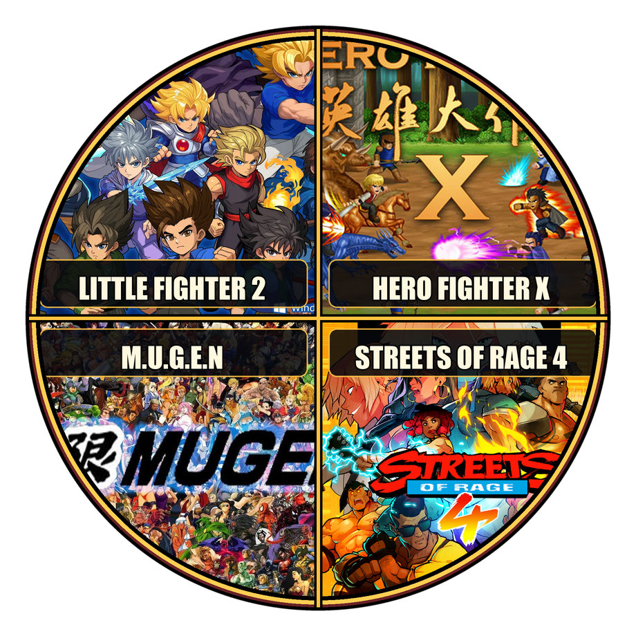
Four inspiration games: Little Fighter 2, Hero Fighter X, M.U.G.E.N, and Streets of Rage 4
The wheel highlights four references: Little Fighter 2, Hero Fighter X, M.U.G.E.N, and Streets of Rage 4. Classic arcade brawlers guide the 2.5D lane pressure, enemy waves, and stage pacing, while modern brawlers and action RPGs guide replayability, character identity, and loadout depth.
Combat in Divergency is defined by its speed, impact, and mechanical responsiveness. We want every strike, dash, and block to feel incredibly satisfying.
Fluid Traversal & Movement: Dash through lane pressure, cancel your attack animations to escape danger, and execute quick parries to turn the tide. Movement is not just a way to walk between fights—it is your primary survival tool, allowing for high-skill combat expressions.
Dynamic Physics & Hit-Stop: Every weapon impact features tailored visual hit-stop, camera shake, and screen-space particle effects that give combat a heavy, physical punch.
Encounter Pressure: You don't just fight passive targets. Enemy groups act in formations. Soldiers, shield bearers, ranged shooters, and brutal bosses force you to constantly reposition, break formations, and adapt your rhythm.
In Divergency, combat is about preparation as much as reflexes. Each fighter has access to an expansive pool of over 10 unique active skills, but you cannot bring them all. Before setting foot in a stage, you customize your combat deck by selecting only 4 active skills for the mission ahead.
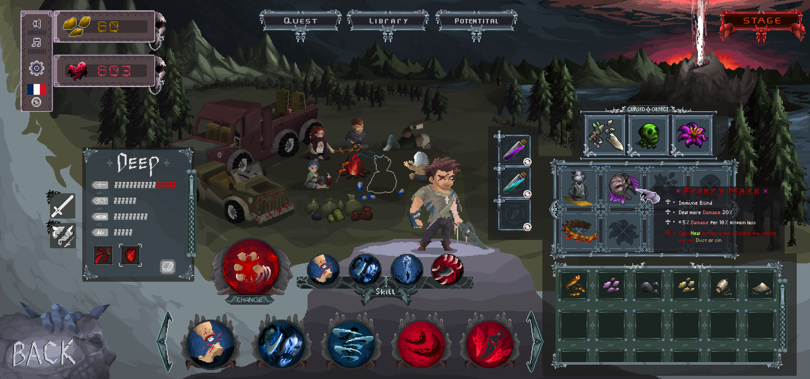
Character and mission selection UI
This limit changes how you approach each route:
Crowd Control Attunement: Equip wide-sweeping attacks, area pressure, and stun tools for dense enemy waves.
High Mobility Attunement: Bring dashes, air control, and traversal tools for hazard-heavy sections.
Guard-Breaking Attunement: Slot heavy impacts and shield-shattering strikes against defensive front lines.
Burst Damage Attunement: Pack high-damage finishers when preparing for major boss encounters.
The attunement system is designed to create tactical preparation without slowing down the action. You analyze the map, select your loadout, and immediately feel the weight of your choices in battle.
Skills are not static. As fighters level up, skill upgrades can improve damage, cooldown behavior, stamina or energy cost, and secondary effects.
You are not fighting this war alone. Divergency features a seamless, real-time player-to-AI command wheel that lets you orchestrate your squad without stopping the brawler action.
In-game ally command system
Quickly select a nearby ally and issue orders to coordinate attacks or protect your flanks:
Free: Release the squad back to independent AI behavior.
Come: Instantly regroup around the player's position.
Hold Left / Hold Right: Hold a specific flank to control lane pressure.
Line / Wedge / Circle: Shift the party's formation dynamically.
Synchronized Assist: Call a selected ally to trigger their signature support action (e.g., calling Block to drop a shield wall or Henry to throw smoke bombs).
While you brawl in real-time, the command system adds a satisfying layer of tactician control—pulling allies out of danger zones, locking down choke points, or calling in synchronized strikes exactly when a boss reveals a weak spot.
"I've fought in enough wars to know symbols don't bleed. People do."
Deep is a heavy melee fighter and former crusader who has survived too many wars. He hits hard, controls space, and carries the weight of a man who no longer wants to be used as a symbol.
Combat Style: Frontline Juggernaut / Crowd Control
Signature Weapon: Relic-Iron Greatsword
Movement Mechanic:[Developer Note: Replace this placeholder with your character details file data] (e.g., Heavy charge, ground slam cancels)
Squad Synergy: Absorbs frontline pressure, breaks shield formations, and peels enemies off vulnerable teammates.
"I'm still young. I still doubt. But when I run, I know exactly who I am."
Solei is young, fast, and confident when she moves, even when she still doubts herself. She is built for speed, pressure, and quick reads, trusting her movement before she trusts her certainty.
"Knowing where the enemy will be tomorrow is worth more than a thousand soldiers today."
Henry is a tactical veteran who works from the shadows. He reads the battlefield, gathers information, and supports the team when brute force is not enough.
Combat Style: Ranged Support / Battlefield Disruption
Signature Weapon: Silent Crossbow & Smoke Bombs
Movement Mechanic:[Developer Note: Replace this placeholder with your character details file data] (e.g., Tactical slide, smoke evasions)
Squad Synergy: Blinds enemies, slows down crowd movements, and provides cover so teammates can regroup.
"Every miracle has a price. Some choose to pay in steel; others, in blood."
Tulas is a blood and liquid mage. His abilities can create shields, platforms, filters, temporary paths, and dangerous offensive tools, but his power always carries a moral cost.
Combat Style: Area Denial / Platform Conjurer
Signature Weapon: Liquid Catalyst Core
Movement Mechanic:[Developer Note: Replace this placeholder with your character details file data] (e.g., Blood platform creation for lane elevation)
Squad Synergy: Creates defensive barriers and vertical paths, controlling the flow of the battlefield and shielding allies from harm.
"Call me boy or call me man. I'll stand on my own two feet and fight with my fists."
Block is a loyal young ally and defensive force. Saving him is one of the first campaign objectives, and his role reinforces the game's focus on trust, courage, party pressure, and commandable teamwork.
Combat Style: Pure Defensive Tank
Signature Weapon: Tower Aegis Shield
Movement Mechanic:[Developer Note: Replace this placeholder with your character details file data] (e.g., Stationary block parry, heavy shield bash)
Squad Synergy: Absorbs maximum damage, draws enemy aggro, and creates temporary invulnerability zones for the party.
Ghost begins as a nameless survivor pulled out of Jamerson's prison. The system cannot fully identify him, and that failure may be the reason the relic fragments cannot control him like everyone else.
Over 50+ enemies, each designed and animated by hand to demand a different strategy.
Human foes fight intelligently — shields protect gunners, ambushers flank, and no one fights to die.
NPC Marseille
Demons fight relentlessly — for death means nothing to them.
NPC Stage3
Bosses range from twisted mortals to nightmarish entities born from the Calamity itself.
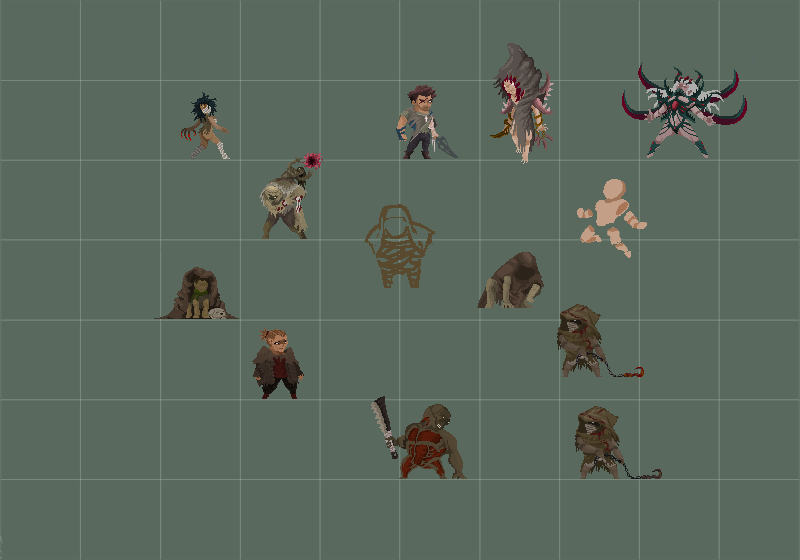
NPCs
Every miracle in Divergency leaves a wound.
Long ago, people killed a newborn creature from beyond their world, remembered as the Infant God. Its body was divided into five living relics: the Eye, Ear, Tongue, Heart, and Umbilical Cord. Each grants power, feeds on human desire, and seeks the others. Their survival is tied to recurring Calamities of disease and curses.
Deep, a former crusader, chose the rebuilt Marseille Autonomous Metropolis to raise his adopted niece Solei away from war. But behind its bright harbor and guarded streets, former officer Jamerson Obsworth uses refugees and prisoners as test subjects. He holds the Eye and believes it can awaken his infected daughter, Heniana, from cryogenic sleep.
When Block is captured while investigating the disappearances, Deep's team breaks into Bastonne Prison. They rescue Block, free Ghost--a nameless prisoner resistant to its drugs--and steal records proving that Jamerson is hunting the other relics. He believes their combined power can awaken Heniana.
That prison break is where the adventure begins. Branded as fugitives with nowhere safe left in Marseille, Deep's team follows Jamerson's trail across fractured lands. Each region holds another relic and another faction trying to use it. The team must reach the fragments first, uncover why the Calamities keep returning, and stop Jamerson from giving the Infant God a path back into the world.
Divergency is planned as a five-stage story campaign, with each major stage built around a relic fragment and a different way people justify cruelty.
Stage
Region
Focus
Stage 1
Marseille
Prison escape, undercity routes, gangs, secret police, research submarine
Stage 2
Sakuri
Sacred paths, hidden doors, identity, family, and the fragment called The Ear
Stage 3
Calvaria
Grave-city, old wars, false comfort, and the voices of the dead
Stage 4
Akam Meskul
Cursed mountain war zone, body horror, loyalty, and survival
Stage 5
The Cradle
Final relic convergence, memory, temptation, and the last test of the team
The core story is about refusing the easy lie that love, grief, faith, history, or survival can make sacrifice clean.
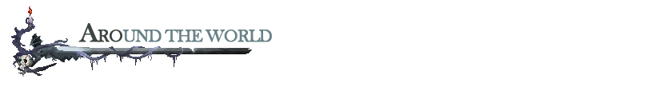
SlashArt
Divergency's world is built to feel dangerous, beautiful, and lived in. Its pixel art blends ruined industry, sacred landscapes, grotesque experiments, cursed wilderness, and hand-animated fighters into a dark fantasy campaign where every region has its own visual language.
Marseille's bright surface hides prisons, gangs, undercity routes, and forbidden laboratories. Sakuri's calm paths and sacred bridges conceal old manipulation. Later chapters move into grave-cities, cursed mountain war zones, and the dreamlike final space known as The Cradle, where grief, memory, and violence become physical places.
The stages are not just backdrops for arena fights. They include hidden routes, environmental details, puzzle moments, optional secrets, and quieter story beats between combat encounters. Exploration gives the world room to breathe, while each new region changes how battles feel and how the party moves through danger.
Each chapter has its own combat identity. Marseille emphasizes tight industrial spaces, prison escapes, gang pressure, and the research submarine. Sakuri shifts toward sacred routes, hidden doors, identity, and corruption. Calvaria, Akam Meskul, and The Cradle push the campaign into stranger territory, changing the atmosphere, enemy pressure, and route design as the story moves closer to the relics.
Sakuri stage environmentAkam Meskul world captureBamboo forest route with command HUDCalvaria route
Divergency is being built by a small independent team. Kickstarter support lets us keep the full story campaign as the priority and pay for the production work that turns the current playable build into a finished PC-first release.
The base campaign is focused on the main game, not extra modes. Funding goes toward the work backers will actually feel when they play: combat polish, stage content, playable character refinement, enemies, bosses, UI, audio, QA, release preparation, and reward fulfillment.
This campaign is completion funding for the full story campaign foundation. It does not mean every stretch feature is guaranteed at launch. Extra modes stay separated as stretch goals so the main campaign remains protected.
#Funding Goal: $20,000 - Full Story Campaign Foundation
Solei scouting the $20,000 funding goal
The $20,000 base goal is completion funding for the main story campaign. It covers the work needed to turn the current playable build into a finished PC-first release: combat polish, stage implementation, playable character refinement, enemies, boss tuning, UI, audio, QA, launch preparation, and backer reward fulfillment.
At a glance, the base goal is split between taxes, platform fees, and reserve (30%), gameplay programming and production (15%), pixel art and VFX (30%), QA/community/launch work (10%), music and sound effects , physical reward preparation (15%).
This draft uses a cautious fee and tax reserve because French micro-entreprise rates, VAT thresholds, and income-tax treatment depend on the final activity classification, year, and campaign total. The final public page should be checked against an accountant or official guidance before launch.
The roadmap starts with the protected $20,000 base goal. Everything above that is extra production scope. If a stretch feature threatens the main story release, the base campaign stays first and backers receive a clear production update.
Goal
Unlock
What it adds
$20,000
Full Story Campaign Foundation
Main campaign production, core combat, real-time squad commands, boss fights, QA, PC release, and digital delivery.
$30,000
The Arsenal: Skills, Items & Character Voices
Additional skill upgrades, new in-game items/relic pickups, expanded item art, and scoped character voice lines for combat barks and key story moments.
$40,000
Whispers of the Dead: Lore & Secrets
Hidden routes, character backstory events, secret rooms, and optional lore mini-boss encounters.
$50,000
Covenant of Two: LAN Network Co-op
2-player co-op over LAN/direct-IP network sessions, with separate screens, host/join UI, team-combo commands, and sync testing.
$60,000
Survival Modes & Boss Rush
Replay-focused combat modes, boss-rush structure, and expanded combat SFX polish.
This is a 24-month production plan from the end of the Kickstarter campaign, with physical reward shipping planned after the digital release window.
Window
Milestone
Month 0-1
Campaign wrap, backer survey preparation, production planning, reward validation
Month 1-3
Combat polish pass, clean gameplay capture, UI direction lock, production tools
Month 4-6
Stage 1 vertical slice: Bastonne, Marseille route flow, enemies, and first boss structure
Month 7-10
Stage 1 content build: Armorlite, Laundel, port ambush, submarine laboratory, and major experiment boss
Month 11-14
Stage 2 Sakuri and Stage 3 Calvaria content pass, relic mechanics, bosses, and story events
Month 15-18
Stage 4 Akam Meskul and Stage 5 The Cradle content pass, final systems, and campaign arc lock
Month 19-21
Full campaign alpha/beta: balancing, bug fixing, boss tuning, and backer feedback
Month 22-24
Polish: UI, audio, VFX, accessibility checks, localization pass, PC release candidate, digital rewards
Month 24-26
EU physical reward production and shipping window for poster, printed artbook, bracelet, and pixel accessory tiers
Backer-facing progress checkpoints are planned around visible milestones: combat polish footage, Stage 1 vertical-slice capture, stage-content updates, alpha/beta access for eligible tiers, and release-candidate updates.
Dates may shift if testing shows that a feature needs more work. If that happens, backers will receive clear updates explaining what changed, what is being fixed, and how it affects delivery.
Campaign currency is shown in USD in this draft. Physical rewards are EU-only at launch to keep fulfillment manageable.
Backer rewards should feel like a fair thank-you, not like random merchandise or a hidden store page. Every paid pledge tier includes campaign updates and one approved display name or alias on the digital supporter wall. Each tier includes the lower bundle named in its description; physical goods are included only in tiers that explicitly list them.
The eleven tier portraits turn the reward ladder into a visual descent through Divergency-style brainrot: the faces begin suspicious and controlled, then become furious, grinning, exposed, glitched, and finally fully mutated. The names follow the expression in each icon, while the reward descriptions stay literal about what backers receive.
The reward ladder for Divergency is built around six kinds of supporter value:
Recognition: one approved display name or alias on the digital supporter wall for every paid pledge tier, plus credits or beta credits where listed.
Digital gifts: wallpapers, avatar icons, a small lore dossier, Digital Evidence Pack PDF, soundtrack, Digital Field Artbook PDF, and the Field Relics Digital Art Sheet, a downloadable image/PDF page built from in-world relic and prop art.
Game access: the full PC digital key, an early-backer key tier, and beta access for feedback-focused backers.
Credits participation: a mid-priced digital tier for backers who want their approved name in the final credits without joining beta testing or physical fulfillment.
Collector objects: one poster, one printed Divergency Field Artbook/art zine, one Beacon bracelet, and one Pixel Character Patch & Keychain Set, with physical rewards limited to EU shipping at launch and any additional product concepts kept separate until confirmed.
Creative participation: limited higher tiers where backers can leave a short approved wall message or help shape one tightly scoped cosmetic or background-lore detail.
The rewards avoid pay-to-win items, exclusive combat power, or exclusive playable characters. Backers can receive access, recognition, development participation, and collector gifts, but the final game should remain fair for players who discover Divergency after Kickstarter.
Pledge
Reward
Supporter value
Estimated delivery
$5
Side-Eye Supporter
Campaign updates, one backer wallpaper, and one approved supporter-wall display name
Month 6 + Month 24
$10
Red-Eye Signal Pack
Side-Eye Supporter rewards plus a three-wallpaper set and avatar/icon pack
Month 6 + Month 24
$20
Crooked-Grin Early Bird, limited quantity
Red-Eye Signal Pack rewards plus a full PC digital game key at a lower early-backer price and mini lore dossier
Month 24
$25
Grim-Faced Recruit
Red-Eye Signal Pack rewards plus full PC digital game key and mini lore dossier
Month 24
$40
Skullgrin Deluxe
Grim-Faced Recruit rewards plus soundtrack, Digital Field Artbook PDF, Digital Evidence Pack PDF, and Field Relics Digital Art Sheet
Month 24
$60
Open-Mind Insider
Skullgrin Deluxe rewards plus one approved final-credits display name or alias and a credits-badge wallpaper variant
Month 24
$70
Brainrot Test Subject
Open-Mind Insider rewards plus beta access, private feedback form, and beta tester credit listing
Month 19-24
$95
Glitched-Out Scout, EU only
Brainrot Test Subject rewards plus one A3 Marseille/Divergency poster
Month 24-26
$120
Full-Meltdown Collector, EU only
Brainrot Test Subject rewards plus one A3 Marseille/Divergency poster, one printed Divergency Field Artbook/art zine, one Beacon bracelet, and one Pixel Character Patch & Keychain Set
Month 24-26
$250
Mind-Blown Scribbler, limited
Brainrot Test Subject rewards plus one approved short message/graffiti on a Bastonne prison wall
Month 24
$500
Final-Form Architect, limited
Brainrot Test Subject rewards plus one tightly scoped cosmetic or background-lore contribution
Each pledge uses one of the eleven expression-and-mutation portraits in imgs/campaign-panels/kick/reward as its visual identity. The portraits are tier mascots, not extra physical or in-game items. Physical product images are concept mockups; final materials and finishes may differ after vendor sampling. Potential add-ons are shown separately and are not included in any pledge unless they are confirmed before launch.
The Field Relics Digital Art Sheet is a downloadable visual/lore sheet showing in-world objects such as masks, tokens, vials, patches, and symbols with short captions. Field Relics remain art, lore, and cosmetic presentation--not paid equipment. Any relic or prop that appears inside the game will be discoverable or earnable by all players.
Choose your signal
Rewards At A Glance
Follow the signal from supporter recognition to digital rewards, beta access, collector goods, and tightly scoped creative participation. Every paid tier includes campaign updates and one approved name or alias on the digital supporter wall--never paid gameplay power.
Best digital value
$40 Skullgrin
Recognition tier
$60 Open-Mind
Collector goods
EU only
Gameplay promise
No paid power
Six signals, one clear reward path. Collector goods are EU only; all tiers avoid paid gameplay power.
Pledge Tiers
Recognition
$5 Side-Eye Supporter
Campaign updates, one backer wallpaper, and one approved display name or alias on the digital supporter wall.
Digital supporter pack
$10 Red-Eye Signal Pack
Side-Eye Supporter rewards plus a three-wallpaper set and avatar/icon pack.
Limited digital key
$20 Crooked-Grin Early Bird
Red-Eye Signal Pack rewards plus a full PC game key at the early-backer price and a mini lore dossier.
Standard digital key
$25 Grim-Faced Recruit
Red-Eye Signal Pack rewards plus a full PC game key and a mini lore dossier.
Recommended digital tier
$40 Skullgrin Deluxe
Grim-Faced Recruit rewards plus the soundtrack, Digital Field Artbook PDF, Digital Evidence Pack, and Field Relics Digital Art Sheet.
Recognition upgrade
$60 Open-Mind Insider
Skullgrin Deluxe rewards plus one approved final-credits display name or alias and a credits-badge wallpaper variant.
Feedback access
$70 Brainrot Test Subject
Open-Mind Insider rewards plus beta access, a private feedback path, and beta tester credit.
Light physical
$95 Glitched-Out Scout, EU only
Brainrot Test Subject rewards plus one A3 Divergency poster. Shipping is charged separately.
Physical collector
$120 Full-Meltdown Collector, EU only
Brainrot Test Subject rewards plus one A3 poster, one printed Divergency Field Artbook/art zine, one Marseille-inspired Beacon bracelet, and one Pixel Character Patch & Keychain Set. Shipping is charged separately.
Limited wall mark
$250 Mind-Blown Scribbler
Brainrot Test Subject rewards plus one approved message of up to 40 characters placed on a Bastonne prison wall.
Scoped collaboration
$500 Final-Form Architect
Brainrot Test Subject rewards plus one reviewed cosmetic or background-lore contribution. Limited to 3-5 backers.
Included Reward Previews
Product images are concept mockups. Final materials and finishes may differ after vendor sampling.
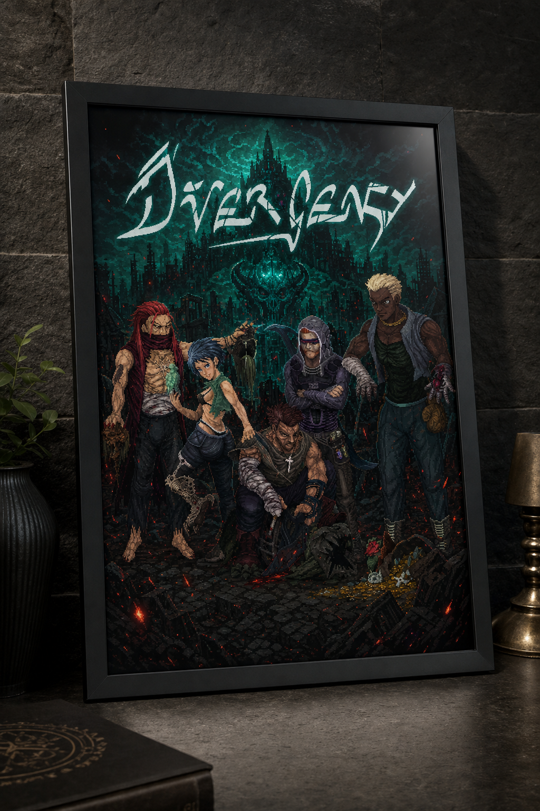
Guaranteed reward concept
A3 Divergency Poster
Included in the $95 Glitched-Out Scout and $120 Full-Meltdown Collector. Concept mockup; final paper stock and print finish may differ. Staging props are not included.
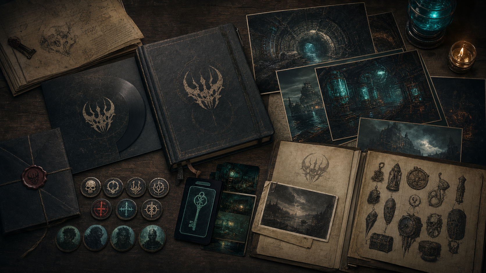
Digital + printed reward preview
Divergency Field Artbook
Digital PDF included from the $40 Skullgrin Deluxe tier upward. One printed artbook/art zine is included only in the $120 Full-Meltdown Collector, EU only. Staging props are not included.
Guaranteed reward concept
Marseille Beacon Bracelet
Included only in the $120 Full-Meltdown Collector. Concept mockup; final materials, sizing, and finish may differ after vendor sampling. Staging props are not included.
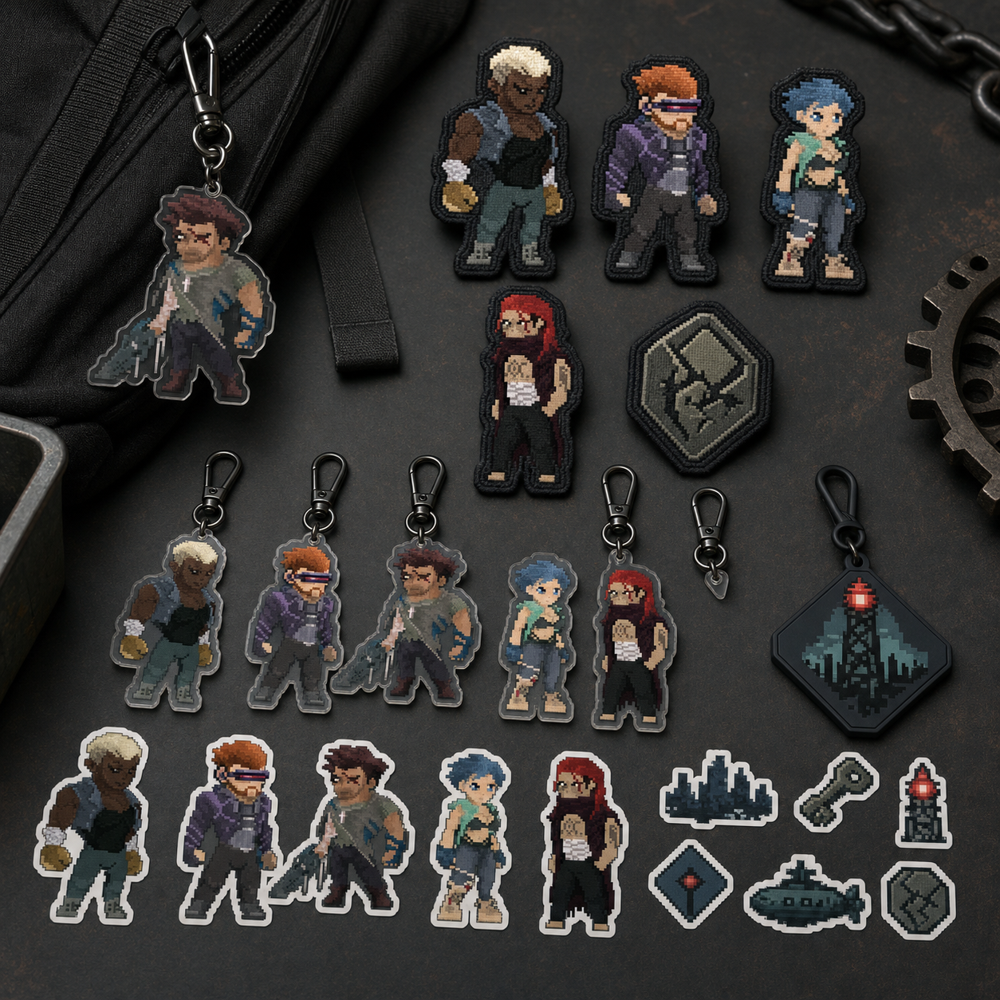
Guaranteed reward concept
Pixel Character Patch & Keychain Set
Included only in the $120 Full-Meltdown Collector, EU only. Concept mockup; final patch, sticker, acrylic charm, and bag-accessory counts may differ after vendor sampling. Staging props are not included.
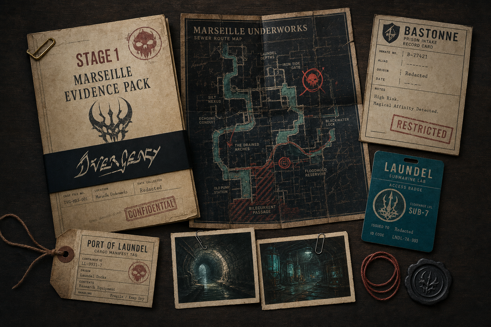
Guaranteed digital preview
Digital Evidence Pack
A downloadable PDF dossier included from the $40 Skullgrin Deluxe tier upward. This is a digital reward, not a physical packet.
Potential Add-Ons -- Not Included Yet
These concepts are not part of any pledge. Digital add-ons can be offered broadly; physical add-ons should stay limited to eligible EU physical tiers after production and shipping are confirmed.
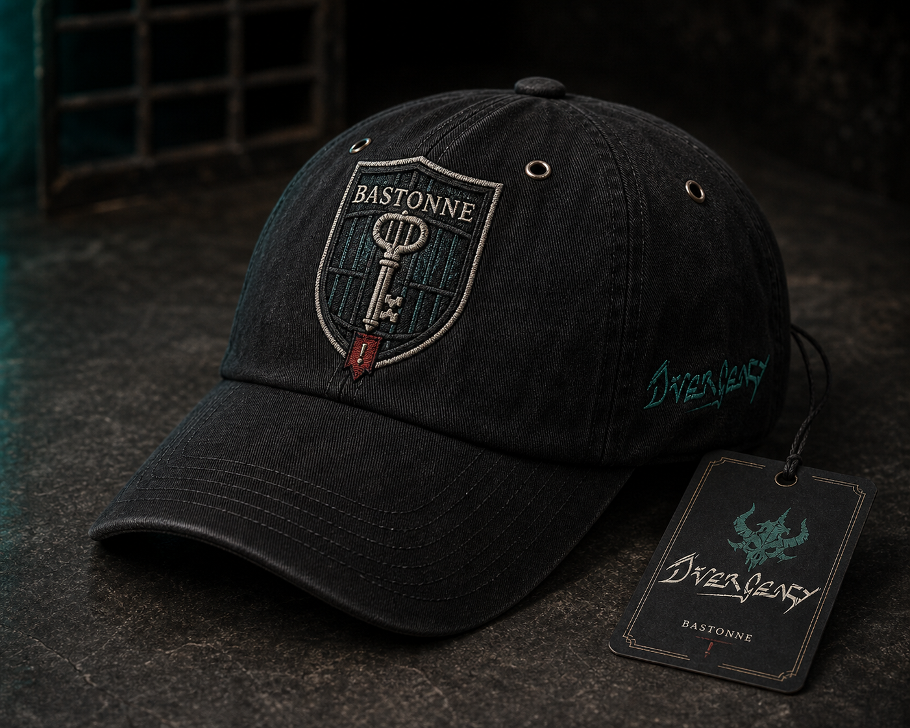
Potential add-on -- not included
Bastonne Cell Key Cap
A wearable concept that needs a vendor sample, adjustable-fit confirmation, package weight, and replacement policy before it can be offered.
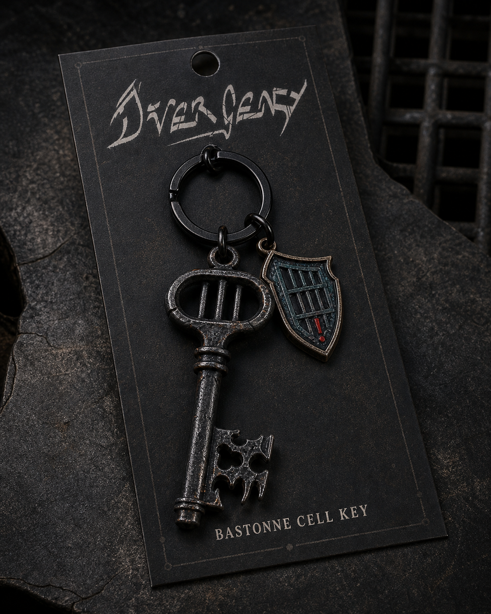
Potential add-on -- not included
Bastonne Cell Key Keychain
A compact concept that may work as an EU add-on after metal weight, packaging, minimum quantity, and shipping are confirmed.
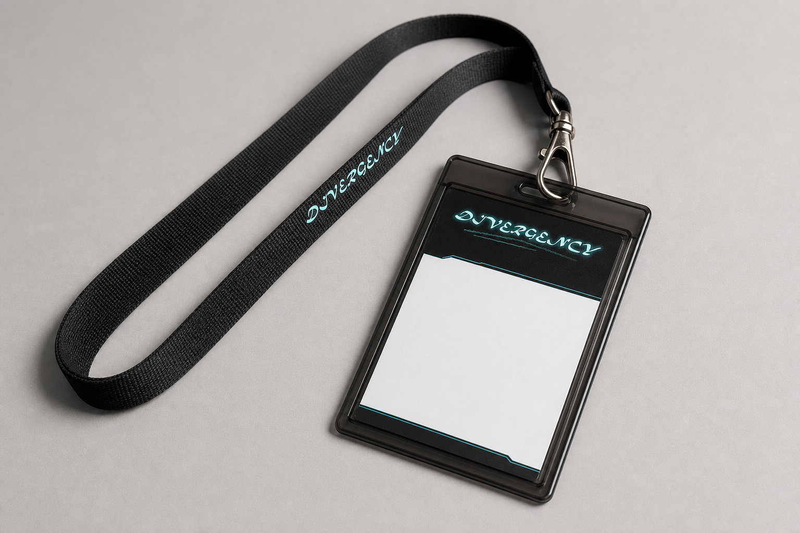
Potential add-on -- not included
Divergency Daily Access Badge
A lanyard-style concept that requires a print sample, supplier quote, package weight, and durability check before it can be offered.
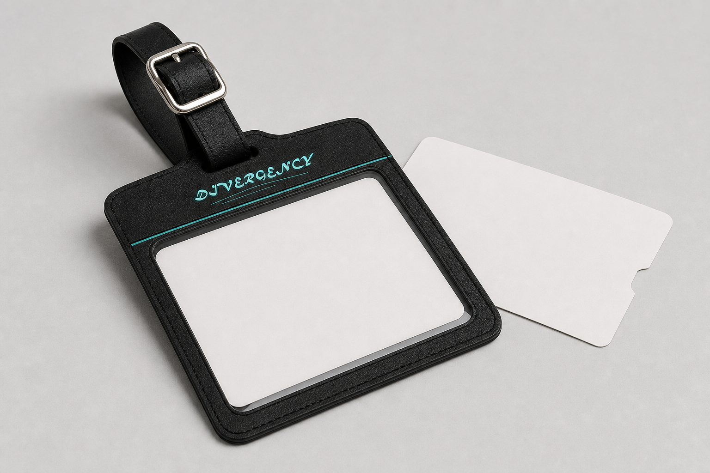
Potential add-on -- not included
Divergency Daily Cargo Tag
A Marseille-route concept that requires material, print-durability, packaging, and shipping confirmation before it can be offered.
The $5 Side-Eye Supporter tier gives a low-risk symbolic gift to people who mainly want to help. The new $10 Red-Eye Signal Pack fills the gap before the game-key tiers with a complete wallpaper set and avatar/icon pack, using digital assets already planned for the campaign.
The $20 Crooked-Grin Early Bird key gives the first supporters a clear reason to pledge early without lowering the normal game-key value for the whole campaign. The $25 Grim-Faced Recruit tier remains the standard digital copy, and extra keys can be handled as add-ons instead of a separate tier.
The $40 Skullgrin Deluxe, $60 Open-Mind Insider, and $70 Brainrot Test Subject tiers are the strongest digital-value tiers. The $40 tier is the clean global upgrade for music, art, lore, the Digital Field Artbook PDF, and Digital Evidence Pack material. The $60 tier adds visible recognition in the final game credits without forcing backers into testing. The $70 tier is for backers who actively want beta access and a feedback path while keeping fulfillment digital.
The $95 Glitched-Out Scout tier is the light physical option: one A3 poster plus the Brainrot Test Subject digital rewards. It adds shipping and packaging, but avoids a second manufactured object.
The $120 physical tier is priced above the digital tiers because it adds manufacturing, packing, shipping, damaged-package support, and address management. It should feel like the premium collector option, with the clearest collector anchor being the printed Divergency Field Artbook/art zine. The included items must stay exact: one A3 poster, one printed Field Artbook/art zine, one Beacon bracelet, and one Pixel Character Patch & Keychain Set unless another physical item is priced, sampled, and added to the tier before launch.
The creative backing tiers allow supporters to leave their mark on the game in a tiered, logical format that matches the world's dark fantasy identity:
At $250 (Mind-Blown Scribbler), backers gain a small, immersive storytelling opportunity that adds flavor to Bastonne without requiring new systems or complex assets.
At $500 (Final-Form Architect), backers collaborate on one tightly scoped cosmetic or background-lore contribution. This tier is strictly capped to avoid scope creep.
Add-ons can increase pledge value without creating too many reward tiers.
Digital add-ons can be offered broadly. Physical add-ons should be enabled only for eligible EU physical reward tiers, because Kickstarter does not show shippable add-ons to backers who selected a digital-only main reward.
Add-on
Suggested price
Notes
Extra PC digital key
$20-25
Best low-risk add-on because it has no shipping cost
Soundtrack + Digital Field Artbook
$15
Useful for backers who choose the standard game key but later want the deluxe digital pack
Digital Evidence Pack
$10-15
PDF-only upgrade for backers below Skullgrin Deluxe; do not present it as a physical packet
Final credits name upgrade
$10-15
Optional recognition upgrade for backers below Open-Mind Insider; one approved display name or alias only
A3 poster, EU only
$25 plus shipping
Keep to one poster size and one print vendor if possible
Printed Field Artbook/art zine, EU only
$25-40 plus shipping
Offer only after final page count, binding, paper stock, print quote, and package weight are confirmed
Beacon bracelet, EU only
$25-35 plus shipping
Offer only if unit cost, sizing, packaging, and replacement policy are confirmed
Bastonne cell key keychain, EU only
$12-18 plus shipping
Small physical add-on candidate; confirm metal weight, packaging, and minimum order quantity first
Bastonne cell key cap, EU only
$25-35 plus shipping
Potential wearable add-on; offer only after vendor samples, adjustable fit, packaging weight, and replacement policy are confirmed
Divergency Daily access badge, EU only
$12-18 plus shipping
Lanyard/badge add-on candidate; practical and visually clear but needs print/vendor quote
Divergency Daily cargo tag, EU only
$12-18 plus shipping
Travel/cargo tag add-on candidate; confirm material, print durability, and package weight
Final quantities should be locked before launch. Recommended limits: Crooked-Grin Early Bird around 200-300 backers, Glitched-Out Scout and Full-Meltdown Collector based on confirmed physical unit quotes, Mind-Blown Scribbler around 30-50 slots, and Final-Form Architect around 3-5 slots unless the team is certain it can absorb more review work.
Recommended featured reward: feature the $40 Skullgrin Deluxe for the broadest global appeal, or the $60 Open-Mind Insider if preview readers respond strongly to credit recognition. Do not feature an EU-only physical tier unless the campaign is intentionally focused on EU collectors.
Prepare visible sample images before launch for the wallpaper pack, Field Relics Digital Art Sheet, Digital Field Artbook, Digital Evidence Pack, lore dossier, poster, printed artbook/art zine, bracelet concept, and Pixel Character Patch & Keychain Set. Show the Bastonne cap only as a clearly labeled potential add-on until confirmed.
Any staged collector image must state exactly what is included. If envelopes, cards, tags, wax seals, or table props are only scene dressing, the caption must say they are not included.
Do not promise more than one poster size, one printed artbook size/binding, one bracelet design, one pixel accessory set, or multiple physical add-on variants unless production quotes are already confirmed.
Keep all supporter names subject to approval, character limits, and a final survey deadline.
Lock digital reward file formats before launch: JPG/PNG wallpapers, PDF dossier/artbook/Evidence Pack, MP3/WAV soundtrack, and Steam or platform key delivery where available. Lock the printed artbook page count, trim size, binding, paper stock, and proofing deadline before promising it as a physical item.
Reserve 5-10% extra physical items for damaged parcels, lost mail, and replacement handling.
Treat beta access as feedback participation, not as a guaranteed polished early version of the final game.
All in-game text, names, visual assets, and gameplay designs submitted by backers are subject to developer approval, editing, and revision to maintain appropriate tone, balance, and quality.
Collaborate on one scoped cosmetic or background-lore contribution.
Suggested options: name a minor non-interactive background NPC, help shape a weapon cosmetic skin, or help shape a passive skill badge icon.
Backers submit visual themes, color schemes, names, or short concepts.
To protect scope and game balance, this contribution does not add custom quests, new playable characters, stat advantages, active skill hitboxes, or unique combat mechanics.
No copyrighted or licensed characters, hate speech, explicit sexual content, real-world political targeting, or content that breaks immersion or Divergency's dark fantasy tone.
The development team keeps final approval on all names, designs, texts, dialogue lines, and mechanics.
If a submission does not meet guidelines, the backer will be asked to submit a revised proposal within a designated time window.
Physical rewards are limited to EU shipping for the campaign launch.
Planned shipping approach:
Ship-from region: France/EU.
Glitched-Out Scout or poster-only shipment estimated shipping: EUR 8-15 depending on EU destination.
Full-Meltdown Collector estimated shipping: EUR 12-22 depending on EU destination and final printed artbook weight.
Bracelet, printed artbook, Pixel Character Patch & Keychain Set, cap, keychain, badge, cargo tag, or combined collector shipment estimated shipping: EUR 12-22 depending on EU destination and final package weight.
Final country-by-country shipping prices should be entered before launch or confirmed through Kickstarter Pledge Manager before fulfillment.
Backer addresses and reward preferences will be collected through Kickstarter surveys or Pledge Manager.
Digital rewards will be delivered through Kickstarter digital rewards, game keys, or secure download links.
Physical add-ons should be available only to backers whose main reward tier includes physical shipping, so shipping rules stay simple and Kickstarter's add-on flow remains clear.
We are choosing EU-only physical rewards because posters, printed artbooks, and bracelets add packing, customs, replacements, and address-management work. Digital rewards remain available more broadly.
Combat-heavy games need iteration. Animation timing, hitboxes, enemy behavior, UI clarity, and difficulty balance can all take longer than expected. To reduce risk, the base goal focuses on the main story campaign first.
The full world of Divergency has room for more modes, side content, and playable variations than a small team should promise all at once. Stretch goals are separated from the base campaign so the core release stays protected.
Co-op in this stretch goal means LAN/direct-IP network play, not shared-screen couch co-op. That makes the feature heavier than same-screen play: it needs host/join flow, connection handling, gameplay-state synchronization, latency tolerance, save/session rules, co-op UI, and dedicated testing. Public matchmaking, relay-server infrastructure, PvP, and broader online-service features are not launch promises in this campaign draft. If they are explored later, they will be treated as separate technical work after the base game is stable.
The current release plan is PC-first. Any additional platform can require technical checks, store page review, certification, or extra porting work. Additional platforms will be considered after the base experience is stable.
Posters, printed artbooks, bracelets, and pixel accessory sets require production, packing, address collection, shipping, and replacement handling. To keep that manageable, physical rewards are EU-only at launch, with shipping estimates shown before backers pledge.
If the project hits delays or roadblocks, we will post clear updates explaining what happened, what is being fixed, and how it affects the schedule.
Divergency is for players who remember the joy of side-scrolling action, the tension of mastering a fighter, and the satisfaction of leading a small party through dangerous spaces.
Your support helps us finish the full story campaign, sharpen the combat, complete the world beyond Marseille, and bring Divergency's dark fantasy brawler to release.
Back Divergency and help us build a new 2D action game with skill loadouts, ally commands, handcrafted stages, and a story about refusing to sacrifice people for someone else's miracle.
Tài liệu này là bản đọc nhanh của tuyến truyện chính trong Divergency_Complete_Story_VI.md. Trọng tâm là mạch nhân quả: vì sao nhóm đi từ Bastonne đến Marseille, vì sao kế hoạch trốn thất bại, và vì sao từng Stage sau đó nối tự nhiên vào Stage kế tiếp.
Thế giới đã trải qua nhiều đợt Đại Họa, một căn bệnh/lời nguyền bắt nguồn từ những mảnh thân thể còn sống của một Thần Sơ Sinh bị con người giết và phân tách từ thời cổ đại. Những mảnh đó không chết. Chúng vẫn nhìn, nghe, gọi, đập và tìm đường trở về với nhau.
Jamerson Obsworth, một cựu sĩ quan của Marseille, mất gần như tất cả sau khi con gái Heniana mắc bệnh và phải ngủ đông. Ông tìm được Con Mắt, một mảnh của Thần Sơ Sinh, rồi tin rằng mình có thể cứu con bằng cách dùng tù nhân, người tị nạn và người bệnh làm vật liệu thí nghiệm. Jamerson không nghĩ mình là quái vật. Ông tin mọi tội ác đều có thể được biện minh nếu nó đưa Heniana trở lại.
Đội của Deep, Henry, Solei, Tulas và Block bị kéo vào bí mật này khi Block bị Jamerson bắt. Trong Bastonne, họ cứu Block và gặp một tù nhân vô danh về sau được gọi là Ghost/Stranger, người có khả năng kháng lại một phần ảnh hưởng của các mảnh thần. Từ đây, câu chuyện không còn là một cuộc trốn chạy khỏi Marseille, mà thành hành trình ngăn con người biến đau khổ thành lý do để hi sinh người khác.
Marseille là một đô thị tự trị giàu có, được bảo vệ nghiêm ngặt và tự quảng bá như thành trì cuối cùng của trật tự. Bên dưới vẻ sáng bóng đó là nhà tù, thí nghiệm, người mất tích và một bộ máy dùng nỗi sợ để vận hành thành phố.
Game mở bằng đội Deep chuẩn bị giải cứu Block, đồng minh thân thiết đã bị Jamerson bắt trong lúc điều tra. Người chơi có thể bắt đầu bằng Solei tại căn cứ để học chiến đấu và phối hợp đội, rồi chuyển sang nhiệm vụ Bastonne.
Kế hoạch Bastonne vỡ trận khi Jamerson kích hoạt lockdown, khí mê tràn hành lang và tù nhân bị đổi phòng. Trong hỗn loạn, Stranger tỉnh dậy dù lẽ ra phải bất tỉnh. Anh nghe lời nhờ của Block, có thể gây tiếng động để đội Deep tìm đến, rồi có thể giúp Block thoát khỏi khí mê hoặc bỏ qua để tự chạy. Block vẫn được cứu theo canon, nhưng lựa chọn của Stranger ảnh hưởng thương tích của Block và mức độ tin tưởng của đội.
Sau Bastonne, Stranger không còn là một tù nhân bình thường. Đội gọi anh là Ghost, vừa vì anh gần như vô danh, vừa vì hệ thống của Jamerson không nhận diện được anh.
Sau khi cứu Block, cả nhóm không định lao vào phòng nghiên cứu. Họ định cắt đuôi, giấu xe, nghỉ tạm ở Armorlite, rồi rời Marseille trước bình minh. Nhưng Jamerson đã phản ứng nhanh hơn. Cảnh sát mật treo thưởng trong thế giới ngầm, các băng nhóm canh lối ra, và garage an toàn bị lần ra.
Ở Armorlite, Jacques giúp Henry kiểm tra đường thoát. Nhưng băng đua xe và tay chân của thế giới ngầm tấn công quán. Sau trận, nhóm hiểu rằng đi đường mặt đất sẽ bị bắt hoặc bị bán đứng. Henry chuyển sang phương án B: đi xuống cống ngầm.
Cống dưới Marseille không chỉ là đường nước thải. Nó là tầng ruột của thành phố: đường bảo trì cũ, metro bỏ dở, chợ đen và nơi người nhập cư bị đẩy xuống sống. Nhóm đi qua Laundel, một thành phố ngầm có luật riêng, phe phái riêng và những người vừa sợ Jamerson vừa phải sống nhờ hệ thống của ông.
Từ Laundel, nhóm tìm được đường ra bến cảng. Tại đây có một khoảng lặng: mọi người nói về khả năng rời Marseille, bắt đầu lại ở phía đông, và thoát khỏi danh phận tội phạm. Nhưng chiếc thuyền hẹn trước trống rỗng. Cảnh sát mật phục kích. Boss là Marius Vane, cánh tay phải của Jamerson trong bộ máy mật, người xem tù nhân, người bệnh và dân nhập cư như chi phí vận hành.
Sau trận, nhóm tra hỏi lính cuối cùng và biết một đồng minh của Henry đã bị đưa xuống một tàu ngầm nghiên cứu ngoài khơi. Thuyền của cảnh sát mật có autopilot đến đó. Từ đây, họ không còn chỉ trốn nữa: nếu bỏ đi, bằng chứng và những người bị bắt sẽ chìm xuống biển.
Trong tàu ngầm, nhóm thấy sự thật về Jamerson: tù nhân bị nối vào máy móc, cơ thể lai, mẫu tế bào mang ký hiệu Heniana, và các thí nghiệm dùng cấu trúc sinh học của Thần Sơ Sinh để tạo vật chứa mới. Boss là SheMal, một thất bại hoàn hảo: không còn là người bình thường, nhưng cũng không phải quái vật vô tri.
Tàu ngầm sụp đổ. Nhóm tưởng Jamerson chết, nhưng ông đã thoát bằng thân xác thế mạng, mang dữ liệu và dấu vết dẫn tới Sakuri. Kết thúc Stage 1, nhóm có bằng chứng về Heniana và hiểu rằng đứa trẻ nằm giữa tội ác của Jamerson vẫn còn sống hoặc ít nhất còn được giữ trong trạng thái mong manh. Họ rời Marseille để truy đuổi ông.
Nhóm đến một bán đảo phía đông, nơi Cái Tai được thờ như quyền năng của thánh nữ Sakuri. Cái Tai nghe được tiếng nói, ý nghĩ, âm mưu và cả tiếng bệnh trong máu. Jamerson tin nó có thể nghe ra tần số của căn bệnh trong Heniana.
Ở làng chài, nhóm gặp Heni, một bé gái có khuôn mặt giống Heniana. Cha nuôi của cô là điệp viên của Jamerson, đã âm thầm ghi chép sức khỏe và gửi mẫu máu về Marseille. Heni không biết mình là thí nghiệm nhân bản. Cô chỉ biết mình hay mơ thấy phòng trắng và một người cha chưa từng gặp.
Trên đường lên thủ phủ, Solei gặp những người có liên hệ với dòng máu của mẹ mình, nhưng họ không chấp nhận cô như người trở về. Stage này là gương của Solei: cô phải hiểu rằng mình không cần một nơi duy nhất công nhận mới có quyền tồn tại.
Sakuri không phải kẻ ác bẩm sinh. Cô là một đứa trẻ bị bịt mắt, nhốt trong cung điện, bị ép dùng Cái Tai để phục vụ gia tộc và lãnh chúa. Khi quyền năng làm cô nghe quá nhiều lời nói dối, cầu cứu và âm mưu, cô muốn phá hủy thế giới để được im lặng.
Nhóm đánh bại Sakuri. Jamerson xuất hiện qua đường ngầm, lấy dữ liệu từ Cái Tai và mang Heniana rời đi. Cái Tai vẫn để lại lời gọi dẫn cả nhóm đến Calvaria, nơi Cái Lưỡi đang nằm trong tay một giáo hội thờ cái chết.
Heni quyết định đi cùng nhóm. Cô không muốn bị Jamerson lấy lại, cũng không muốn sống như mẫu thử. Solei gọi cô là em mà không đặt điều kiện.
Calvaria là thành phố mộ, nơi người sống trả tiền để nghe người chết nói. Giáo hội Hơi Thở Cuối nắm giữ Cái Lưỡi, mảnh thần có thể giả giọng người chết, dịch ngôn ngữ cổ và biến lời nói thành mệnh lệnh.
Ban đầu, giáo hội dùng Cái Lưỡi để an ủi người mất thân. Nhưng an ủi dần thành dịch vụ, dịch vụ thành quyền lực, quyền lực thành nhà tù. Người giàu mua lời tha thứ. Người nghèo bán xương, bán tên, bán cả nỗi đau để được nghe một câu cuối cùng.
Stage này nên là nơi đào sâu nhất vào Deep và Henry. Cái Lưỡi không chỉ giả giọng người chết; nó nói thẳng vào tim gan ruột của người nghe. Nó nhắc Deep về những cuộc chiến xưa, những đồng đội đã chết, những bức tượng anh hùng xây bằng xác người, và câu hỏi liệu đời anh còn ý nghĩa gì nếu anh không còn làm biểu tượng. Với Henry, nó moi lại các quyết định bẩn, những người anh không cứu được, sự mệt mỏi vì cứ phải làm người tỉnh táo sau mỗi thảm họa, và nỗi sợ rằng anh chỉ đang tiếp tục chiến đấu vì không biết sống kiểu khác.
Calvaria vì vậy không chỉ là stage về cái chết, mà là stage về sự kiệt sức sau chiến tranh. Deep phải đối diện việc sức mạnh của mình từng bị người khác dùng để hợp thức hóa bạo lực. Henry phải đối diện việc lòng trách nhiệm có thể trở thành một dạng tự trừng phạt. Cái Lưỡi thắng nếu nó khiến họ tin rằng người chết có quyền ra lệnh cho người sống tiếp tục đổ máu.
Jamerson đến trước nhóm và bắt Cái Lưỡi nói bằng giọng Heniana. Khi giọng ấy hỏi liệu Heniana tỉnh dậy có còn nhận ra cha không, Jamerson vượt qua ranh giới cuối cùng: ông không còn chỉ muốn cứu con gái, mà muốn sở hữu một phiên bản không thể từ chối mình.
Boss Stage 3 là Dàn Hợp Xướng, một cơ thể xương khổng lồ ghép từ giọng nói, hài cốt và lời cầu nguyện. Nó thử từng nhân vật bằng giọng người chết: Henry bị kéo về tội lỗi cũ, Deep bị gọi lại làm biểu tượng chiến tranh, Solei bị ép chọn một căn tính duy nhất, Heni bị buộc biến mất để trả chỗ cho Heniana, và Ghost bị gọi bằng một cái tên cũ chưa chắc còn thuộc về anh.
Với Ghost, Stage 3 chỉ nên mở thêm một khe hở, chưa giải thích hết. Cái Lưỡi có thể gọi một tên cũ, nhắc đến một phòng trắng, một mã hồ sơ bị xóa, hoặc một câu nói mà Ghost chưa từng kể với ai. Người chơi hiểu rằng Ghost có quá khứ thật, nhưng chưa biết đó là quá khứ của nạn nhân, vật thí nghiệm, hay một thứ gì phức tạp hơn.
Sau chiến thắng, nhóm hiểu sự thật lớn hơn: Thần Sơ Sinh có thể không chủ động nguyền rủa thế giới. Các mảnh thân thể bị giữ lại quá lâu đang phát ra một tiếng gọi méo mó. Con Mắt nhìn, Cái Tai nghe, Cái Lưỡi gọi, Trái Tim đập. Khi những tín hiệu đó chạm vào con người, chúng thành bệnh, ảo giác, cuồng tín và ham muốn hồi sinh.
Nhóm nhận ra không thể chỉ phá từng mảnh, cũng không thể hồi sinh thần. Họ phải tìm nơi tiếng gọi bắt đầu: Dây Rốn. Nhưng trước đó, họ phải đi qua Akam Meskul, nơi Trái Tim đang đập.
Akam Meskul là vùng núi bị nguyền, nơi nghi lễ giết Thần Sơ Sinh từng diễn ra. Xác thánh long Akam Meskul, từng chở anh hùng Aramut vào vùng cấm, giờ trở thành đường hầm cho con người đi sâu vào lời nguyền.
Ở đây có hai phe chính. Con Cháu Chiếc Nôi tin thế giới đã giết thần của họ nên phải bị thanh tẩy. Tàn Dư Sáu Vương Quốc tin họ có thể dùng khoa học để hồi sinh thần rồi đẩy nó ra khỏi thế giới. Một phe biến phục thù thành thánh chiến. Phe kia biến sinh tồn thành thí nghiệm và bạo lực có tổ chức.
Stage này vẫn có tiếng vọng cho Deep và Solei, nhưng trọng tâm cảm xúc nên chuyển nhiều hơn sang Tulas và Block.
Với Tulas, Akam Meskul không cần phải là quê hương hay tín ngưỡng của anh. Nó liên quan gián tiếp qua cách cả vùng đất này ám ảnh bởi máu, huyết thống, độc tố và cơ thể sống. Năng lực điều khiển máu/chất lỏng của Tulas trở nên vừa hữu ích vừa đáng sợ: anh có thể khóa vết thương, kéo máu độc ra khỏi người bị nhiễm, dựng khiên từ chất lỏng ô nhiễm, mở đường qua vùng khí độc bằng màng lọc tạm, hoặc dùng máu trên chiến trường làm điểm neo cứu người. Nhưng mỗi lần làm vậy, anh càng chạm vào ranh giới giữa cứu chữa và xâm phạm thân thể. Stage 4 hỏi Tulas rõ hơn: một sức mạnh khiến người khác sợ có thể được dùng để bảo vệ họ mà không biến anh thành thứ họ ghê tởm hay không.
Với Block, Akam Meskul là nơi những bộ lạc và phe phái nói rất nhiều về anh hùng, sức mạnh, cơ thể, tốc độ, huyết thống và chiến công. Block không nhanh nhất, không hào nhoáng nhất, cũng không phải kiểu anh hùng được kể trong bài ca. Nhưng ở Stage này, anh nhận ra giá trị của mình: đứng vững khi người khác cần đường rút, giữ cầu cho dân chạy, che khiên cho người bị thương, vác người qua vùng độc, hoặc chặn một cánh cửa đủ lâu để cả nhóm sống sót. Sự trưởng thành của Block không phải là trở thành biểu tượng, mà là hiểu rằng sức mạnh có thể là một nơi trú tạm cho người khác.
Deep vẫn nhận ra truyền thuyết anh hùng Aramut đã bị cắt sửa để che thất bại của các vua. Solei vẫn thấy cả hai phe đều muốn dùng máu của cô để chứng minh điều gì đó. Nhưng hai ý này nên làm nền cho Tulas và Block: một người đối diện câu hỏi về máu, một người đối diện câu hỏi về cơ thể và che chở.
Trái Tim của Thần Sơ Sinh bị gắn vào một cỗ máy chiến tranh: Titan Trái Tim. Nó không phải pin năng lượng. Nó khuếch đại cảm xúc: thù hận thành bạo động, sợ hãi thành diệt trừ, tình yêu của Jamerson thành quyền sở hữu.
Jamerson đến đúng lúc hai phe giao chiến. Ông dùng dữ liệu từ Con Mắt, Cái Tai và Cái Lưỡi để làm Trái Tim đập theo nhịp Heniana. Trận Titan nên buộc đội chia việc rõ: Tulas cứu người và kiểm soát máu độc giữa chiến trường, Block giữ tuyến rút lui và bảo vệ dân thường, Deep phá hủy loa tuyên truyền, Henry ra lệnh không truy sát người đầu hàng, Solei cứu trẻ bị hai phe đánh dấu.
Sau trận Titan, Jamerson lấy được Trái Tim và bỏ lại hàng trăm người đang chết để tiếp tục đưa Heniana vào vùng cấm. Cú đánh này khiến Tulas và Block nhìn thấy mặt trái của "cứu một người bằng mọi giá": một người dùng cơ thể kẻ khác làm nguyên liệu, người còn lại dùng sức mạnh của mình để giữ những cơ thể ấy còn sống.
Mảnh Cái Lưỡi còn lại nhắc nhóm: người chết có thể gọi, nhưng người sống phải được chọn có đáp lại hay không. Con đường cuối cùng mở ra qua xương sống Akam Meskul, dẫn đến The Cradle.
The Cradle là nơi nằm giữa hiện thực và giấc mơ, nơi Dây Rốn của Thần Sơ Sinh vẫn nối với thứ gì đó ngoài thế giới. Ký ức của các Stage trước xuất hiện chồng lên nhau: Armorlite, Laundel, làng chài, Calvaria, xác rồng, phòng ngủ đông của Heniana.
The Cradle không chỉ là địa điểm cuối. Nó là bài kiểm tra cuối của toàn bộ hành trình. Mỗi vùng ký ức ép nhóm quay lại một cám dỗ cũ: Marseille hỏi họ có bỏ người khác để tự thoát không, Sakuri hỏi họ có dùng một đứa trẻ làm công cụ không, Calvaria hỏi họ có để người chết ra lệnh cho người sống không, Akam Meskul hỏi họ có biến lịch sử và máu thành lý do giết người không.
Tại đây, các phe kéo đến cùng lúc. Con Cháu Chiếc Nôi muốn hồi sinh thần để thanh tẩy nhân loại. Tàn Dư Sáu Vương Quốc muốn hồi sinh thần để đẩy nó về nơi cũ. Jamerson muốn dùng thần để cứu Heniana. Ba lực này chính là ba lựa chọn sai đã được gieo từ trước: phá hủy bằng thù hận, dùng thần như công cụ sinh tồn, hoặc biến một đứa trẻ thành cái cớ cho phép màu.
Đến đây, tuyến bí ẩn của Ghost mới rõ hơn. Những mảnh ký ức rải từ Bastonne, Calvaria và Akam Meskul ghép lại: anh từng là một thí nghiệm thất bại, một người không phù hợp làm vật chứa và không dễ bị điều khiển. Vẫn có thể để mở một phần câu hỏi ai đã xóa hồ sơ của anh, ai là người đầu tiên thử nghiệm trên anh, và vì sao anh sống sót. Điều chắc chắn là anh không phải người được chọn. Anh là người sống sót từ một lỗi sai, và có quyền chọn mình là ai.
Heni yếu đi khi đến gần Dây Rốn vì cơ thể cô cộng hưởng với Heniana. Nhưng điều đó không biến cô thành chìa khóa vô tri. Càng nghe thấy giấc mơ của Heniana, Heni càng hiểu mình không phải phần thay thế cho ai. Cô có quyền sợ, quyền từ chối, và quyền tự chọn hành động cuối cùng của mình.
Jamerson đặt buồng ngủ đông của Heniana vào Dây Rốn. Con Mắt, Cái Tai, Cái Lưỡi và Trái Tim cùng hướng về cô bé. Nhưng sự thật lộ ra: nếu nghi lễ thành công, Heniana có thể tỉnh dậy trong cơ thể thần, nhưng ký ức, ý chí và nhân tính của cô sẽ bị Thần Sơ Sinh nhấn chìm. Jamerson không cứu con. Ông đang dùng hình ảnh con làm cửa cho một thứ khác bước vào.
Trong trận cuối, Jamerson trở thành vật chứa của các mảnh thần. Khi Heniana tỉnh lại trong vài phút ngắn, cô không hiểu hết chiến tranh hay lời nguyền, nhưng cô thấy Heni, thấy những người lạ đang chảy máu vì mình, và thấy cha mình đã biến nỗi sợ mất con thành quyền sở hữu. Cô nói rằng nếu phải sống bằng cách làm mọi người khác ngủ mãi, cô không muốn. Câu nói đó làm Jamerson vỡ ra. Nhưng Con Mắt chiếm lấy phần ham muốn còn lại trong ông, biến ông thành The Father-Eye.
Ghost cắt liên kết giữa các mảnh thần và cơ thể Jamerson. Nhóm không chọn phá hủy các mảnh, cũng không hồi sinh Thần Sơ Sinh. Canon chọn cách thứ ba: trả các mảnh về qua Dây Rốn, tức là không sở hữu, không giết lại, không biến thần thành công cụ, mà tháo nút lời gọi đã bị con người bóp méo quá lâu.
Đoạn cuối là một nghi lễ ngược. Ghost cắt Con Mắt vì anh là lỗi sai hệ thống không đọc được. Solei gọi Heni bằng tên riêng, không phải bản sao. Henry ra lệnh cuối cùng: không ai được chết để trả phí cho phép màu. Deep giữ đường rút thay vì đứng làm biểu tượng chiến thắng. Tulas dùng máu để cứu người, không mở khóa nghi lễ. Block giữ cổng cho người sống rời đi. Heni và Heniana cùng chạm vào mạch sáng, nhưng không ai thay thế ai.
Các mảnh thần tan ra, The Cradle ngừng mơ. Jamerson dùng phần sức cuối giữ Con Mắt không bám vào Heniana. Đó là hành động đúng đầu tiên của ông sau rất nhiều tội ác, nhưng không xóa những gì ông đã làm. Không ai trong nhóm gọi ông là anh hùng. Ông chết như một người cha thất bại, cuối cùng đã dừng ra lệnh.
Đại Họa không biến mất ngay, nhưng thế giới bắt đầu nhẹ đi: sông bớt đen, cơn sốt đến chậm hơn, trẻ sinh ra ít mang vết bệnh hơn. Marseille mất bí mật lớn nhất của Jamerson và phải đối diện với bằng chứng về Bastonne. Laundel không thành thiên đường, nhưng người dưới thành phố có thêm một câu chuyện để kể.
Sakuri trở thành cảnh báo về việc biến trẻ em thành thánh nhân. Calvaria mất quyền giả giọng người chết, buộc người sống tự nói lời tạm biệt. Akam Meskul vẫn nguy hiểm, nhưng hai phe không còn bảo vật để biến chiến tranh thành định mệnh.
Heniana còn sống hay không được để mở theo hướng bittersweet: cô có thể thở một mình trong thời gian ngắn, được Heni nắm tay, và được nghe lần đầu không phải tiếng máy móc. Heni không thay thế Heniana. Heni sống tiếp như một con người riêng, mang khuôn mặt giống Heniana nhưng không còn bị định nghĩa bởi khuôn mặt đó.
Ghost rời The Cradle cùng đồng đội. Khi Henry hỏi anh có muốn tìm lại tên cũ không, Ghost đáp rằng nếu ngày nào đó cần, anh sẽ tìm. Hôm nay, anh đã có người gọi.
Divergency không nói rằng đánh bại boss cuối sẽ xóa sạch đau khổ. Câu chuyện nói điều khó hơn: có những mất mát không thể đảo ngược, và chính việc chấp nhận điều đó mới ngăn con người biến tình yêu, niềm tin, an ủi, lịch sử hoặc sinh tồn thành giấy phép để hi sinh người khác.
Nhóm nhân vật chính thắng vì họ từ chối suy nghĩ như kẻ thù: không biến Heniana thành lý do, không biến Heni thành bản sao, không biến Ghost thành người được chọn, không biến người chết thành mệnh lệnh cho người sống, và không biến bất kỳ ai thành vật liệu cho một phép màu.
#Hệ thống tên gọi và ý nghĩa (Name & Meaning Tables)
Dưới đây là bảng tra cứu chi tiết tên gọi của các nhân vật, môi trường, màn chơi (Stage) và các thực thể quan trọng trong Divergency, kèm theo ý nghĩa biểu tượng và động lực sáng tạo đằng sau mỗi cái tên.
#1. Nhân vật chơi được (Playable Characters / Players)
Tên Nhân Vật
Ý Nghĩa Chữ Viết & Biểu Tượng
Vai Trò & Động Lực Sáng Tạo
Deep
"Sâu thẳm" / "Trầm lặng"
Phản ánh nội tâm sâu sắc, sự chịu đựng và quá khứ đầy vết thương chiến tranh. Anh muốn chôn vùi danh vọng anh hùng cũ để sống một cuộc đời bình dị, bảo vệ Solei.
Solei
Gốc từ "Soleil" (tiếng Pháp nghĩa là Mặt Trời)
Tượng trưng cho ánh sáng mặt trời rực rỡ, nhiệt huyết tuổi trẻ và hy vọng ấm áp chiếu rọi vào cuộc đời u tối của Deep. Cô tìm kiếm căn tính độc lập của mình.
Henry
Gốc Đức cổ (Heimeric - "Người bảo hộ gia quyến")
Thể hiện vai trò là người dẫn dắt, lập kế hoạch, giữ sự tỉnh táo và gánh vác trách nhiệm bảo vệ sự an toàn cho cả nhóm.
Đại diện cho sự thanh lọc và cứu chữa. Năng lực điều khiển chất lỏng/máu của anh vừa hữu ích vừa đáng sợ, đặt ra câu hỏi về ranh giới giữa cứu người và cấm thuật.
Block
"Khối chắn" / "Tấm khiên"
Đúng như tên gọi, anh là người cản hậu kiên cường, tấm khiên bảo vệ đồng đội bằng cơ thể vững chãi, tượng trưng cho lòng tin vững chắc trong đội.
Ghost / Sarrasin
Ghost: Bóng ma vô hình<br>Sarrasin: Kiên cường như lúa mạch đen
Ghost là biệt danh do đội đặt vì hệ thống không nhận diện được anh. Tên thật của anh là Sarrasin (loại lúa mạch đen hoang dã, có thể sinh trưởng kiên cường ở những vùng đất sỏi đá khắc nghiệt nhất) – tượng trưng cho việc anh là "lỗi sai hệ thống" sống sót qua các thí nghiệm tàn bạo nhất của Jamerson.
Phản diện chính của câu chuyện. Ông sẵn sàng chiếm đoạt mạng sống của người khác để hồi sinh con gái mình, bám víu vào tình cha con ích kỷ đến mức mù quáng.
Heniana
Kết hợp từ Hana (đóa hoa) và Hen (cô độc)
Con gái của Jamerson, đóa hoa cô độc bị giam cầm trong buồng ngủ đông, nguồn cơn gián tiếp dẫn đến mọi thí nghiệm tàn độc của cha mình.
Heni
Bản thể rút gọn từ tên Heniana
Cô bé nhân bản từ Heniana ở làng chài. Cái tên thể hiện sự độc lập: cô không phải là bản sao hay công cụ thay thế cho bất kỳ ai mà là một con người tự do riêng biệt.
Jacques
"Kẻ nâng đỡ" / "Người dẫn đường"
Bartender đứng tuổi ở quán bar Armorlite, người âm thầm chỉ lối và hỗ trợ nhóm đi qua cống ngầm Marseille khi bị dồn vào ngõ cụt.
Marius Vane
Marius: Chiến tranh lạnh lùng / Vane: Chong chóng đón gió
Cảnh sát mật của Marseille. Hắn xem con người như những con số chi phí vận hành, kẻ cơ hội phục vụ cho bất kỳ kẻ mạnh nào để duy trì trật tự bề ngoài.
SheMal
Ghép từ She (cô ấy) và Mal (bệnh dịch / ác quỷ)
Trùm của Stage 1, một vật thí nghiệm thất bại hoàn hảo bị biến đổi cơ thể, đại diện cho nỗi đau đớn và tiếng thét vô vọng của những nạn nhân dưới tay Jamerson.
Sakuri / Sakura
"Hoa anh đào" mong manh trước gió
Thánh nữ của bán đảo phía đông. Cái tên tượng trưng cho số phận mong manh bị giam cầm trong cung điện, phải lắng nghe những tiếng thì thầm dối trá của thế gian.
Aramut
"Vực thẳm" / "Sự hy sinh quên mình"
Người anh hùng huyền thoại cổ đại đã hy sinh bản thân để tiêu diệt và phân tách Thần Sơ Sinh đầu tiên, bảo vệ nhân loại.
The Father-Eye
"Cha-Mắt" (Sự kết hợp quái dị)
Trùm cuối do Jamerson biến thành khi bị Con Mắt nuốt chửng hoàn toàn. Thể hiện sự biến dạng kinh hoàng khi tình yêu thương bị biến thành sự chiếm đoạt vô độ.
---
#3. Khu vực & Môi trường (Environments & Locations)
Tên Môi Trường
Ý Nghĩa Chữ Viết & Biểu Tượng
Vai Trò & Động Lực Sáng Tạo
Armorlite
"Giáp nhẹ" / "Đá lửa ẩn mình"
Quán bar/Safehouse của Jacques giữa Marseille. Nơi ẩn náu tạm thời giúp nhóm nghỉ ngơi, vá víu vết thương trước khi đối mặt với cuộc truy đuổi của cảnh sát mật.
Laundel
Kết hợp từ Launder (rửa trôi) và Dell (thung lũng)
Chợ ngầm trong ga metro bỏ dở dưới lòng đất Marseille. Nơi nước thải thành phố và những mảnh đời nhập cư bị gạt bỏ cùng trôi về và nương tựa vào nhau.
Mizero Honor
Mizero (Hy vọng trong tiếng Rwanda) & Honor (Danh dự)
Tên của chiếc tàu ngầm nghiên cứu ngoài khơi. Ban đầu được Jamerson đặt với hy vọng cứu sống con gái một cách danh dự, nhưng cuối cùng lại biến thành một phòng thí nghiệm đen tối dưới đáy biển sâu.
Naminoura
"Sóng vỗ bờ" trong tiếng Nhật
Làng chài hoang tàn ở bán đảo Sakuri, nơi đón nhận những tiếng rì rầm của sóng biển mang theo tiếng gọi tiềm thức của Cái Tai.
Gekkoukan
"Nguyệt Quang Điện" (Cung điện trăng sáng)
Cung điện nội địa nơi Sakuri bị giam cầm. Tượng trưng cho vẻ đẹp lạnh lẽo, cô độc, hoàn toàn biệt lập với nỗi đau của người dân bên ngoài.
Vespera Crypt
"Hầm mộ hoàng hôn"
Nơi giấu Cái Lưỡi ở Calvaria. Tượng trưng cho sự im lặng vĩnh hằng của cái chết, nơi hoàng hôn buông xuống mọi cuộc đối thoại của thế giới người sống.
Kardias Peak
"Đỉnh Trái Tim" (Gốc từ Kardia - tiếng Hy Lạp cổ)
Đỉnh núi cao nhất ở Akam Meskul, nơi Trái Tim của Thần Sơ Sinh đập những nhịp phẫn nộ, khuếch đại lòng thù hận của hai phe chiến tranh.
Aletheia Nexus
"Tâm điểm của sự thật trần trụi"
Trung tâm của Stage 5 (The Cradle). Nơi ảo ảnh biến mất, bắt buộc các nhân vật phải đối mặt với sự thật trần trụi và đưa ra quyết định cuối cùng về việc trả lại các mảnh thần.
Nhà tù kiên cố nơi mở đầu trò chơi. Nơi các nhân vật gặp gỡ Ghost và thực hiện cuộc giải cứu Block đầy kịch tính, khơi nguồn hành trình.
Stage 1: Marseille
Siêu đô thị cảng tự trị thối rữa
Đại diện cho ảo tưởng về một trật tự văn minh hoàn hảo được xây dựng bằng sự bóc lột âm thầm đối với người nghèo và tù nhân.
Stage 2: Sakuri
Mảnh đất lắng nghe
Vùng đất của Cái Tai, tượng trưng cho mối nguy hại khi biến một đứa trẻ thành thánh nhân và sự lan truyền độc hại của những lời dối trá.
Stage 3: Calvaria
Đồi sọ của người chết (Skull)
Thành phố mộ nơi giấu Cái Lưỡi. Tượng trưng cho sự mệt mỏi sau chiến tranh và việc biến nỗi đau mất mát thành công cụ trục lợi tâm linh.
Stage 4: Akam Meskul
Huyết mạch của rồng cổ
Vùng núi bị nguyền chứa Trái Tim. Tượng trưng cho việc con người biến lịch sử phục thù và sinh tồn thành cái cớ để phát động các cuộc thánh chiến tàn khốc.
Stage 5: The Cradle
Chiếc nôi khởi nguyên
Nơi nằm giữa hiện thực và giấc mơ. Tượng trưng cho sự quay về điểm khởi đầu, nơi con người phải chấp nhận buông bỏ quyền lực phép màu để thế giới hồi sinh tự nhiên.
Narrative bible
Complete Story
Full Divergency story structure with premise, themes, central cast, five major stages, ending, and gameplay notes.
Read
89 min
Sections
14
Tables
0
Visual Slots
Browse all images found in imgs/. Edit IMAGE_SLOTS to pin priority images first.
Bản này viết lại cốt truyện tổng thể của Divergency theo hướng liền mạch hơn, có đủ 5 Stage lớn, động lực nhân vật, đường dẫn giữa các địa điểm, và một cái kết để lại dư âm. Tài liệu tập trung vào câu chuyện, chủ đề, và logic hành trình; level script chi tiết, thoại từng câu, và cân bằng gameplay có thể tách ra thành tài liệu riêng.
Thế giới đã đi qua nhiều đợt Đại Họa: một căn bệnh lạ đi kèm những lời đồn về một lời nguyền bắt nguồn từ vùng Viễn Đông. Nó không hủy diệt tất cả trong một lần, nhưng để lại quá nhiều vùng bất ổn: thị trấn mất người, tuyến đường bị bỏ hoang, biên giới đóng mở thất thường, và những nơi không còn ai muốn nhắc tên. Giữa bức tranh rạn nứt đó, Marseille Autonomous Metropolis, thường được gọi ngắn là Marseille, nổi lên như một siêu đô thị tự trị giàu có và được canh phòng nghiêm ngặt.
Marseille không phải thành trì cuối cùng của văn minh, nhưng nó muốn mọi người tin như vậy. Nó có quân đội, cảnh sát, tiền tệ, nhà máy, nông trại nhân tạo, nhiên liệu, nhà tù, và một bộ máy hành chính gần như không cần bất kỳ quốc gia nào bên ngoài. Trên bề mặt, thành phố vẫn sáng, vẫn đông, vẫn vận hành như một cỗ máy hoàn hảo. Nhưng càng nhìn xuống vùng ven, càng thấy có điều gì đó đang âm thầm bào mòn nó: của cải dồn về trung tâm, người nhập cư bị coi như vật liệu lao động, các vụ mất tích bị xếp vào hồ sơ bệnh dịch, và một mạng lưới quyền lực ngầm đang dùng nỗi sợ để kiểm soát thành phố.
Ở phía dưới thành phố ấy, Jamerson Obsworth, một cựu sĩ quan từng được kính trọng, đang làm điều khủng khiếp nhất đời mình: biến tù nhân, người tị nạn, và chính lương tâm của mình thành vật liệu nghiên cứu để cứu con gái Heniana.
Nhưng Jamerson không chỉ dựa vào khoa học. Ông đang nắm giữ Con Mắt, một phần thân thể còn sống của một vị Thần Sơ Sinh từng bị giết và phân xác từ thời cổ đại. Con Mắt trao cho Jamerson tri thức để cứu con. Đổi lại, nó muốn một cơ thể mới.
Từ đó, câu chuyện của Divergency không còn là hành trình đánh bại một kẻ xấu đơn giản. Đây là hành trình đi qua những xã hội đang tự thuyết phục mình rằng tội ác của họ là cần thiết: một người cha vì con, một thánh nữ vì tự do, một giáo hội vì niềm an ủi, một dân tộc vì phục thù, một liên minh vì sự sống còn. Nhóm nhân vật chính phải tìm cách ngăn tất cả, nhưng không được để mình trở thành một dạng bạo lực khác.
Cứu một người bằng cách hủy hoại hàng nghìn người khác không phải là tình thương, mà là nỗi sợ mất mát được ngụy trang thành tình thương.
Niềm tin, khoa học, chính nghĩa, ký ức và tình thân đều có thể thành quái vật nếu con người dùng chúng để tự cho phép mình bỏ qua đau khổ của kẻ khác.
Người chết có thể được tưởng nhớ, nhưng không được biến thành mệnh lệnh bắt người sống tiếp tục đổ máu.
Quá khứ không thể hồi sinh nguyên vẹn. Điều còn lại có ý nghĩa là cách người sống chọn tiếp tục sau mất mát.
Sức mạnh không chỉ để đánh bại kẻ khác. Nó cũng có thể là cách giữ cửa, che chở, cứu người, và không biến nỗi sợ của người khác thành lý do để mình trở thành quái vật.
Divergency là sự tách đường: mỗi nhân vật đều đứng trước một lối rẽ giữa phục thù và bảo vệ, giữa cứu rỗi và kiểm soát, giữa bị đặt tên và tự chọn mình là ai.
Thứ được gọi là Thần Sơ Sinh không phải một vị thần theo nghĩa con người hiểu. Nó là một sinh thể sơ sinh đến từ bên ngoài thế giới, rơi vào thế gian trong một nghi lễ cổ đại. Những người đầu tiên tìm thấy nó vừa kính sợ vừa tôn thờ. Có người coi nó là đứa con của trời, có người coi nó là lời nguyền, có người coi nó là vũ khí.
Cuối cùng, con người giết nó khi nó vẫn là một cá thể chưa hoàn thiện. Thân xác bị cắt thành nhiều phần và phân tán khắp thế giới để nó không bao giờ có thể trở lại. Nhưng niềm tin đó sai. Mỗi bộ phận vẫn sống, vẫn mang một mảnh linh hồn của Thần Sơ Sinh, và vẫn muốn được trở về với nhau.
Năm mảnh có vai trò trong cốt truyện chính:
Con Mắt: thấy được ký ức, ham muốn, sợ hãi, và những thứ con người cố tình che giấu. Jamerson là người đang giữ nó.
Cái Tai: nghe được tiếng nói, âm thanh, ý nghĩ, và lời nói thầm kín từ rất xa. Sakuri bị biến thành thánh nữ vì có thể chịu đựng nó.
Cái Lưỡi: nói bằng giọng của người chết, dịch mọi ngôn ngữ, và biến niềm tin thành mệnh lệnh. Một giáo hội tử thần giữ nó.
Trái Tim: khuếch đại cảm xúc sống, lòng thù hận, tình thương, và ý chí tập thể. Nó nằm trong vùng núi bị nguyền, nơi hai phe người suýt diệt nhau vì "chính nghĩa" riêng.
Dây Rốn: đầu nối ban đầu giữa Thần Sơ Sinh và thứ nằm bên ngoài thế giới. Nếu dùng nó để hồi sinh Thần Sơ Sinh, thế giới hiện tại sẽ bị xóa sạch dần dần. Nếu trả các mảnh thần về qua Dây Rốn, lời nguyền có thể chấm dứt, nhưng mọi ảo tưởng về hồi sinh cũng kết thúc.
Ở một nơi xa xôi khác, Deep từng là biểu tượng chiến tranh, một người được đưa lên làm anh hùng khi các thành phố cần niềm tin. Nhưng mọi bức tượng đài đều được xây bằng xác người. Sau nhiều cuộc chiến, Deep mệt mỏi vì bị biến thành biểu tượng, không muốn tiếp tục sống như một huyền thoại lang thang nữa.
Deep
Khi nhận nuôi Solei, anh đưa cô đến Marseille để có một đời sống ít nhất trông giống bình thường: làm việc lặt vặt, sửa đồ, tránh chính quyền, đôi khi va vào băng nhóm địa phương nhưng không để rắc rối lớn tới gia đình nhỏ. Anh không giả vờ mình là dân thường hoàn toàn; anh chỉ cố để Solei lớn lên với nhiều thứ hơn là chiến trận, xung đột.
Hành trình của Deep không phải là đánh bại kẻ mạnh hơn. Đó là học cách dùng sức mạnh mà không để người khác dùng tên mình để hợp thức hóa chiến tranh.
Solei là cháu của Deep, mang dòng máu gốc Á từ mẹ. Ở Marseille, cô nhanh nhẹn, nhiệt huyết, nổi loạn theo kiểu tuổi trẻ, nhưng vẫn luôn có cảm giác lạc lõng.
Khi bước vào hành trình của câu chuyện, Solei dần trưởng thành hơn và bắt đầu hiểu rõ hơn về bản thân, về dòng máu của mình. Stage 2 là nơi cô đối diện những câu hỏi đã canh cánh từ lâu: mình thật sự thuộc về đâu, liệu có nơi nào chứa mình như một mái nhà hay không?
Qua hành trình, Solei không tìm thấy một "quê hương đúng nghĩa" để gắn mình vào. Cô tìm thấy một điều khác: mình có thể đứng giữa nhiều nền văn hóa mà không cần xin phép ai để được tồn tại.
Trước Marseille rất lâu, Henry, Deep và vài đồng đội từng được gọi là anh hùng ở một vùng đất xa. Họ đã cứu nơi đó khỏi một thế lực hắc ám, và cuộc chiến ấy thật sự kết thúc bằng chiến thắng. Nhưng chiến thắng không trả lại người đã chết, không xóa được những quyết định bẩn, và không cho Henry cảm giác mình có quyền nghỉ ngơi. Vì vậy khi Deep cố sống bình thường ở Marseille, Henry chọn con đường ẩn danh hơn: đi trong các mạng lưới tin tức, bảo vệ những ai tình cờ rơi vào tầm tay mình, và cố giữ phần "anh hùng" còn lại không biến thành quyền lực.
Tulas là một pháp sư trẻ và là bạn của Solei ở Marseille. Anh không giống kiểu pháp sư chỉ đứng sau lẩm nhẩm đọc chú. Năng lực của Tulas là điều khiển máu và chất lỏng: kéo dòng nước, làm đông chất lỏng thành hình, mở cánh mỏng để bay/ngã chậm, tạo khiên, tạo bệ đỡ, hoặc biến một vệt máu trên sàn thành lưỡi móc kéo kẻ địch.
Ở đời thường, Tulas giúp nhóm sống kín đáo hơn: lọc nước bẩn, che dấu vết máu, vá đường ống, giữ một quán nhỏ hoặc gara không bị băng nhóm ép quá sâu. Trong chiến đấu, anh là nhân vật phối hợp mạnh hơn là người gánh sát thương chính. Deep có thể bám vào khối chất lỏng của Tulas để lao lên không trung; Tạo khiên để che chở mọi người.
Điểm nguy hiểm của Tulas là năng lực của anh luôn chạm vào ranh giới thân thể. Điều khiển máu có thể cứu người, khóa vết thương, hoặc tạo đường sống, nhưng cũng rất dễ bị hiểu như cấm thuật. Câu hỏi cá nhân của Tulas là liệu một sức mạnh đáng sợ có thể được dùng mà không biến người dùng thành thứ người khác sợ nhất hay không.
Anh không có tên, bị bắt, bị tra tấn, bị tiêm thuốc, và lẽ ra phải bất tỉnh khi Jamerson ra lệnh gây mê toàn khu. Nhưng anh tỉnh lại.
Lý do bên ngoài: trong quá trình bị thử nghiệm, có thể anh được tiêm một chất đối kháng để kiểm tra khả năng chống bệnh, vô tình làm mất tác dụng của thuốc mê.
Lý do sâu xa: cơ thể của anh từng tiếp xúc với một lượng rất nhỏ dư chất từ Thần Sơ Sinh trong quá khứ. Điều này không biến anh thành "người được chọn", nhưng làm hệ thần kinh của anh lệch khỏi tần số mà các mảnh thần dùng để thôi miên con người. Anh là một lỗi sai của hệ thống, và chính lỗi sai đó cho anh cơ hội tự chọn mình là ai.
Sau khi thoát Bastonne, đồng đội gọi anh là Ghost vì anh gần như im lặng, xuất hiện như bóng ma trong những nơi lẽ ra không ai còn sống. Về sau, biệt danh này không còn mang nghĩa "kẻ vô danh" nữa. Nó trở thành lời nhắc rằng anh không cần quá khứ cho phép mới được sống tiếp.
Block là thành viên hoặc đồng minh thân thiết của đội Deep bị Jamerson bắt giữ trong một cuộc điều tra trước đó. Nhiệm vụ mở đầu của đội không chỉ là lấy bằng chứng ở Bastonne, mà còn là giải cứu Block.
Block cuối cùng được đội cứu, nhưng Stranger có thể ảnh hưởng trạng thái của anh. Nếu Stranger giúp Block khi nhà tù náo loạn, Block thoát khỏi khu khí mê với thương tích nhẹ hơn và là người đầu tiên nói rằng Stranger không bỏ mặc anh. Nếu Stranger không giúp, Solei vẫn cứu Block, nhưng đội phải đánh thêm để kéo anh ra, Block yếu hơn ở Stage 1, và sự nghi ngờ dành cho Stranger nặng hơn.
Về gameplay, Block là bằng chứng sống rằng COMMAND không chỉ là cơ chế điều khiển NPC mà là lòng tin trong đội. Sau khi trở lại nhóm, anh có thể giữ cửa, phá vách, giữ chân kẻ địch, hoặc bảo vệ đồng đội.
Jamerson không bắt đầu như một ác quỷ. Ông từng là sĩ quan, từng có gia đình, từng yêu vợ con. Sau tai nạn mất bàn tay phải, ông về thành phố, tham gia lực lượng trị an, rồi dần dần leo lên chính trị. Con gái Heniana bị đâm bằng con dao nhiễm bệnh trong một vụ cảnh sát giải cứu con tin thất bại. Bệnh viện chỉ có thể đưa cô bé vào trạng thái ngủ đông.
Từ ngày đó, Jamerson tin rằng thế giới đã cướp con gái ông. Và vì thế, ông cho mình quyền cướp lại bất cứ thứ gì từ thế giới.
Mỗi tội ác của Jamerson đều có một câu trả lời duy nhất: "Ta làm để cứu Heniana." Điều đáng sợ là câu trả lời đó không phải lời nói dối. Ông thật sự tin vậy.
Heniana là con gái thật của Jamerson, nằm trong buồng ngủ đông. Cô không phải "phần thưởng" cho ai chiến thắng, cũng không phải lý do để tha thứ cho Jamerson. Cô là một đứa trẻ bị đặt vào trung tâm mọi quyết định của người lớn mà không bao giờ được hỏi ý kiến.
Sang Stage 2, nhóm gặp một bé gái bán hàng rong trong làng chài, giống Heniana đến đáng sợ. Cô bé này là bản thể nhân bản từ tế bào của Heniana, được Jamerson tạo ra để theo dõi khả năng kháng bệnh trong môi trường thật. Điệp viên của Jamerson đóng vai cha cô bé, ghi chép từng cơn sốt, từng vết loét, từng lần cô bé cười.
Nhóm tạm gọi cô bé là Heni. Ban đầu đây chỉ là cách gọi để phân biệt với Heniana. Về sau, Heni tự giữ cái tên đó như một lời khẳng định: cô không phải bản sao của ai nữa.
Nhìn từ đồi cao, Marseille vẫn là thành phố cảng Địa Trung Hải quen thuộc của đầu thập niên 2000: nắng xanh, biển rộng, mái ngói đỏ, những con đường dốc men theo triền đá, cầu cạn nối các khu dân cư với bến cảng, và nhà thờ trên đỉnh đồi nhìn xuống cả vịnh. Sau các đợt Đại Họa, thành phố được sửa sang và quản lý chặt hơn: cảng sạch hơn, phố xá sáng hơn, bệnh viện và khu dân cư mới mọc lên, khiến người mới đến dễ tin rằng đây là một nơi có thể sống yên ổn. Nhưng càng rời những quảng trường, bến du thuyền và các khu phố sáng sủa, mặt sau của Marseille càng lộ ra: khu cách ly , kho hàng , nhiều bến cảng , ngõ ngách , khu ổ chuột chui bẩn thỉu , dân nhập cư , trẻ em lớn lên cạnh các nhà máy và những doanh trại luôn sáng đèn , và nhiều lúc nghe thấy tiếng hét , xì xào khó chịu.
Jamerson sinh ra trong một gia đình trung lưu có gốc lâu đời tại Marseille, sau đó kết hôn với một phụ nữ từ gia đình giàu có sa cơ. Cuộc hôn nhân ban đầu là thỏa thuận giữa hai gia đình, nhưng theo thời gian, Jamerson thật sự gắn bó với vợ và hai con: Jemerny và Heniana.
Khi Heniana 12 tuổi, cô và mẹ dừng chân tại một quán cà phê gần rìa quận trung tâm. Một vụ truy đuổi giữa cảnh sát và ba người tị nạn xảy ra. Một kẻ bị bệnh bắt Heniana làm con tin, đặt con dao đầy máu vào cổ cô bé. Cảnh sát bắn trượt phát đầu. Hai kẻ còn lại bị hạ, kẻ giữ Heniana hoảng loạn và đâm dao vào cô bé trước khi bị bắn chết.
Vết thương không sâu, nhưng máu trên dao mang căn bệnh từ phương Đông. Heniana rơi vào cơn nguy kịch. Bệnh viện đưa ra lựa chọn: để cô bé chết trong vài ngày, hoặc đưa vào ngủ đông cho đến khi y học có câu trả lời.
Gia đình Obsworth mua một buồng ngủ đông đặc biệt đặt trong dinh thự. Người mẹ gần như sống bên buồng đó. Bà ít nói chuyện với Jemerny, ít rời khỏi phòng, và mỗi khi máy móc phát ra tiếng cảnh báo, bà lại như vỡ từng mảng ký ức.
Sau một vụ khủng bố vào hệ thống năng lượng, dinh thự mất điện trong 10 giây. Máy phát dự phòng khởi động lại ngay, Heniana không sao. Nhưng khi Jamerson chạy đến, ông thấy vợ mình cào lên lớp kính và kim loại của buồng ngủ đông đến bật móng tay, máu dây thành vệt trên mặt kính trắng, miệng gọi tên con gái như người đã mất trí.
Từ khoảnh khắc đó, Jamerson không còn tìm cách sống với nỗi đau. Ông quyết định đánh bại nó.
Ở Bastonne, một pháo đài cũ ngoại ô, Jamerson và đồng minh biến nhà tù thành cơ sở nghiên cứu riêng. Ban đầu là thử nghiệm máu, thuốc, tế bào bệnh. Sau đó là giải phẫu. Sau nữa là tái tạo cơ thể. Nhưng khi Con Mắt rơi vào tay ông trong một chiến dịch chống khủng bố, mọi ranh giới cuối cùng biến mất.
Con Mắt làm tất cả người trong phòng phát điên hoặc chết. Jamerson là người sống sót duy nhất vì ham muốn của ông quá hẹp, quá sâu, quá đơn độc: cứu con gái. Con Mắt nhìn thấy điều đó và đưa ra giao kèo. Nó cho ông tri thức. Ông cho nó một cơ thể.
Jamerson cắt bỏ phần còn lại của cánh tay phải đã hư hỏng để nuôi Con Mắt bằng máu, thần kinh, và máy móc. Từ đó, bàn tay giả và găng tay không còn là để che giấu tai nạn nữa. Nó che giấu một thứ đang nhìn lại thế giới.
Phần chơi nên bắt đầu ở căn cứ tạm của đội Deep, không phải ngay trong phòng giam của Stranger. Trước nhiệm vụ, Deep yêu cầu Solei khởi động:
"Ta muốn cháu chứng minh cháu có thể tham gia nhiệm vụ giải cứu lần này."
Bastonne
Đây là phần hướng dẫn tự nhiên. Người chơi điều khiển Solei để học di chuyển, né, đánh thường, combo, chưởng, phản đòn, cầm/nhặt/ném vật thể, và phối hợp cơ bản với đồng đội. Nếu Tulas có mặt trong đội từ đầu, anh có thể tạo bệ chất lỏng cho Solei nhảy qua vật cản, dựng khiên nước để chặn đạn tập, hoặc kéo một thùng kim loại đến vị trí cần ném vào công tắc. Qua lời thoại, người chơi biết Block là người của đội hoặc đồng minh thân thiết đã bị Jamerson bắt. Nhiệm vụ tới Bastonne vì vậy có hai mục tiêu: cứu Block và lấy bằng chứng về thí nghiệm của Jamerson.
Stage 0 cutscene - Team Deep leaves the base for Bastonne
Cutscene beat: Team Deep leaves the base by jet ski, crosses the dark harbor, and approaches Bastonne from the outer waterline before the rescue begins.
Bastonne
Henry, Deep, Solei và một nhóm nhỏ đột nhập Bastonne. Tulas có thể đi cùng để hỗ trợ, hoặc ở ngoài giữ tuyến rút lui, tùy quy mô đội hình mà thiết kế chọn. Trước đó, Henry chỉ mua được thông tin về dãy giam đặc biệt của Block, không mua được số phòng. Block biết điều này: nếu đêm giải cứu xảy ra và lính gác ngoài cửa gục xuống vì khí mê, anh phải gây tiếng động lớn để đội tìm đúng phòng.
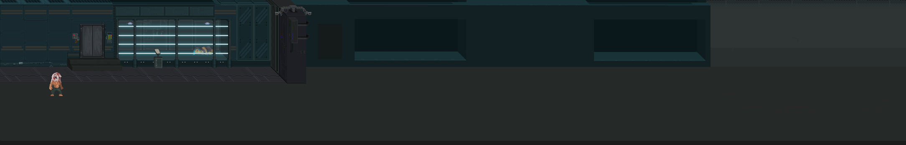
Dãy giam đặc biệt BastonneDãy giam đặc biệt Bastonne - detailed strip
Dãy giam đặc biệt là khu màn hình ngang dài, thấp và nặng, nối giữa pháo đài cũ và phần phòng thí nghiệm cải tạo. Hình ảnh nên giữ cùng ngôn ngữ với Bastonne: tường đá xám bẩn, khung sắt đen, ánh đèn lạnh bị cắt thành từng mảng nhỏ, hơi nước và khí mê chạy sát sàn, các chi tiết cơ khí lộ ra nhưng không biến khu này thành sci-fi sạch sẽ. Đây vẫn là nhà tù cổ bị ép thành cơ sở nghiên cứu, nên mọi thứ phải có cảm giác chắp vá, ẩm, rỉ, và bị dùng quá lâu.
Khu này có ba lớp đọc rõ trên màn hình. Lớp trước là song sắt, bàn dụng cụ, thùng kim loại, dây xích và vật thể có thể nhặt/ném. Lớp giữa là đường chơi chính: hành lang giam, cửa trượt thủy lực, camera xoay chậm, van khí và các buồng biệt giam có bảng số tù nhân. Lớp sau là bóng phòng thí nghiệm: ống dẫn, bóng người bị kéo qua kính mờ, đèn cảnh báo đỏ nhấp nháy nhưng vẫn nằm trong bảng màu u tối của Stage 0. Không thêm màu mới quá nổi; chỉ dùng đỏ báo động, xanh lạnh của đèn tù, và vàng bẩn của bóng đèn cũ để nối với các ảnh Bastonne hiện có.
Về gameplay, đây là đoạn chuyển từ giải cứu có kế hoạch sang hỗn loạn. Người chơi thấy đội Deep di chuyển qua trục hành lang chính, nhưng camera có thể cắt xuống các phòng biệt giam thấp hơn để chuẩn bị cho góc nhìn Stranger. Các vật thể trong ảnh ref nên được biến thành dấu hiệu tương tác: đèn treo có thể đánh rơi để tạo tiếng vang, thùng sắt có thể ném vào cửa, van khí có thể khóa tạm thời, bảng điện có thể làm tắt camera trong vài giây. Khi khí mê tràn vào, các lớp nền vẫn giữ nguyên bố cục nhưng ánh sáng đổi nhịp, giúp người chơi hiểu cùng một không gian đang chuyển trạng thái chứ không phải sang một map khác.
Jamerson đoán được sẽ có người đến, nhưng không biết chính xác đêm nào. Hắn cho đổi phòng tù nhân mỗi ngày, rồi ra lệnh đánh Block trước ngày hành động để anh không còn sức đập cửa. Stranger bị lôi vào trận đòn chỉ vì cai ngục thấy hai người nói chuyện với nhau. Trước khi bị kéo về hai phòng biệt giam khác nhau, Block chỉ kịp thì thầm với Stranger rằng nếu thấy lính gác ngủ gục, hãy làm ồn thật lớn. Stranger không biết người này là ai, nhưng đó là lời nhờ vả đầu tiên trong Bastonne không giống mệnh lệnh.
Kế hoạch của đội vỡ trận khi nhà tù bị khóa khẩn cấp, khí mê tràn vào hành lang, cửa sắt tự động đóng, và hệ thống đọc mã số tù nhân qua loa.
Outside_Marseille_city
Ở đây, góc nhìn chuyển sang Stranger. Anh tỉnh dậy trong phòng biệt giam của mình sau vài giờ bất tỉnh. Mùi máu khô vẫn nghẹn ở sống mũi, hơi thở bị kéo qua cổ họng đau rát, và ngoài khe cửa có khói trắng đặc tràn qua hành lang. Đây không phải lý do duy nhất anh kháng khí mê, nhưng nó là chi tiết đầu tiên người chơi hiểu được: cơ thể Stranger đã bị tra tấn và thí nghiệm đến mức phản ứng khác người thường.
Trong phòng có vài vật thể nhỏ để tương tác: đèn treo thấp, hai cốc sứ, một bàn kim loại nhẹ, giường sắt, và bình vệ sinh đêm. Người chơi phải đánh, nhặt hoặc ném chúng để tạo đủ tiếng động. Đánh vào giường có thể làm bật mảnh kim loại dùng như vũ khí tạm; ném vỡ bình vệ sinh có thể rơi ra một Stimpack cũ được tự động đưa vào phím tắt đầu tiên. Khi thanh máu hiện lên lần đầu, người chơi hiểu đây không còn là cảnh cắt: Stranger đang tự giành một cơ hội sống.
Loa thông báo đọc mã số tù nhân, cửa sắt tự động khóa lại, khí trắng tràn vào hành lang. Nhưng Stranger vẫn thở được. Anh không nhớ tên mình, chỉ nhớ những đoạn ánh sáng trắng, mùi sắt, và một giọng nói hỏi: "Nếu không ai gọi tên ngươi, ngươi có còn là người không?"
Tiếng động kéo Henry đến phá khóa. Cánh cửa mở ra, nhưng người đứng trước mặt ông không phải Block mà là một tù nhân lạ vẫn còn tỉnh. Hành lang vang lên tiếng giày dồn dập. Henry vội hỏi Stranger có biết ai tên Block không. Stranger có thể chỉ về phòng bên cạnh, hoặc im lặng chạy theo đội.
Trong lúc tìm đường thoát, Stranger có thể nhìn thấy Block bị kẹt sau một cửa thủy lực hoặc trong một buồng đang bị bơm khí. Lựa chọn lúc này rất đơn giản nhưng nặng tay: giúp Block trong cơn hỗn loạn, hay để đội tự tìm anh trong lúc bị bao vây.
Stranger_prison
Nếu Stranger giúp Block, anh mở khóa cố định, làm chậm khí, hoặc phá một chốt cửa đủ để Block sống sót lâu hơn. Khi Solei và đội tới nơi, Block vẫn cần được kéo ra, nhưng thương tích nhẹ hơn. Block nhớ rằng Stranger đã không bỏ mặc mình.
Nếu Stranger không giúp Block, Solei và đội vẫn cứu được Block, nhưng phải đánh thêm một trận trong khu khí mê. Block bị thương nặng hơn, Stage 1 có thể bắt đầu với máu tối đa thấp hơn hoặc một bất lợi tạm thời. Henry và Solei cũng có lý do nghi Stranger hơn.
Stranger gặp đội Deep trong lúc cả hai bên đều tìm lối thoát. Henry để ý Stranger không bị thuốc mê ảnh hưởng, không bị máy đo sinh học nhận diện như tù nhân thông thường, và có phản xạ kỳ lạ trước các thiết bị của Jamerson. Henry không tin Stranger, nhưng anh cần Stranger.
Cả nhóm đụng đơn vị khóa khẩn cấp của Bastonne: khiên lớn, súng điện, drone khóa mục tiêu và một quản ngục trung thành với nhà Obsworth. Sau khi chiến thắng, cả nhóm thoát khỏi Bastonne, nhưng Jamerson đã biết có một người sống sót ngoài dữ liệu. Con Mắt trong cánh tay ông mở ra và thì thầm: "Kẻ không có tên có thể đi qua những cánh cửa mà người có tên không đi được."
Stage 1 dùng một số trạng thái nhỏ để nối truyện với gameplay, không tạo nhánh chính tuyến khổng lồ. BlockHelped ghi việc Ghost/Stranger có giúp Block trong Bastonne hay không. BlockInjuryState quyết định Block ổn định, bị thương, hay cần bảo vệ thêm ở đầu Stage 1. Heat là mức truy đuổi đô thị. LaundelTrust là lòng tin của chợ ngầm. GrogerClues ghi số dấu vết về GROGER. SubmarinePowerRoute ghi việc nhóm giữ điện ổn định hay phá máy phát để vào tuyến tàu ngầm nguy hiểm hơn.
Sau Bastonne, cả nhóm cắt đuôi xe truy đuổi bằng cách giấu xe trong một gara đã chuẩn bị trước ở rìa khu công nghiệp cũ (hoặc quay về cơ sở nhỏ của đội Deep lúc đầu). Nơi này nằm trên tuyến đường phụ nối các kho hàng cảng với những khu phố hẹp kiểu Noailles/Capucins: đủ gần trung tâm để có người qua lại, đủ tối để biến mất nếu biết đúng cửa sau. Henry kiểm tra radio, Deep nhìn lại vết thương của Block, và Solei cố hiểu vì sao họ phải giữ Ghost ở lại dù chưa thể tin anh hoàn toàn.
Từ gara, Henry dẫn cả nhóm đi bộ qua lối sau đến Armorlite để tìm hiểu thông tin. Armorlite là một quán rượu nhỏ trong mạng lưới các điểm nghỉ của thế giới ngầm: đèn tím thấp, nhạc jazz cũ, quầy gỗ hẹp, một bộ sofa sát tường cho người bị thương, và Jacques, bartender đứng tuổi có đôi mắt xanh gần như phát sáng trong bóng tối. Jacques ít nói nhưng nhớ mọi tuyến cống, bến cảng, cửa kiểm soát và tên người gác nào đã bị Jamerson mua. Vì vậy Henry tin ông hơn nhiều người có quân hàm.
Tại đây, nhóm bàn kế hoạch ra bến cảng: nghỉ chưa đến hai giờ, dùng xe đổi biển số ở gara B, men theo tuyến kho hàng xuống cảng, rồi lên phà trước bình minh để rời Marseille. Block bị thương nên nếu được chơi, máu tối đa của anh chỉ còn 75% khi BlockInjuryState chưa ổn định. Jacques đưa Stimpack và cảnh báo rằng tất cả trạm kiểm soát đang tìm "một tù nhân không ngủ".
Solei vẫn bực vì cả nhóm phải kéo Ghost theo trong khi anh đang bị truy nã. Deep không kết luận, nhưng đặt câu hỏi đúng hơn: nếu Ghost không có gì đặc biệt, tại sao Jamerson lại tìm kiếm, nhốt anh, rồi vẫn không có hồ sơ nào khớp với anh? Nếu BlockHelped đúng, Block là người đầu tiên cắt ngang sự nghi ngờ: người lạ này có cơ hội chạy một mình nhưng vẫn quay lại. Nếu không, không khí ở Armorlite lạnh hơn; không ai kết án Ghost/Stranger, nhưng cũng chưa ai đứng ra bảo vệ anh rõ ràng.
Nếu lòng tin giữa Ghost và đội không được cải thiện, điều đó có thể thành một biến gameplay nhỏ: khi Ghost nhặt vật phẩm, anh có khả năng giấu bớt, làm rơi, hoặc giảm hiệu suất thu nhặt của cả nhóm.
Bạo lực ở Armorlite không phải ngẫu nhiên. Băng đua xe, băng thuốc phiện và các nhóm giang hồ đường phố đã có thù với đội Deep từ trước vì nhóm từng phá một tuyến vận chuyển người, thuốc và xăng của chúng. Sau Bastonne, cảnh sát mật treo thưởng trong thế giới ngầm và ra lệnh cho chúng canh các lối ra thành phố. Một nhóm đánh hơi được gara cũ, lần đến Armorlite, rồi bước vào quán như thể đến thu nợ Jacques.
Trận chiến bắt đầu khi tay chân của chúng đập cửa, dọa Jacques, rồi dùng chai rượu, ghế gỗ và bàn bi-da làm vũ khí. Nhân vật do người chơi điều khiển có thể kịp xin lỗi Jacques trước khi ném chiếc cốc hoặc chai đang cầm thẳng vào kẻ đầu tiên. Ba tên bị văng ra phố; một tên gục, hai tên còn nửa máu. Từ đây, trận đánh kéo ra con phố hẹp và khu cảng dịch vụ phía sau quán. Kẻ địch chạy xe máy từ ngoài màn hình vào, có mũi tên cảnh báo hướng lao, tăng tốc từ chậm đến nhanh, và có thể bị đánh ngã bằng đòn nhảy, vũ khí ném, hoặc phản đòn đúng nhịp.
marsile_background_driver
Boss là thủ lĩnh băng đua xe, cưỡi một chiếc xe máy lớn. Pha đầu dùng những cú lao ngang, quay xe, vạch lửa và hai đàn em chở người cầm vũ khí sau lưng. Khi bị đánh ngã, hắn chỉ nằm mở một cửa sổ sát thương ngắn rồi lại leo lên xe. Dưới 50% máu, hắn rút thanh kiếm gia truyền của băng, không còn dễ bị hất khỏi xe, gọi đàn em chạy cắt màn hình, và tạo đường lửa bằng mũi kiếm kéo trên mặt đường. Khi phải đi bộ, hắn dùng chém dọc, chém ngang, chém hất để chống lặp đòn nhảy đánh, rồi lao nhanh áp sát.
Cuối màn, cả nhóm phát hiện gara an toàn đã bị lộ. Henry chuyển sang phương án B: đi xuống cống ngầm.
Đường cống dưới Marseille không chỉ dẫn nước thải. Nó là tầng ruột của thành phố, nơi những dự án metro, đường hầm bảo trì và kênh vận chuyển bị bỏ dở trở thành nhà cửa, chợ đen, kho hàng, và trạm trung chuyển người nhập cư. Đoạn đầu hẹp, lát gạch và tối; khoảng một phần ba lối đi bị nước che, làm nhân vật chậm lại nhưng cũng khiến quái dưới nước dễ bị choáng nặng nếu bị đánh trúng khi còn đang bơi.
Sau đoạn bảo trì chỉ đủ rộng cho hai người đi ngang, không gian mở ra thành Laundel, một thành phố ngầm dựng trong ga metro đầu tiên chưa từng hoàn thành. Biểu tượng của nó là sư tử đuôi cá: nửa của Marseille trên mặt đất, nửa của những người bị đẩy xuống nước bẩn. Nền thấp là đường ray cũ; nền cao là bến ga, kiosk, quầy thuốc, quầy vũ khí, tiệm đồ ăn và những phòng ngủ dựng bằng tôn. Ở đây có ba lực lượng chính:
Áo Đen: bán vũ khí cận chiến, thuốc tăng sức, và làm việc ngầm cho người của Jamerson.
Xanh Dương: bán hồi máu, vũ khí tầm xa, và che chở nhiều người nhập cư.
Áo Ghi: buôn tin, đưa đường, đổi token, không đủ mạnh để giữ chợ nhưng đủ lâu đời để biết mọi cửa bí mật.
Người chơi có thể mua bằng Token hoặc phá cửa hàng để lấy nhiều đồ hơn. Nhưng lựa chọn này không chỉ là kinh tế. Nếu mua và tôn trọng luật chợ, nhóm được dẫn đường, có thể mở vật phẩm độc quyền, điểm kỹ năng, hoặc vũ khí hiếm từ người tin mình. Nếu phá, nhóm có lợi tức thì nhưng LaundelTrust giảm, cửa hàng xung quanh gọi thêm quân, dân khóa cửa, và về sau nhóm bị đưa vào tuyến đường nguy hiểm hơn. Kẻ địch cũng có thể chạy vào cửa hàng để mua hiệu ứng tăng sức, buộc người chơi quyết định đánh chúng trước hay giữ vị trí.
Áo Đen đến "mời" nhóm gặp thủ lĩnh ngay khi họ bước vào Laundel, nhưng số người được cử đi quá đông cho một lời mời. Cuộc nói chuyện chuyển thành đánh nhau ở rìa chợ, rơi ra những Token đầu tiên và dạy luật mua/bán. Sau đó một chủ cửa hàng Xanh Dương gọi nhóm lại, bán vật phẩm hồi máu hoặc vũ khí tầm xa, và giải thích luật không rút vũ khí trong khu chợ nếu không muốn biến cả màn thành vùng giao chiến.
Nếu người chơi giữ quan hệ tốt và nói chuyện đủ, Áo Ghi kể về graffiti hình quái vật trong cống: GROGER, một thứ ăn thịt người được cả hai phe dùng làm câu chuyện dọa trẻ con. GrogerClues tăng khi người chơi tìm thấy các hình vẽ nằm ở ngõ phụ, phòng ẩn hoặc sau kiosk cũ. Nếu tìm đủ dấu vết và hỏi ông già trong chòi nhỏ trước cửa cống cuối, người chơi có thể mở boss ẩn GROGER. Nếu LaundelTrust thấp vì cướp cửa hàng, GROGER không còn là một cuộc điều tra tự nguyện nữa, mà có thể thành cái bẫy người khác chỉ cho nhóm để lấy lòng chính quyền.
Ở tầng 0 của Laundel, quán bar giải trí biến thành đấu trường. Boss phụ thuộc vào quan hệ với các phe. Nếu giữ lời hứa với Xanh Dương, cả nhóm đánh thủ lĩnh Áo Đen. Nếu phản bội họ, người nhập cư sợ hãi chính quyền sẽ dẫn nhóm vào bẫy, và GROGER có thể trở thành hình phạt.
Kết thúc màn, phe còn tin nhóm chỉ cho họ một đường hầm ra bến cảng. Henry nhận ra một điều đáng lo: Jamerson không chỉ có cảnh sát. Ông có mắt ở cả chợ đen, cống ngầm, và những nơi thành phố giả vờ không nhìn thấy.
Cống chính dẫn ra biển rộng hơn, nước sâu hơn, và quái vật nhiều hơn. Nó là tuyến gom của nhiều đường nhỏ, nên càng đi sâu thì phần nền khô càng ít, dòng chảy càng mạnh, và những bóng dưới nước càng khó đọc. Quái xuất hiện khi còn đang bơi sẽ không tấn công ngay; nếu người chơi chủ động đánh lúc chúng còn dưới nước, chúng nhận sát thương lớn và bị choáng lâu hơn, nhưng nếu để chúng nhảy lên bờ thì chúng mất bất lợi đó và bắt đầu phối hợp theo đàn.
Một số con đầu đàn có thể tăng sức cho đàn nhỏ; khi bị hạ, đàn nhỏ bị chậm và dễ choáng. Những phòng ẩn cho thấy Marseille đã từng có những đợt sơ tán thất bại: vali mốc meo, giấy tờ nhập thành, đồ chơi trẻ em, bản đồ cũ ghi những lối đi đã bị bít kín, và vài căn phòng trú chân của người từng cố vào Laundel mà không bao giờ đến nơi. Ở một số phòng, tàn dư Áo Đen hoặc người tuyệt vọng có thể phục kích nhóm; phần còn lại là quái cống và các dấu vết GROGER.
Sau khi ra khỏi cống, người chơi có một đoạn đi bộ khoảng 30 giây không giao chiến. Hoàng hôn trải dài trên bến cảng. Nhạc nhẹ hơn. Cả nhóm nói về việc nếu thoát được Marseille, họ có thể đến phía đông lánh nạn, sống một thời gian không bị gọi là tội phạm. Solei đùa nửa câu, Deep nói rằng tự do không phải một nơi trên bản đồ, Henry im lặng lâu hơn bình thường, còn Ghost chỉ nhìn mặt trời.
Harbor_Sunset_Battle_Map
Tại điểm hẹn, chiếc thuyền trống rỗng. Khi cả nhóm đi đến giữa màn, cảnh sát mật phục kích. Bến cảng mở rộng thành một chiến trường nhiều điểm: cầu nâng, container, bảng điều khiển thuyền, lính bắn tỉa trên cao, và quái cống còn đuổi theo từ phía sau. Đây là nơi COMMAND bắt đầu có cảm giác gần một trận chiến thuật thời gian thực thu nhỏ: Block giữ tuyến cầu, Deep phá khóa container hoặc giáp máy, Henry đánh dấu lính bắn tỉa/thủ lĩnh đàn, Solei chạy cắt mục tiêu yếu, hoặc nhảy xuống nước phá vòng vây đằng sau. Người chơi vẫn đánh trực tiếp, nhưng phải chia việc để không bị bao vây.
Có lính bắn tỉa với tia ngắm laser, buộc người chơi di chuyển liên tục và không đứng yên dồn combo quá lâu. Lính cận chiến dùng dao và súng ngắn; mỗi lần chuyển sang bắn đều có tín hiệu hình ảnh và âm thanh trước khi rút súng. Heat càng cao từ Armorlite/Laundel thì viện binh ở bến cảng càng đến sớm.
Boss là Marius Vane, cánh tay phải của Jamerson trong bộ máy mật. Marius không tin vào Thần Sơ Sinh, cũng không yêu mến Jamerson. Gã chỉ phục vụ vì Marseille cần những kẻ như Jamerson để giữ thành phố không vỡ tung. Với Marius, người nhập cư, tù nhân, và những kẻ bị bệnh đều là chi phí vận hành.
Sau trận chiến, nhóm tra hỏi tên lính cuối cùng. Họ biết một đồng minh của Henry đã bị bắt đưa xuống cơ sở bí mật ngoài khơi: một tàu ngầm nghiên cứu. Chiếc thuyền của cảnh sát mật có chế độ tự lái đến đó. Kế hoạch trốn khỏi Marseille bị thay bằng một quyết định khác: nếu bỏ đi bây giờ, những bằng chứng và người bị bắt sẽ chìm xuống biển.
Tàu ngầm nằm dưới một vùng nước đen gần bến cảng, được ngụy trang như trạm đo áp lực. Bên trong là phòng thí nghiệm nổi, nơi Jamerson đưa những thí nghiệm quá nguy hiểm ra khỏi đất liền.
Người chơi thấy những bình chứa cơ thể lai, tù nhân bị nối vào máy móc, và những mẫu tế bào mang ký hiệu Heniana. Jamerson không chỉ tìm thuốc. Ông đang thử ghép cấu trúc sinh học của Thần Sơ Sinh vào cơ thể con người để tạo ra một bình chứa có thể sống sót qua căn bệnh.
Tuyến tàu ngầm có hai cách tiến. Cách thường là dùng ba trạm điều khiển nằm ở phòng trưởng lính gác, kho dữ liệu thí nghiệm và phòng kiểm soát áp suất để mở lò phản ứng trung tâm. Cách khó là phá hai máy phát phụ. Khi máy phát bị phá, một phần tàu chuyển sang ánh sáng đỏ khẩn cấp; lính gác ở những khu mất điện bị vật thí nghiệm thất bại giết sạch, còn quái được tăng tốc độ và sát thương vì chúng sợ ánh sáng thường nhưng điên loạn trong bóng tối. SubmarinePowerRoute không đổi kết thúc chính, nhưng đổi độ khó, vật phẩm rơi, bằng chứng còn lại và giọng kể về cái giá của hành động phá hoại.
shemale_chamber
Địa hình tàu ngầm cũng trở thành vũ khí. Nhiều phòng có đường ống khí và vách kim loại cong; kẻ địch bị đánh bay mạnh vào tường có thể bật lại như một vật thể va chạm, gây sát thương cho mục tiêu đầu tiên va phải. Hiệu ứng này chỉ xảy ra theo nhịp giới hạn để tránh biến đấu trường thành hỗn loạn, nhưng đủ để người chơi chủ động dùng Deep/Block hoặc vật ném mạnh trong không gian hẹp.
shemale_chamber_AI
Boss chính là SheMal, một "thất bại hoàn hảo". SheMal từng là một tù nhân nữ vô danh, bị sử dụng làm nền cho cơ thể nhân tạo. Cô không phải thần, không phải người theo nghĩa cũ, nhưng cũng không phải quái vật vô tri. Trong những khoảnh khắc ngắn, cô lặp lại những câu của Heniana mà Jamerson bắt máy móc phát bên cạnh buồng ngủ đông: "Cha ơi, đừng đóng cửa."
SheMal chiến đấu thiên về cận chiến hơn là một quái vật đứng xa phóng ảo giác. Cô cao và nặng ngang Deep, di chuyển như một võ sĩ bị ép vào cơ thể sai, hai tay mọc móng vuốt dài đủ để cào rách kim loại mỏng. Những lúc Con Mắt chưa chiếm trọn, cô đánh bằng bản năng: áp sát, khóa tay, đập vào tường, phản đòn khi người chơi tham combo. Khi Con Mắt mở ra, các ảo ảnh Heniana/Jamerson mới trộn vào nhịp đánh, khiến người chơi khó biết cú chém nào là thật.
SheMal liên kết trực tiếp với Con Mắt. Trên cơ thể cô có dấu vết của một nghi thức phương Đông: bản đồ đến bán đảo Sakuri, ký hiệu Cái Tai, và ghi chú về khả năng "nghe tiếng bệnh trong dòng máu của Heniana khi cô đang ngủ đông".
submarine_backup_generator_b_engine_heat_room
Nếu SubmarinePowerRoute = Sabotage, tàu ngầm chuyển sang tuyến khó hơn. Quái và SheMal nguy hiểm hơn, nhưng rơi vật phẩm và kỹ năng có phẩm chất cao hơn. Về mặt truyện, điều này thể hiện nhóm chọn phá hủy hạ tầng để ngăn thí nghiệm, chấp nhận tự đẩy mình vào nguy cơ lớn hơn.
Khi tàu ngầm sắp nổ, Jamerson nói qua loa:
"Các ngươi phá hủy thứ duy nhất có thể cứu con bé. Các ngươi gọi ta là quái vật, nhưng ta ít nhất còn biết mình đang chiến đấu vì ai."
Cả nhóm thấy bóng Jamerson sau lớp kính trước khi vụ nổ nuốt phòng điều khiển. Họ tin ông đã chết.
Nhưng Con Mắt đã cảnh báo Jamerson sớm hơn vài giây. Thứ bị thiêu trong phòng là một thân xác thế mạng được nuôi từ mô thí nghiệm. Jamerson thật sự thoát bằng ống phóng khẩn cấp, mang theo máu SheMal và bản đồ đến Sakuri. Khi biển bốc cháy phía sau, ông ôm hộp dữ liệu vào ngực và thì thầm với Con Mắt: "Nếu Con Mắt không đủ, ta sẽ tìm Cái Tai."
Kết thúc Stage 1, nhóm tìm thấy ảnh chân dung Heniana, hồ sơ ngủ đông, và bằng chứng rằng có một đứa trẻ vô tội đang nằm giữa mọi tội ác của Jamerson. Deep muốn truy đuổi Jamerson. Henry muốn đưa bằng chứng ra ngoài. Solei nói nếu Heniana còn sống, cô bé không đáng bị bỏ lại trong tay cha mình.
Họ lên đường về phía đông.
#Stage 2 - Sakuri: nơi niềm tin nghe thấy mọi lời nói dối
Nhóm cập bến một làng chài nghèo trên bán đảo phía đông. Nơi này từng giàu nhờ buôn lậu và đưa người di cư đến Marseille, nhưng bệnh dịch làm dòng người cạn dần. Bến cảng hoang phế, nhà gỗ mục, thuyền nằm im như xương cá.
Làng thuộc quyền một lãnh chúa cực giàu ở thủ phủ nội địa. Quyền lực vùng này nằm trong tay nhiều gia tộc, nhưng tất cả đều phải cúi đầu trước Thánh Nữ Sakuri, người duy nhất có thể sử dụng Cái Tai mà không chết hoặc phát điên.
Cái Tai nghe được tâm tư, âm mưu, tiếng động từ xa, và cả những âm thanh từ thời viễn cổ. Người dân tin Sakuri là thánh nhân, còn Sakuri thì bị nhốt từ nhỏ dưới tầng hầm sâu nhất của cung điện, bị ép ghé tai vào đất để "nghe tiếng của thần".
Sakuri không sinh ra để làm hại người khác. Cô là một đứa trẻ bị biến thành công cụ, rồi lớn lên trong tiếng nói dối của người lớn và tiếng cầu cứu không bao giờ dứt. Càng về sau, cơ thể cô càng lệch khỏi con người bình thường: Cái Tai bắt cô nghe nhịp máu, mùi bệnh, lời thề trong huyết thống, và những dòng máu bị trộn lẫn quanh Heniana/Heni. Vì vậy Sakuri có những cơn khát máu giống một lời nguyền ma cà rồng hơn là thói tàn bạo. Cô không luôn kiểm soát được mình.
Solei bắt đầu nghe những ngôn ngữ, phong tục, và bài hát mẹ cô từng hát. Nhưng thay vì thấy mình trở về nhà, cô thấy một xã hội cũng biết chia tầng, loại trừ, và dùng dòng máu để quyết định ai được sống sang hơn.
#Note khai thác sau: Sakura điềm đạm và người tiền nhiệm hóa điên
Nếu đổi Sakura theo concept mới điềm đạm hơn, có thể tách hình ảnh Sakuri/Sakura hiện tại thành hai lớp nhân vật thay vì dồn toàn bộ vào một boss. Sakura hiện tại vẫn là người đang giữ Cái Tai, nhưng cô chịu đựng nó bằng sự tĩnh lặng, kỷ luật và khả năng lắng nghe rất sâu. Cô không còn là trung tâm của một trận đánh máu lửa. Khi nhóm gặp cô, nhịp chơi nên nghiêng về đối thoại, đọc cảm xúc, phá hiểu lầm, né những đợt cộng hưởng âm thanh, hoặc giúp cô tạm khóa bớt tiếng nói trong đầu.
Phần animation Sakura đang có, với chất sexy, dữ dội, khát máu và ma cà rồng, có thể chuyển sang chị em của Sakura hoặc người tiền nhiệm từng giữ Cái Tai trước cô. Người này là bằng chứng sống cho việc không ai thật sự chịu nổi Cái Tai quá lâu: nghe quá nhiều lời nói dối, âm mưu, tiếng bệnh, lời cầu cứu và ký ức cổ đại đến mức phát điên. Các gia tộc có thể đã giấu sự tồn tại của người tiền nhiệm, gọi đó là "thánh nữ thất bại", rồi nhốt hoặc yểm cô dưới đền ngầm để bảo vệ hình tượng Sakura hiện tại.
Nếu dùng hướng này, boss chính của Stage 2 nên là người tiền nhiệm/chị em hóa điên, không phải Sakura hiện tại. Trận đánh vẫn giữ được năng lượng hung bạo, áp sát, móng vuốt, khát máu và motif ma cà rồng, nhưng ý nghĩa đổi thành: người chơi không đánh bại "Sakura", mà đánh bại một tương lai mà Sakura có thể trở thành nếu tiếp tục bị dùng như công cụ. Điều này làm Sakura hiện tại dễ đồng cảm hơn với Solei: cả hai đều bị dòng máu, quê hương và kỳ vọng của người khác định nghĩa, nhưng vẫn muốn tự chọn mình là ai.
Sau trận, Sakura có thể nói chuyện với Solei thay vì gục xuống như một boss bị hạ. Cô nghe được nỗi lạc lõng của Solei mà không phán xét, còn Solei lần đầu thấy một người ở Sakuri không cố hỏi cô thuộc về phe nào. Đây có thể là mấu chốt cảm xúc của Stage 2: Solei không tìm được một quê hương hoàn hảo, nhưng gặp một người hiểu cảm giác bị biến thành biểu tượng cho thứ mình không chọn.
Trong làng, nhóm gặp một bé gái bán thuốc, bán cá khô, và những vật nhỏ cho người đi đường. Mặt cô bé giống Heniana đến mức Ghost nhận ra trước cả khi Henry lấy ảnh đối chiếu.
Người dân gọi cô bé là Heni. Cha cô, một người đàn ông hiền lành, thật ra là điệp viên của Jamerson. Ông ghi chép sức khỏe của Heni mỗi ngày, gửi mẫu máu qua các thương nhân, và cho cô sống giữa bệnh dịch để xem cơ thể nhân bản chịu đựng được đến đâu.
Heni không biết mình là thí nghiệm. Cô chỉ biết mình hay mơ thấy một căn phòng trắng, một người phụ nữ khóc sau lớp kính, và một người cha mà cô chưa từng gặp.
Màn này cho người chơi thấy mặt người của bệnh dịch: trẻ em bán đồ để mua thuốc cho cha mẹ, ngư dân mất việc, người bệnh bị buộc phải ở lại ngoài rìa làng để không làm xấu mặt cảng.
Nhóm đưa Heni ra khỏi làng sau khi điệp viên bị lộ. Trên đường, họ đi qua các trại cách ly, nơi người bệnh bị đánh dấu bằng dây vải và phân loại theo "giá trị lao động". Những người còn làm việc được bị đưa vào kho, người quá yếu bị bỏ lại gần đền thiêng.
Họ phát hiện lý do Heniana được đưa đến Sakuri: Jamerson tin Cái Tai có thể "nghe" âm thanh của căn bệnh trong máu Heniana và tìm ra tần số để vô hiệu hóa nó. Cái Tai cũng là mảnh tiếp theo mà Con Mắt muốn. Với Jamerson, hai mục tiêu này đã nhập làm một.
Solei gặp những người từ dòng tộc mẹ mình, nhưng họ không đón cô bằng vòng tay mở rộng. Họ nghi cô là người Marseille, là người ngoài, là bằng chứng của một thế hệ bỏ xứ đi. Solei tức giận, nhưng cũng bắt đầu hiểu cảm giác bị đặt nhãn không bao giờ chỉ thuộc về riêng mình.
Để tiếp cận thủ phủ mà không bị phát hiện bởi lực lượng tuần tra ở cổng chính, nhóm phải lựa chọn con đường vòng đầy hiểm trở xuyên qua địa hình tự nhiên của bán đảo. Hành trình leo núi mở ra những cảnh sắc thiên nhiên phương Đông vừa hùng vĩ vừa u tịch: những dãy núi trập trùng ẩn hiện trong sương sớm, các rặng sakura cổ thụ rụng cánh hoa hồng nhạt xuống dòng nước xiết, và những lối đi men theo vách đá dựng đứng. Phía xa là một thác nước trắng xóa đổ thẳng xuống vực sâu. Mép đá ẩm ướt trơn trượt cùng những cây cầu dây cũ kỹ bắc qua sông khiến mỗi trận chiến đều mang tính sinh tử, nơi kẻ địch có thể đẩy ngã nhân vật xuống vực sâu trong chớp mắt.
Tại cây cầu đá dẫn qua dòng sông xiết ngay sát chân thác nước lớn, nhóm đối mặt với Ryozan.
Ban đầu, Ryozan không xuất hiện dưới dạng một chiến binh. Thứ trườn dưới mặt nước cuồn cuộn giống như một thực thể bóng tối khổng lồ có hình dáng của một con nòng nọc đen, đại diện cho lời thề bảo hộ đã bị bẻ cong thành một lời nguyền giam giữ. Nó điên cuồng tấn công bất cứ ai bước lên cầu. Để đánh bại nó, người chơi phải tìm cách phá hủy ba cột yểm phong ấn nằm ở các mỏm đá xung quanh dòng thác.
Khi các cột yểm dưới cầu bị phá, hình dạng thật của Ryozan được giải phóng: một vị tướng quân uy nghiêm trong bộ giáp đỏ rực, tay cầm đại đao chắn ngang giữa tiếng thác gầm. Ryozan không phải là kẻ phản diện phục tùng Sakuri. Trong quá khứ, ông từng được giao trọng trách bảo vệ cô từ khi còn nhỏ. Khác với những kẻ cầm quyền xem cô như một công cụ tiên tri, Ryozan nhìn thấy ở Sakuri một đứa trẻ đáng thương bị giam lỏng. Khi ông cố gắng lên kế hoạch đưa cô trốn thoát khỏi cung điện để chấm dứt sự hành hạ của Cái Tai, các gia tộc đã hãm hại ông, vu khống ông tội mưu phản.
bridge_2_r_4
Đau đớn hơn, Sakuri – khi đó đang quay cuồng trong những tiếng nói hỗn loạn của Cái Tai – chỉ nghe thấy những mảnh ký ức vụn vặt bị bóp méo, khiến cô tin rằng Ryozan muốn phản bội mình. Ryozan bị hành quyết, còn lời thề trung thành của ông bị các pháp sư yểm vào cây cầu đá, biến linh hồn ông thành kẻ canh giữ chiếc lồng giam cầm Sakuri mãi mãi.
Sau trận đấu, nếu người chơi chọn cách phá giải phong ấn (purify) thay vì tiêu diệt Ryozan một cách tàn nhẫn, vong hồn vị tướng quân sẽ để lại một mảnh ký ức dịu êm: ngày nhỏ Sakuri từng hỏi ông bầu trời ngoài cung điện có âm thanh thế nào. Ryozan đã trả lời rằng: "Trên đỉnh núi tuyết, khi vạn vật chìm vào im lặng, cháu có thể nghe thấy cả tiếng thở của chính mình." Ký ức này chính là chiếc chìa khóa cảm xúc quan trọng để người chơi xoa dịu tâm trí Sakuri trong trận chiến cuối cùng ở Stage 2.
bridge 4 complete
Sau khi vượt qua cây cầu đá, con đường dẫn nhóm vào một rừng tre bạt ngàn trải dài trên sườn núi dốc.
bambooforest2bambooforest3
Tại đây, gió thổi mạnh làm những thân tre va vào nhau vang lên âm thanh xào xạc như những tiếng thì thầm cấm kỵ. Rừng tre này là nơi cư ngụ của một bộ tộc thổ dân lâu đời với các phong tục cổ xưa và những chiếc mặt nạ gỗ truyền thống đầy bí ẩn. Nhóm của Deep phải trải qua một trận chiến du kích khốc liệt giữa những hàng tre dày đặc, tận dụng địa hình để ẩn nấp và đối phó với những đòn tấn công bất ngờ từ các chiến binh bộ tộc ẩn mình trong bóng lá.
Thủ phủ đối lập hoàn toàn với làng chài. Chợ trung tâm đầy lụa, gia vị, vàng, rượu, và những món ăn xa xỉ. Lãnh chúa béo phì, thích tiệc tùng, tin hoàn toàn vào những gì Sakuri "nghe" được. Mỗi gia tộc cúng tiền cho đền thờ dưới cung điện để đổi lại lời tiên tri có lợi cho mình.
Nhóm nghe câu chuyện chính thức về Tướng Ryozan: một mãnh tướng từng đề xuất cải cách quân đội, giảm phụ thuộc vào thần linh, rồi âm mưu cướp quyền lãnh chúa. Nhưng sau những gì xảy ra ở cây cầu, câu chuyện đó không còn sạch sẽ. Bản ghi trong cung cho thấy Ryozan từng xin giảm thời lượng Sakuri phải nghe Cái Tai, từng yêu cầu không dùng cô để moi bí mật gia tộc, và từng bị coi là nguy hiểm vì ông có đủ quân để bảo vệ cô khỏi chính cung điện.
Ryozan bị xử chém đầu thay vì treo cổ. Lời tuyên án nói đó là ý của Sakuri, nhưng hồ sơ cũ cho thấy các gia tộc đã ép cô xác nhận một lời tiên tri trong lúc cô mất kiểm soát. Sau đó, xác, đầu, và áo giáp đỏ của Ryozan bị đưa xuống hầm để yểm vào tuyến phòng thủ quanh núi. Sakuri không hẳn muốn ông chết; cô chỉ không còn phân biệt được ai đang cứu mình và ai đang dùng mình.
Trong chợ, Heni nhìn thấy trẻ em nhà giàu chơi với búp bê có mặt giống mình. Đó là hàng lưu niệm được làm theo "đứa trẻ ngủ đông mà thành phố phương tây gửi đến xin thần chữa". Heni lần đầu hiểu mình không phải chỉ là một bé gái nghèo. Cô là một bản sao bị bán thành biểu tượng.
J_room_sakuri
Trong cung điện, nhóm gặp DeceptiveDoorPuzzle: một dãy cửa được sơn bằng những màu tưởng như rất rõ ràng với người bình thường, nhưng thật ra màu là mồi nhử. Đáp án đúng phải chọn theo cách một người mù màu hoặc người nhìn lệch màu phân biệt: độ sáng, biểu tượng phụ, vân gỗ, vết mòn dưới ngưỡng cửa, và thứ tự họa tiết. Cung điện dùng puzzle này để loại người ngoài và người hầu "không đủ huyết thống", nhưng chính logic đó cũng cho Solei một cách nhìn khác để phá khóa.
Cả nhóm đột nhập cung điện, vượt qua những cạm bẫy cửa lừa và đi xuống ngôi đền cổ nằm sâu dưới lòng đất bằng một hệ thống thang máy cũ kỹ cùng những bậc thang đá rêu phong. Càng xuống sâu, âm thanh xung quanh càng biến dạng kỳ dị dưới tác động từ sức mạnh của Cái Tai: người chơi sẽ nghe thấy tiếng sóng biển rì rào vọng lại từ khoảng không vô định, tiếng thì thầm rùng rợn của những vong hồn đã khuất trong hầm mộ, và cả tiếng ý nghĩ của các đồng đội bị lặp lại vang vọng bên tai như những lời chế giễu.
Tuy nhiên, đền ngầm không phải là điểm kết thúc, mà là một lối đi ẩn giấu dẫn xuyên qua lòng núi. Khi đi hết hành lang sâu nhất của đền thờ, một cánh cổng đá mở ra phía sau dẫn thẳng tới chân của ngọn núi thiêng được bao bọc bởi kết giới cổ xưa. Nơi đây mở ra một thế giới biệt lập, huyền ảo và tách biệt hoàn toàn với thế giới bên ngoài.
start_moutain
Hành trình leo núi bắt đầu từ đây. Ở những sườn núi thấp dưới chân ngọn núi, cảnh sắc tràn ngập vẻ thanh bình với cỏ cây tươi xanh và hoa anh đào nở rộ tựa chốn bồng lai. Nhưng càng lên cao, màu sắc xanh lục bảo lại càng chuyển dần sang sắc lam đậm cô tịch và lạnh lẽo; không gian huyền ảo ban đầu giờ bao trùm một màu sắc huyền bí, âm u.
Nhóm phải liên tục leo lên đỉnh núi thiêng cao vút – nơi Sakuri ngự trị – bằng cách vượt qua các chướng ngại vật địa hình hiểm trở và những chiếc cổng Torii cổ kính, đổ nát chắn ngang các lối đi hẹp.
gateplatform
Điểm đến cuối cùng là một thánh địa nằm chênh vênh giữa đỉnh núi tuyết. Tại đây, những cành sakura khẳng khiu mọc xuyên qua các khe đá nứt nẻ, các mảng đất lơ lửng giữa không trung quanh miệng vực sâu thẳm dưới tác động của một nguồn năng lượng vô hình, và gió mang theo tiếng chuông ngân vọng từ mọi hướng tạo nên bầu không khí vừa thiêng liêng vừa áp bách.
sakuri final_conceptsakuri final_1_phase_3
Sakuri ngồi cô độc trong một điện thờ đá lớn mở toang ra bốn phía giữa đỉnh núi, đôi mắt bịt bằng dải vải trắng truyền thống. Cô không mù, nhưng đôi mắt bị niêm phong từ nhỏ để cô tập trung mọi giác quan và "nhìn" thế giới bằng đôi tai. Mảnh bảo vật Cái Tai được đặt trên chiếc khung vàng tinh xảo ngay phía sau cô, kết nối trực tiếp với mặt đất và hệ thần kinh của cô qua các sợi kim loại mỏng mảnh như dây thần kinh.
Sakuri không ác vì sinh ra đã ác. Cô chỉ là một đứa trẻ tội nghiệp bị tước đoạt tuổi thơ, bị biến thành công cụ chính trị cho các gia tộc. Hàng ngày, cô phải nghe mọi lời dối trá, mưu đồ ám hại và tiếng khóc than oán hận từ khắp nơi truyền về. Sự cộng hưởng liên tục của những âm thanh tiêu cực ấy đã đẩy tâm trí cô đến bờ vực điên loạn. Khi không thể chịu đựng thêm nữa, Sakuri quyết định phá hủy tất cả để thế giới xung quanh cô được trả lại sự im lặng tuyệt đối.
Trận chiến với boss Sakuri diễn ra theo ba trục chính:
Tấn công sóng âm và ảo giác: Sakuri phát ra các đợt sóng âm gây choáng và tạo ra các ảo ảnh âm thanh đánh lừa hướng tấn công của người chơi. Nhờ Cái Tai, cô có khả năng đoán trước hướng di chuyển và các đòn đánh trực diện.
Trạng thái cuồng loạn (Frenzy Phase): Cơn khát máu bộc phát khiến Sakuri tháo dải băng bịt mắt, lao vào tấn công áp sát chớp nhoáng bằng móng vuốt sắc nhọn, dây kim loại mảnh và những nhịp tấn công tàn bạo mang phong cách của một "ma cà rồng". Đây là lúc sát thương của cô cực kỳ lớn nhưng bù lại cô cũng dễ bị sơ hở nhất.
Dư âm lời thề Ryozan: Đây là cơ chế giải quyết cuộc chiến giàu cảm xúc. Nếu ở cây cầu đá, người chơi đã chọn phá yểm để giải phóng cho tướng quân Ryozan, ký ức thiêng liêng giữa ông và cô bé Sakuri ngày xưa sẽ hiện về dưới dạng một khúc ca thanh bình. Giai điệu yên ả này sẽ làm dịu đi những tiếng thì thầm điên loạn trong đầu Sakuri, khiến cô dao động và mở ra cơ hội để người chơi nói chuyện, làm gián đoạn nhịp tấn công hoặc vô hiệu hóa các ảo ảnh của cô. Ngược lại, nếu Ryozan bị tiêu diệt trước đó, bộ giáp đỏ của ông chỉ còn là một cỗ máy chiến đấu rỗng tuếch bị Cái Tai điều khiển để tấn công phụ trợ cho Sakuri một cách lạnh lùng.
Trong trận, Sakuri phơi bày nỗi sợ của từng người. Henry sợ mình sẽ lặp lại tội ác của những kẻ anh từng chống. Deep sợ mình chỉ là vũ khí cũ được đặt tên "anh hùng". Solei sợ không nơi nào chấp nhận mình. Ghost gần như không có tiếng nói nội tâm để Sakuri nghe, chỉ có một khoảng trống làm cô sợ hãi.
Khi bị đánh bại, Sakuri không xin tha, không phải vì kiêu ngạo mà vì cô không còn biết phải xin ai. Cô cười vì lần đầu tiên quanh mình im lặng. Trước khi chết hoặc rơi vào trạng thái vô thức, cô nói: "Mắt đã thấy. Tai đã nghe. Lưỡi sẽ nói điều các ngươi không muốn tin."
Jamerson xuất hiện qua một kênh ngầm đã chuẩn bị trước, cướp dữ liệu từ Cái Tai và mang Heniana rời khỏi đền. Ông không cần cướp trọn Cái Tai nữa; Con Mắt đã học đủ từ nó để lần theo mảnh tiếp theo. Trước khi biến mất, dư âm của Cái Tai còn để lại một chuỗi âm thanh rất lạ: tiếng chuông tang, tiếng mũi khắc cào tên lên xương, và một giọng nói không thuộc về người sống.
Henry ghép những manh mối đó với tuyến vận chuyển xác người ở biên giới phía tây và nhận ra Jamerson đang hướng đến Calvaria, thành phố mộ. Kết thúc Stage 2, Heni quyết định đi cùng nhóm. Cô không muốn bị Jamerson lấy lại, cũng không muốn tiếp tục sống như mẫu thử nghiệm. Solei là người đầu tiên gọi cô là "em" mà không thêm bất cứ điều kiện nào.
#Stage 3 - Calvaria: xương, mộ, tôn giáo, và cái chết bị rao bán
Calvaria là một thành phố mộ xây quanh những hầm xương không thấy đáy. Từ xa xưa, người dân mang xác người thân đến đây để được đặt tên trong Sổ Thở Cuối, tin rằng một cái tên được ghi đúng cách sẽ giúp linh hồn không tan vào bóng tối. Khi Đại Họa lan rộng, Calvaria trở thành nơi hành hương của cả thế giới. Ai cũng muốn nghe lại giọng người đã mất một lần cuối, dù chỉ để được tha thứ, được trách móc, hoặc được nói lời tạm biệt quá muộn.
Giáo hội Hơi Thở Cuối nắm giữ Cái Lưỡi. Nó có thể nói bằng giọng người chết, đọc ngôn ngữ đã thất truyền, và biến câu nói thành mệnh lệnh nếu người nghe đủ yếu lòng. Ban đầu, giáo hội dùng nó để an ủi những gia đình vừa mất thân nhân. Về sau, sự an ủi thành dịch vụ, dịch vụ thành quyền lực, quyền lực thành nhà tù. Calvaria vẫn mở cổng cho người hành hương, nhưng mọi con đường vào thành phố đều buộc người sống trả phí cho người chết.
Ở Calvaria, cái chết cũng có giá. Người giàu mua quan tài bằng bạc, mua lễ cầu siêu riêng, mua "lời nhắn từ người chết". Người nghèo bán xương của người thân làm thánh tích, bán tên trong sổ, hoặc làm phu mộ cho đến ngày chính họ rơi xuống hầm. Vì vậy Stage 3 không mở ra bằng một trận đánh lớn, mà bằng cảm giác bị kéo chậm vào một nơi ai cũng đang đau khổ và ai cũng học cách kiếm lợi từ đau khổ đó.
Đây là giai đoạn Cái Lưỡi đào sâu nhất vào Deep và Henry. Nó không chỉ nói bằng giọng người chết; nó đánh thẳng vào ruột gan người nghe, dùng một phần sự thật để buộc họ quỳ xuống. Với Deep, Calvaria kéo lại những cuộc chiến xưa, những đồng đội đã chết, và nỗi mệt mỏi của một người từng bị biến thành biểu tượng. Với Henry, nó moi lại các quyết định bẩn, những người anh không cứu được, và nỗi sợ rằng anh tiếp tục chiến đấu không phải vì còn hy vọng, mà vì anh không biết cách nghỉ ngơi.
Vì vậy mạch Stage 3 đi từ yên tĩnh đến ngột ngạt: con đường hoang vắng ngoài biên giới, khu rừng bị giáo hội dùng làm bãi săn, pháo đài chắn lối vào, hầm ngầm dưới thành phố, dòng sông oán hận, rồi cuối cùng mới tới con đường hành hương và trung tâm Calvaria. Mỗi act nhỏ đẩy nhóm đến gần Cái Lưỡi hơn, nhưng cũng buộc họ bước sâu hơn vào câu hỏi của vùng đất này: người chết có được tưởng nhớ, hay đang bị biến thành công cụ để điều khiển người sống?
Nhóm rời vùng núi của Sakuri mà gần như không có thời gian hồi sức. Jamerson đã đi trước bằng tuyến xe tang và thương nhân xương, còn các cổng chính vào Calvaria đều nằm dưới quyền Giáo hội Hơi Thở Cuối. Henry không thể đưa cả nhóm đi theo một đoàn hành hương chính thức vì Heni quá dễ bị nhận ra, nên họ chọn con đường cũ dành cho dân tị nạn: Con đường đơn độc.
Con đường đất cằn cỗi bị bao phủ bởi sương mù xám lạnh và những hàng cây trơ trụi lá. Rải rác hai bên đường là xe ngựa đổ nát, bảng tên mộ bị cạo sạch, và những vòng đá dựng vội cho người chết không đủ tiền vào Calvaria. Đây là đoạn giảm nhịp sau Stage 2, nhưng không hề nhẹ: cả nhóm lần đầu đi cùng Heni như một thành viên thật sự, trong khi phía trước là nơi có thể bắt cô nói bằng giọng của một người khác.
Henry bước chậm hơn vì vết thương cũ ở chân nhức lên trong gió lạnh. Deep luôn giữ tay gần chuôi kiếm, nhưng sự im lặng của anh không còn giống cảnh giác đơn thuần; nó giống một người đang nghe lại tiếng bước chân của những đồng đội đã mất. Ghost đi phía sau cùng, cảm nhận một dao động mơ hồ từ Calvaria vọng lại. Đó không phải âm thanh vật lý, mà là áp lực của Cái Lưỡi đang thử gọi từng cái tên trong đầu họ.
Cuối con đường, nhóm bắt gặp một đoàn linh hồn lang thang lướt qua các mộ đá như đang tìm cổng vào thành phố. Một người hành hương già cảnh báo rằng ai không có dấu ghi tên của giáo hội sẽ bị "thợ gặt" săn trong rừng. Cảnh báo này đẩy nhóm sang lựa chọn đầu tiên của Stage 3: đi thẳng vào quốc lộ của Calvaria và để giáo hội nhận diện Heni, hoặc rẽ vào Rừng Đồ Tể để tránh các trạm kiểm soát.
Henry đề xuất rẽ vào Rừng Đồ Tể vì đây là khoảng trống duy nhất trên bản đồ tuần tra của giáo hội. Nhưng "khoảng trống" không có nghĩa là an toàn. Khu rừng là một vùng đầm lầy hóa đá u ám, nơi những thân cây gai khổng lồ mọc đan chéo nhau như xương sườn gãy, còn mặt đất phủ đầy hài cốt của những người từng nghĩ mình có thể vào Calvaria mà không trả phí.
Nơi đây là lãnh địa săn bắn của các Slayer thuộc Giáo hội. Họ đeo mặt nạ sắt hình đầu lâu, cầm lưỡi hái lớn và di chuyển lặng lẽ như những cái bóng để hành hình bất cứ ai không có giấy thông hành. Cả nhóm phải tận dụng địa hình gai góc để lẩn trốn, cắt đứt các bẫy chông xương, và đối phó với những đợt phục kích chớp nhoáng. Tulas lần đầu phải sử dụng năng lực của mình để hóa lỏng chất độc chảy ra từ rễ cây hóa đá, tạo rào chắn tạm thời hoặc ăn mòn giáp sắt của kẻ địch.
Ở cuối rừng, nhóm phát hiện các Slayer không chỉ canh biên giới. Họ đang gom xác những kẻ bị giết để chuyển về thành phố như "vật liệu thánh". Dấu xe chở xác trùng với tuyến Jamerson đã đi, dẫn cả nhóm đến bức tường phòng thủ thật sự của Calvaria: Pháo đài Linh hồn.
Vượt qua cánh rừng, nhóm không tìm thấy lối thoát mà đụng thẳng vào một bức tường đá khổng lồ bắc ngang hẻm núi sâu: Pháo đài Linh hồn. Đây là tiền đồn quân sự kiên cố nhất bảo vệ Calvaria từ bên ngoài, đồng thời là nơi giáo hội xử lý những linh hồn không đủ "sạch" để đưa vào nghi lễ chính.
Pháo đài được vận hành bởi các Bình chứa Linh hồn (Spirit Batteries): những chiếc lồng kim loại giam giữ hàng trăm linh hồn oán hận của bệnh nhân, kẻ phản loạn, dân nghèo không trả nổi phí tang lễ, và cả những người bị Slayer giết trong rừng. Năng lượng từ tiếng thét của họ được chuyển hóa thành lá chắn ánh sáng xanh lam bao bọc toàn bộ pháo đài và kích hoạt các khẩu pháo linh hồn tầm xa.
Cả nhóm phải thực hiện một chiến dịch tấn công trực diện đầy nguy hiểm. Henry điều phối chỉ dẫn Block giương khiên sắt bảo vệ nhóm trước những đợt đạn pháo oán khí, trong khi Deep dùng đao nặng đập vỡ các cổng phụ. Solei leo lên các tháp gác cao để tìm cách ngắt kết nối các đường truyền năng lượng. Tại đây, nhóm phải đối mặt với lựa chọn đạo đức lớn: phá hủy trực tiếp các bình linh hồn để ép hệ thống lá chắn sụp đổ nhanh chóng (làm tiêu tán các linh hồn vĩnh viễn), hay dùng Ghost và Tulas để từ từ giải thoát họ một cách an toàn nhưng phải đối đầu với các đợt lính gác đông đảo hơn.
Dù lựa chọn thế nào, pháo đài sụp một phần cũng khiến cổng chính của Calvaria báo động. Nhóm không thể tiếp tục đi trên mặt đất. Một linh hồn được giải thoát, hoặc một tù nhân còn sống trong pháo đài, chỉ cho họ ký hiệu của một lối mộ đạo cũ nằm dưới chân tường thành.
#3-4. Lối đi bí mật dưới lòng đất (Under Secret Passage)
Under Secret Passage_new
Khi cổng chính đã báo động, cả nhóm buộc phải đi theo lối mộ đạo vừa được chỉ cho. Đây là Lối đi bí mật dưới lòng đất, một hệ thống đường hầm chằng chịt do trộm mộ, phu xương, và các giáo sĩ đào tẩu tạo ra từ nhiều thế kỷ trước để luồn vào Calvaria mà không bị ghi tên trong sổ.
Không gian bên dưới cực kỳ chật hẹp, tối tăm và chứa đầy những cạm bẫy cổ xưa: các phiến đá sập, phòng ngập khí gas độc và những cơ quan bánh răng cần sức mạnh lớn để vận hành. Sự phối hợp nhóm được đẩy lên tối đa: Block phải gồng mình nâng những cánh cổng đá nặng hàng tấn để Solei lách qua mở cơ quan, Tulas điều khiển dòng nước ngầm làm nguội các luồng khí nóng tỏa ra từ lò đốt rác của Giáo hội, và Ghost dùng khả năng kháng nhận diện lỗi của mình để đi qua các bẫy quét năng lượng mà không kích hoạt chúng.
Ở giữa đường hầm, nhóm tìm thấy dấu vết Jamerson đã đi qua trước: một giáo sĩ bị ép mở khóa, vài mảnh thiết bị của Con Mắt, và mẫu máu đông của Heniana rơi trên nền đá. Nhưng đường hầm không dẫn thẳng vào giáo đường như họ hy vọng. Khi hệ thống cũ bị kích hoạt lại, sàn đá vỡ ra và kéo cả nhóm rơi xuống dòng nước đen bên dưới.
Lối đi ngầm vỡ ra trên một hang động khổng lồ, nơi Sông Oán Hận chảy cuồn cuộn dưới lòng đất. Dòng sông là một vũng lầy đen ngòm, ăn mòn da thịt, tích tụ nước thải độc hại từ các tuyến thành phố, dịch bệnh của Calvaria, và oán khí của những người bị chôn cất sai cách. Đây không phải đường vào thành phố; đây là thứ Calvaria cố giấu dưới nền đá của mình.
Cả nhóm phải đứng trên một chiếc bè gỗ lớn ghép vội và trôi tự do dọc theo dòng nước xiết. Họ phải liên tục chiến đấu để bảo vệ chiếc bè khỏi sự tấn công của lũ quái vật xương kéo từ lòng sông và những linh hồn bay lượn phun độc từ trần hang. Deep phải liên tục đập tan các tảng đá nhọn trôi nổi trên sông trước khi chúng đâm sầm vào bè, trong khi Tulas tập trung kiểm soát dòng nước đen để giữ cho bè thăng bằng và Henry bắn hạ các xạ thủ xương từ hai bên bờ đá.
Dòng sông cuốn nhóm qua những cửa xả bên dưới khu hành hương. Khi thoát được lên bờ, họ không còn ở ngoài Calvaria nữa, nhưng cũng chưa vào trung tâm. Trước mặt họ là con đường mà mọi người hành hương đều phải đi: nơi người sống xếp hàng để xin người chết nói chuyện.
Sau khi thoát khỏi Sông Oán Hận, nhóm phải hòa vào dòng người hành hương thay vì tiếp tục đánh thẳng. Đây là lần đầu Stage 3 cho người chơi nhìn Calvaria từ phía người dân: những đoàn người ôm tro cốt, bó xương, di ảnh, búp bê giữ tóc người đã mất, và những lá thư chưa kịp gửi. Không ai ở đây nghĩ mình đang bước vào một cái bẫy. Họ chỉ muốn đau ít hơn.
Nhóm đến Calvaria để tìm Cái Lưỡi, nhưng mỗi người bước trên đường hành hương với một lý do riêng. Henry muốn biết liệu những giọng nói trong quá khứ có thật là người chết hay chỉ là ký ức bị lợi dụng. Deep thấy dấu vết của những đội viễn chinh cũ. Heni nghe tin giáo hội có thể "cho người chết nói", nên âm thầm tự hỏi nếu mình nói bằng giọng Heniana, mình có còn là mình không.
Trên đường, người chơi gặp dân hành hương, kẻ trộm mộ, lính đánh thuê của giáo hội, và những người ghi tên chuyên thu phí từ từng cái chết. Đây là giai đoạn kể về mặt trái của niềm an ủi: khi đau khổ quá lớn, con người sẵn sàng trả bất cứ giá nào để nghe một lời nói dối dịu dàng. Dòng người này dẫn nhóm vào nơi Calvaria lộ bộ mặt thật rõ nhất: chợ xương và hầm mộ sống.
Calvaria bone market wideCalvaria living catacomb market
Calvaria không chỉ có mộ. Nó là một hệ sinh thái. Xương được rửa, phân loại, khắc tên, bán làm bùa hộ, vật liệu xây dựng, hoặc linh kiện cho những cơ thể cầu nguyện. Giáo hội tạo ra những chiến binh xương bằng cách gắn mảnh ý chí của Cái Lưỡi vào hài cốt.
Ghost bắt đầu nghe những đoạn tên cũ của mình. Cái Lưỡi có thể biết, hoặc chỉ đang đoán theo nỗi sợ. Khi nó gọi một cái tên, Ghost suýt quay lại. Nhưng Heni hỏi: "Nếu cái tên đó thuộc về người đã chết, anh có bắt buộc phải làm người đó nữa không?"
Đại giáo đường là nơi người giàu ngồi trên ghế nhung, nghe "người chết" nói lời tha thứ. Bên dưới, hàng nghìn người nghèo dập đầu xin một câu trả lời miễn phí.
Lãnh đạo giáo hội, Mẹ Bề Trên Voro, không phải kẻ lừa đảo tầm thường. Bà từng mất con trong Đại Họa và thật sự tin Cái Lưỡi là món quà cuối cùng cho nhân loại. Nhưng để giữ món quà đó, bà cho phép giáo hội bóp méo lời người chết, thao túng gia tộc, bán sự tha thứ, và kêu gọi chiến tranh bằng giọng của tổ tiên.
Jamerson đến Calvaria trước nhóm. Ông yêu cầu Cái Lưỡi nói bằng giọng Heniana. Cái Lưỡi làm được. Trong phòng tối, Jamerson nghe con gái gọi: "Cha ơi."
Nhưng Cái Lưỡi không chỉ lặp lại giọng. Nó nói tiếp bằng điều Jamerson sợ nhất: "Nếu con tỉnh dậy, con có còn nhận ra cha không?"
Jamerson đập vỡ bàn thờ, giết những giáo sĩ cản đường, và quyết định rằng nếu ký ức của Heniana có thể phản đối ông, ông sẽ tạo ra một cơ thể mới không còn đau đớn, không còn sợ hãi, không còn quyền từ chối tình yêu của cha.
Đây là điểm Jamerson vượt qua ranh giới cuối cùng: từ cứu con gái sang sở hữu một hình ảnh của con gái.
Boss cuối Stage 3 là một hợp xướng xương khổng lồ được gọi là Dàn Hợp Xướng, gồm những hài cốt, giọng nói, và lời cầu nguyện bị giáo hội khâu lại thành một "thánh thân". Cái Lưỡi nằm trong miệng của nó. Nó không chỉ nhại âm thanh; nó chọn những giọng từng có quyền làm người sống nghe lời, rồi biến chúng thành mệnh lệnh.
Với Henry, nó dùng giọng mẹ anh và những người anh từng không cứu được. Họ không mắng anh là hèn. Họ nói điều tàn nhẫn hơn: nếu Henry dừng lại, cái chết của họ sẽ vô nghĩa; nếu anh không giết tiếp, anh đã phản bội họ. Trong pha này, COMMAND của Henry có thể bị nhiễu, biến lệnh bảo vệ thành lệnh truy sát nếu người chơi không phá các chuông xương quanh đấu trường. Henry vượt qua khi hiểu rằng người chết có thể được tưởng nhớ, nhưng không được dùng làm giấy phép để giết thêm người.
Với Deep, Dàn Hợp Xướng dùng giọng những đồng đội cũ và những bài ca về các anh hùng trong quá khứ. Họ gọi anh bằng danh hiệu cũ, bảo anh cầm cờ, đứng trước quân lính, và trở lại làm biểu tượng để người khác tiếp tục chiến tranh. Điều làm Deep đau không phải vì đó hoàn toàn là lời nói dối, mà vì nó đúng một phần: đã có lúc anh để người khác dùng tên mình như một thứ vũ khí. Deep không kết luận rằng mọi anh hùng đều giả dối. Anh chấp nhận điều khó hơn: ngay cả những người từng cứu thế giới cũng có thể sai, có thể bị quyền lực viết lại, và ký ức về họ không được phép trở thành mệnh lệnh.
Với Solei, Cái Lưỡi dùng giọng người thân phía mẹ. Khi mềm, họ gọi cô là máu của quê nhà. Khi lạnh, họ gọi cô là đứa trẻ Marseille, là kẻ trở về chỉ khi cần một nơi trú. Nó ép Solei chọn một bên để được coi là "thật". Solei phá vòng này khi từ chối để huyết thống quyết định căn nhà của mình: cô có thể mang nhiều nguồn gốc mà không cần biến một phần của mình thành tội lỗi.
Với Heni, nó dùng giọng Heniana. Có lúc giọng ấy xin được cứu. Có lúc nó bảo Heni trả lại khuôn mặt, trả lại cơ thể, trả lại cuộc đời mà Jamerson đã đánh cắp để tạo ra cô. Đây là lời nói dối nguy hiểm nhất, vì Heni không biết Heniana thật sự sẽ nghĩ gì nếu tỉnh dậy. Heni không cố chứng minh mình "thật hơn" Heniana. Cô chỉ nói rằng nếu Heniana còn sống, cô sẽ giúp Heniana sống như một con người, nhưng cô sẽ không biến mất để làm vật liệu cho kế hoạch của người lớn.
Cuối cùng, Cái Lưỡi gọi Ghost bằng một cái tên cũ mà ngay cả anh cũng không chắc còn thuộc về mình. Nó nhắc đến một phòng trắng, một mã hồ sơ bị xóa, và một câu hỏi anh từng nghe trước khi mất ký ức. Đoạn này chưa giải thích hết Ghost là ai; nó chỉ mở một khe hở để người chơi biết quá khứ của anh có thật, và có người từng cố tình chôn nó đi. Ghost không phủ nhận quá khứ. Anh chỉ từ chối để một cái tên chưa được hiểu rõ trói mình lại. Anh chọn cái tên đồng đội đã gọi trong hiện tại: Ghost.
Chiến thắng không đến từ việc bắt Dàn Hợp Xướng im lặng hoàn toàn, mà từ việc phá từng lời nói dối đang buộc người sống phải phục tùng người chết. Sau trận này, cả nhóm hiểu rõ hơn luật của Cái Lưỡi: nó không tạo ra nỗi đau từ hư không; nó lấy một phần sự thật, đặt nó vào cái miệng sai, rồi bắt con người quỳ xuống trước nó.
Khi Dàn Hợp Xướng sụp đổ, phần lõi của Cái Lưỡi lộ ra trong một khối xương đen như than. Jamerson đã chờ đúng khoảnh khắc đó. Con Mắt trong tay ông mở ra, kéo phần lõi sống nhất về phía mình trước khi nhóm kịp phá hủy hoàn toàn. Ông không lấy được tất cả. Một mảnh nhỏ bị cháy văng khỏi lõi, mất gần hết quyền năng nhưng vẫn còn giữ ký ức cuối cùng của Cái Lưỡi.
"Nó không nguyền rủa các ngươi. Nó đang gọi mẹ. Tiếng gọi của nó quá lớn đối với thế giới này, nên các ngươi gọi đó là Đại Họa."
Mảnh cháy không nói như một nhà tiên tri. Nó nói như một vết thương nhớ lại khoảnh khắc bị cắt khỏi cơ thể. Từ những câu rời rạc của nó, Henry ghép được một điều đáng sợ: Thần Sơ Sinh không chủ động nguyền rủa thế giới theo cách con người vẫn kể. Các mảnh thân thể của nó bị giữ lại quá lâu, mỗi mảnh tiếp tục phát ra một phần của tiếng gọi cũ. Con Mắt nhìn, Cái Tai nghe, Cái Lưỡi gọi, Trái Tim đập. Khi những tín hiệu đó chạm vào con người, chúng biến thành bệnh, ảo giác, cuồng tín, và ham muốn hồi sinh.
Vì vậy mục tiêu của nhóm thay đổi. Nếu chỉ phá hủy từng mảnh thần, tiếng gọi sẽ bị xé nhỏ hơn, yếu đi ở chỗ này nhưng méo mó ở chỗ khác. Nếu gom các mảnh lại để hồi sinh Thần Sơ Sinh, thế giới có thể bị nuốt bởi một sinh thể không thuộc về nó. Cách duy nhất còn lại là tìm nơi tiếng gọi bắt đầu: Dây Rốn, đầu nối giữa Thần Sơ Sinh và thứ đang lắng nghe ngoài thế giới.
Nhưng mảnh Cái Lưỡi không chỉ thẳng đến Dây Rốn. Nó chỉ nhớ một nhịp kế tiếp: Trái Tim đang đập ở vùng núi Akam Meskul. Muốn tìm nguồn đầu tiên, nhóm phải đi qua trái tim chiến tranh đó trước.
#Stage 4 - Akam Meskul: bộ tộc ẩn, rồng chết, titan, và trái tim chiến tranh
Akam Meskul là vùng đất bị nguyền nằm giữa những dãy núi nham nhở như răng quái vật. Nơi đây từng là trung tâm của nghi lễ giết Thần Sơ Sinh. Sau nghi lễ, lời nguyền lan ra, khí độc và ảo giác khiến sinh vật bình thường phát điên hoặc chết. Những thứ mà các mảnh thần từng chạm vào trong hàng nghìn năm bắt đầu hiện thực hóa trong giấc mơ của vùng đất: công trình lạ, quái vật lạ, ký ức của thành phố đã mất, và những con đường không nên tồn tại.
Nhiều thế kỷ trước, liên minh sáu vương quốc gửi anh hùng Aramut cưỡi thánh long Akam Meskul vào vùng núi để chấm dứt lời nguyền. Chiến dịch thất bại. Aramut và rồng hy sinh để tàn quân rút lui. Xác thánh long đâm xuyên một ngọn núi. Sau nhiều năm, lục phủ ngũ tạng phân hủy, nhưng da và xương cứng lại thành một đường hầm không bị lời nguyền ăn mòn.
Về sau, con người dùng chính xác rồng làm lối đi vào sâu vùng đất cấm.
Ở Akam Meskul có hai phe lớn:
Con Cháu Chiếc Nôi: hậu duệ của dân tộc bản địa từng tôn thờ Thần Sơ Sinh. Họ tin thế giới đã giết thần của họ, nên thế giới phải bị thanh tẩy. Họ bắt cóc những người có chút huyết thống phù hợp, ép cải đạo, và gửi bảo vật đi khắp nơi để lời nguyền diệt dần nhân loại khác.
Tàn Dư Sáu Vương Quốc: hậu duệ của liên minh thất bại. Họ tạo môi trường nhân tạo để sống trong lời nguyền, nghiên cứu bảo vật, và tuyên bố muốn hồi sinh Thần Sơ Sinh để đẩy nó về không gian gốc. Nhưng để làm điều đó, họ cũng bắt cóc, thử nghiệm, và sát hại người thuộc phe kia.
Không phe nào hoàn toàn vô tội. Một phe dùng tôn giáo để biến phục thù thành thánh chiến. Phe kia dùng khoa học và sinh tồn để biến bạo lực thành nghĩa vụ.
Màn đầu của Stage 4 bắt đầu ở ngoài cửa hang xác rồng. Kẻ địch gồm:
Người bị bắt cải đạo, trang bị hỗn tạp từ các vùng đất cũ, là lớp yếu nhất.
Zealot, lớn lên từ thế hệ trẻ bị bắt và dạy giáo lý cực đoan.
Demon tamer, gọi quái vật cấp thấp; nếu bị hạ khi quái còn sống, quái có thể quay sang tấn công kẻ địch.
Malaestro, chỉ huy zealot, có khả năng ra lệnh tất cả kẻ địch tập trung vào một nhân vật trong thời gian ngắn.
Boss cuối màn là Crusader Band, một đội tiên phong của Con Cháu Chiếc Nôi. Họ bắt người để thử xem ai sống sót được trong lời nguyền, rồi biến người sống sót thành bằng chứng rằng "thần đã chọn".
Người chơi đi vào trong xác rồng. Đây là một màn choáng ngợp: xương sườn như cột đền, da rồng đóng cứng thành tường, những khoang nội tạng rỗng biến thành hang động. Thỉnh thoảng, lời nguyền chiếu lại những ký ức cũ: Aramut cưỡi rồng bay qua bầu trời, quân đội sáu vương quốc tranh cãi, và khoảnh khắc thánh long quay đầu giữ chân thứ không ai thấy rõ.
Deep nhận ra những bài ca về Aramut mà anh từng nghe đã bị cắt bỏ phần quan trọng: Aramut không chết vì vinh quang. Ông chết vì các vua không chịu rút lui sớm, không chịu thừa nhận kế hoạch sai, và cần một biểu tượng để che đi thất bại.
Đây là tấm gương soi lại Deep. Nếu anh tiếp tục để người khác dùng mình làm biểu tượng, anh sẽ chỉ lặp lại lịch sử.
Stage 4-3 playable map - Glass City and Ritual Caveblood_lari_bos
Tàn Dư Sáu Vương Quốc sống trong một thành phố kín bằng kim loại và kính, nơi không khí được lọc liên tục. Họ lịch sự, có học thức, và nói năng như những người văn minh. Nhưng dưới tầng hầm là những phòng thử nghiệm với tù nhân Con Cháu Chiếc Nôi, mẫu máu, và trẻ em được kiểm tra khả năng chịu lời nguyền.
Con Cháu Chiếc Nôi sống ngoài vùng độc theo cách người khác không hiểu, có những bài hát, hình xăm, và nghi lễ bảo vệ họ trước ảo giác. Nhưng họ cũng dạy trẻ em rằng tất cả người ngoài đều là hậu duệ của kẻ giết thần, và một ngày nào đó phải quỳ gối hoặc biến mất.
Solei là người thấy rõ sự nguy hiểm của "dòng máu". Cả hai phe đều muốn biết máu của cô thuộc về đâu. Solei từ chối. Cô nói mình không phải câu trả lời cho lịch sử của họ.
Từ đây, trọng tâm cảm xúc của Stage 4 chuyển nhiều hơn sang Tulas và Block.
Với Tulas, Akam Meskul không cần phải là quê hương hay tín ngưỡng trực tiếp của anh. Nó liên quan đến anh qua máu, huyết thống, độc tố và cơ thể sống. Trong vùng này, năng lực điều khiển máu/chất lỏng của Tulas vừa hữu ích vừa đáng sợ: anh có thể khóa vết thương, kéo máu độc ra khỏi người bị nhiễm, dựng màng lọc tạm qua khí độc, tạo khiên từ chất lỏng ô nhiễm, hoặc dùng vệt máu trên chiến trường làm điểm neo kéo người bị thương về. Nhưng mỗi lần làm vậy, anh phải chạm vào ranh giới giữa cứu chữa và xâm phạm thân thể. Câu hỏi của Tulas trở nên rõ hơn: một sức mạnh khiến người khác sợ có thể được dùng để bảo vệ họ mà không biến anh thành thứ họ ghê tởm hay không.
Với Block, Akam Meskul là nơi các bộ lạc và phe phái nói rất nhiều về anh hùng, sức mạnh, thân thể, tốc độ, huyết thống và chiến công. Block không nhanh nhất, không hào nhoáng nhất, và không giống kiểu anh hùng được hát trong sử thi. Nhưng chính ở đây anh thấy mình có ích theo cách bền hơn: giữ cầu cho dân chạy, che khiên cho người bị thương, vác người qua vùng độc, giữ cửa đủ lâu để cả nhóm thoát, hoặc đứng yên giữa hỗn loạn để người khác có chỗ bám. Sự trưởng thành của Block không phải là trở thành biểu tượng chiến tranh, mà là hiểu rằng sức mạnh có thể là một nơi trú tạm cho người khác.
Trái Tim của Thần Sơ Sinh được Tàn Dư Sáu Vương Quốc gắn vào một cỗ máy khổng lồ, vừa giống titan, vừa giống quan tài chiến tranh. Họ tin nếu có Trái Tim, họ có thể tạo ra lực đẩy đủ mạnh để đẩy Thần Sơ Sinh về ngoài thế giới.
Nhưng Trái Tim không phải pin năng lượng. Nó khuếch đại tất cả cảm xúc xung quanh. Thù hận của Con Cháu Chiếc Nôi thành bạo động. Nỗi sợ của Tàn Dư Sáu Vương Quốc thành chính sách diệt trừ. Lòng yêu con của Jamerson thành quyền sở hữu.
Jamerson đến đây cùng lúc hai phe giao chiến. Con Mắt, Cái Tai, và Cái Lưỡi mà ông đã hấp thu đủ thông tin để ông hiểu cách làm Trái Tim đập theo nhịp Heniana. Trong khoảnh khắc, cả vùng núi nghe một nhịp tim nhỏ trong buồng ngủ đông.
Jamerson khóc. Rồi ông ra lệnh kích hoạt.
Boss của Stage 4 là Titan Trái Tim, một cỗ máy chiến tranh nối với xác rồng và Trái Tim thần. Trong trận, người chơi vừa đánh boss vừa ngăn hai phe giết dân thường. Deep phá hủy các loa tuyên truyền thay vì truy sát lính rút lui. Solei cứu những đứa trẻ bị cả hai phe đánh dấu. Henry buộc phải ra lệnh không giết những kẻ đã đầu hàng, dù điều đó làm trận chiến khó hơn. Tulas phải dùng năng lực máu/chất lỏng để khóa vết thương, lọc độc, mở đường qua vùng nhiễm và kéo người còn sống khỏi chiến trường. Block giữ tuyến rút lui, che chắn, vác người bị thương, và chứng minh rằng sức mạnh không chỉ để đánh bại ai đó mà còn để giữ người khác còn đứng được.
Sau khi Titan sụp đổ, Trái Tim rơi vào tay Jamerson trong một màn đánh đổi tàn khốc: ông bỏ lại hàng trăm người đang chết, chỉ để mang buồng ngủ đông của Heniana tiếp tục đi sâu vào vùng cấm. Cú đánh này chạm mạnh vào Tulas và Block: Jamerson dùng cơ thể người khác làm nguyên liệu để cứu một người, còn họ phải dùng chính những năng lực bị xem là thô bạo nhất để giữ càng nhiều cơ thể sống càng tốt.
Trước khi biến mất, ông nói với Ghost: "Nếu ngươi từng có một cái tên, ngươi sẽ hiểu. Ta chỉ cần một người gọi ta là cha thêm một lần nữa."
Mảnh Cái Lưỡi trong tay nhóm trả lời: "Người chết có thể gọi. Người sống phải được chọn có gọi hay không."
Con đường cuối cùng mở ra qua xương sống của Akam Meskul, dẫn đến tế đàn đầu tiên.
#Stage 5 - The Cradle: Dây Rốn và cái kết của lời gọi
The Cradle không giống một ngôi đền. Nó là một vùng đất nằm giữa hiện thực và giấc mơ. Đồ vật từ khắp thế giới xuất hiện ở đây như bị kéo ra từ ký ức của các mảnh thần: một góc quán bar Armorlite, một chợ nhỏ ở Laundel, chiếc ghế của làng chài, những cột xương Calvaria, cánh rồng Akam Meskul, và phòng ngủ đông trắng của Heniana.
Cradle Landscape
Những mảnh ký ức này không chỉ là hình ảnh. Chúng thử lại các lựa chọn của cả hành trình. Marseille dựng lại một lối thoát riêng cho nhóm, nhưng phía sau là tiếng tù nhân trong Bastonne bị bỏ lại. Sakuri trả lại sự im lặng nếu nhóm chịu để một đứa trẻ làm vật tế. Calvaria mở những cánh cửa bằng giọng người chết. Akam Meskul cho thấy một chiến thắng rực rỡ nếu nhóm chấp nhận để hai phe tự tàn sát. The Cradle không hỏi nhóm có đủ mạnh để thắng không. Nó hỏi họ có lặp lại cách nghĩ của những kẻ họ đã đánh bại không.
Không khí có độc, nhưng nhóm sống sót vì đã tiếp xúc với nhiều mảnh thần và có thiết bị lọc của Tàn Dư. Heni yếu đi nhanh. Cô càng gần Dây Rốn, cô càng nghe thấy Heniana mơ. Điều này không biến Heni thành chìa khóa vô tri. Ngược lại, lần đầu tiên cô hiểu rõ nỗi sợ lớn nhất của mình: nếu cô có thể mở đường đến Heniana, mọi người sẽ lại muốn dùng cô như phần thay thế cho một người khác.
Ghost cũng bắt đầu thấy những mảnh quá khứ. Những hình ảnh rải rác từ Bastonne, Calvaria và Akam Meskul ghép lại thành một khả năng: anh từng là một đứa trẻ trong một đợt thử nghiệm cũ hơn của Jamerson hoặc của những kẻ đi trước Jamerson. Tên anh đã bị xóa khỏi hồ sơ vì anh "thất bại": không thích hợp làm vật chứa, không dễ điều khiển, không phản ứng đúng với thôi miên. Vẫn còn những khoảng trống về ai đã xóa hồ sơ, ai đã để anh sống, và vì sao anh bị bỏ lại. Nhưng chính sự thất bại đó cứu anh.
Anh không phải vị cứu tinh do số mệnh chọn. Anh là người sống sót từ một lỗi sai, và anh có quyền biến lỗi sai đó thành lựa chọn.
Thân thế của Ghost & Nhịp tim cộng hưởng: Tại đây, Ghost bắt đầu trải qua những cơn đau co thắt lồng ngực dữ dội. Nhịp tim của anh đồng bộ kỳ lạ với nhịp đập từ lõi Dây Rốn. Những hình ảnh chập chờn từ quá khứ hiện về rõ nét: Ghost không chỉ đơn thuần là một tù nhân hay một lỗi sai ngẫu nhiên của hệ thống. Anh chính là Prototype Zero (Mẫu Thử Không) – tiêu bản phôi thai nhân tạo đầu tiên được cấy tế bào của Thần Sơ Sinh trong các nghiên cứu sơ khởi của Jamerson nhiều năm trước. Do không thể tích hợp trọn vẹn sức mạnh thần tính và bị coi là "thất bại", ký ức của anh bị xóa sạch và anh bị vứt bỏ vào khu giam giữ Bastonne. Nhưng chính sự "thất bại" này – việc giữ lại phần lớn nhân tính và cấu trúc sinh học không hoàn thiện – đã giúp Ghost sở hữu khả năng kháng nhận diện sinh học và kháng lại sự thôi miên của các mảnh thần. Khi tiến sâu vào The Cradle, nhịp tim cộng hưởng này vừa là một lời nguyền rút cạn sinh lực anh, vừa là chiếc chìa khóa sinh học duy nhất giúp Ghost nhìn thấu các cơ quan bảo vệ của Dây Rốn.
Phòng Gương Ký Ức (Memory Mirror Chamber): Trong hành trình xuyên qua Vùng Mơ, nhóm bước vào một không gian biệt lập nơi ý thức của Heni chạm vào tâm trí ngủ đông của Heniana. Không phải qua các báo cáo y học lạnh lùng, mà qua một gương nước phản chiếu tâm linh. Heniana thật sự kẹt trong nỗi cô đơn vô tận của buồng ngủ đông, liên tục nghe thấy những âm thanh méo mó từ người cha và thế giới bên ngoài. Heni nhận ra Heniana không hề oán giận sự tồn tại của cô. Cả hai cô bé, một người là bản gốc đau đớn, một người là bản nhân bản bị săn đuổi, đã tìm thấy sự đồng điệu sâu sắc. Họ từ chối làm những vật tế câm lặng cho tham vọng của người lớn, quyết định sẽ cùng đứng lên khẳng định quyền tự quyết của bản thân.
Con Cháu Chiếc Nôi và Tàn Dư Sáu Vương Quốc cùng kéo đến tế đàn. Một phe muốn hồi sinh thần để thanh tẩy nhân loại. Phe kia muốn hồi sinh thần để tống khứ nó khỏi thế giới. Jamerson muốn dùng thần để cứu Heniana. Mỗi bên đều có lý do nghe đủ mạnh nếu chỉ nghe từ phía họ.
Ba thế lực này cũng là ba kết thúc sai đã được gieo từ trước. Con Cháu Chiếc Nôi chọn phục thù và gọi nó là thanh tẩy. Tàn Dư Sáu Vương Quốc chọn kiểm soát và gọi nó là sinh tồn. Jamerson chọn sở hữu và gọi nó là tình yêu. Nếu nhóm chỉ đánh bại một phe rồi dùng Dây Rốn theo cách của phe khác, họ vẫn chưa thoát khỏi vòng lặp cũ.
Người chơi không chọn phe nào làm chân lý cuối. Mục tiêu của nhóm là mở lối đến Dây Rốn, bảo vệ những người không muốn chiến đấu, và ngăn cả ba phe biến thế giới thành vật tế.
Henry cuối cùng nói với Ghost: "Lệnh duy nhất của tôi cho cậu là đừng để bất kỳ ai nói rằng cái chết của người khác là cái giá phải trả."
Ở trung tâm The Cradle, Dây Rốn của Thần Sơ Sinh vẫn còn sống. Nó không phải một sợi dây đơn giản mà là một mạng mạch máu khổng lồ nối vào khoảng tối trên bầu trời, nơi có thứ gì đó ngoài thế giới đang lắng nghe. Thực chất, Dây Rốn hoạt động như một Ăng-ten Vũ Trụ (Cosmic Antenna). Khi Thần Sơ Sinh bị con người cắt xẻ trong quá khứ, tiếng khóc đau đớn của nó liên tục phát ra ngoài vũ trụ qua chiếc ăng-ten này, thu hút các thực thể vĩ đại khác tìm đến Trái Đất và gây ra các đợt Đại Họa. Nếu cố tình tiêu diệt các mảnh thần bằng bạo lực một lần nữa, chiếc ăng-ten sẽ phát tín hiệu khẩn cấp cực đại, kéo theo sự hủy diệt hoàn toàn của hành tinh. Cách duy nhất để chấm dứt lời nguyền là thực hiện một Nghi lễ Ngược (Inverse Ritual) – hoạt động như một bài ca ru (Cosmic Lullaby) xoa dịu tiếng khóc của thần và ngắt kết nối Dây Rốn một cách an hòa.
Jamerson đặt buồng ngủ đông của Heniana vào vòng mạch. Con Mắt mở trong cánh tay ông. Cái Tai nghe nhịp máu con gái. Cái Lưỡi nói bằng giọng Heniana. Trái Tim đập theo mong muốn của ông. Mọi thứ ông cần đều ở đó.
Nhưng sự thật lộ ra: nếu nghi lễ thành công, Heniana sẽ tỉnh dậy trong một cơ thể thần, nhưng ký ức, ý chí, và nhân tính của cô sẽ bị nhấn chìm bởi Thần Sơ Sinh đang tìm đường trở lại. Jamerson sẽ không cứu con gái. Ông sẽ dùng hình ảnh con gái làm cửa vào cho một thứ khác.
Jamerson không chấp nhận. Ông gọi nhóm là kẻ sát nhân, gọi thế giới là vô ơn, gọi tất cả tù nhân đã chết là cái giá phải trả. Trận boss cuối bắt đầu với Jamerson trong bộ giáp gắn các mảnh thần, vừa là người cha, vừa là tế tư, vừa là vật chứa sắp vỡ.
Final Boss Jamerson
Trong các pha, mỗi mảnh thần dùng một dạng tấn công:
Mắt tạo ảo giác từ ham muốn.
Tai phản đòn theo lệnh người chơi và tiếng động.
Lưỡi gọi tên để làm nhân vật khựng lại.
Tim khuếch đại sát thương mỗi khi nhân vật đánh trong giận dữ.
Dây Rốn kéo cả đấu trường vào giấc mơ của Thần Sơ Sinh.
Khi Jamerson gần thắng, Heniana thật sự tỉnh dậy trong vài phút ngắn. Không phải vì nghi lễ thành công, mà vì tất cả mảnh thần cùng hướng về một nhịp sống nhỏ.
Cô bé không hiểu hết những gì đã xảy ra. Cô thấy cha mình già đi, mặt đầy máu, tay phải không còn là tay người. Cô thấy những người lạ đang chảy máu vì cô. Cô thấy Heni, một đứa trẻ có khuôn mặt giống mình, đang sợ hãi nhưng vẫn đứng chắn giữa cô và nghi lễ.
Khoảnh khắc đó làm Heniana hiểu điều Jamerson không chịu nhìn: cô không chỉ được cứu, cô đã bị biến thành lý do để người khác bị bắt, bị cắt mở, bị quên tên. Còn Heni hiểu điều ngược lại: cô không cần biến mất để trả lại chỗ cho Heniana. Hai đứa trẻ nhìn nhau như hai con người riêng, không phải bản gốc và bản sao.
Heniana nói nhỏ:
"Cha ơi, nếu con phải tỉnh dậy bằng cách làm mọi người ngủ mãi, con không muốn."
Jamerson vỡ tung. Trong một khoảnh khắc, người cha trở lại. Nhưng Con Mắt không cần người cha nữa. Nó chỉ cần cơ thể và Dây Rốn. Nó mở rộng, chiếm lấy Jamerson, và biến ông thành pha cuối: The Father-Eye, một cơ thể bị điều khiển bởi mong muốn đã quá mức con người.
Trận cuối kết thúc khi Ghost cắt liên kết giữa các mảnh thần và cơ thể Jamerson. Jamerson rơi xuống bên buồng ngủ đông, không được tha thứ, nhưng lần đầu tiên không còn ra lệnh. Ông đặt bàn tay trái lên kính và nói với Heniana: "Cha đã không để con được sợ cha. Cha chỉ sợ mất con."
Không ai trong nhóm đáp lại bằng lời tha thứ. Henry hạ súng nhưng không cúi đầu. Deep chỉ kéo những người bị thương ra xa khỏi Dây Rốn. Solei đứng cạnh Heni. Tulas kiểm tra nhịp thở của những nạn nhân còn sống. Block giữ cánh cổng đang sụp. Điều đúng cuối cùng của Jamerson không xóa Bastonne, Marseille, tàu ngầm hay tất cả những cái tên đã mất.
Nhóm hiểu rằng có ba cách kết thúc, nhưng đây không nên là một lựa chọn xuất hiện trống rỗng ở phút cuối. Ba cách này là kết quả tự nhiên của toàn bộ hành trình:
Giết lại Thần Sơ Sinh bằng cách phá hủy các mảnh thần. Cách này chỉ lặp lại tội ác cũ và có thể khiến lời nguyền bùng nổ mạnh hơn.
Hồi sinh Thần Sơ Sinh. Cách này có thể chấm dứt bệnh dịch, nhưng đổi lại thế giới sẽ trở thành giấc mơ của một sinh thể ngoài nhân tính.
Trả các mảnh thần về qua Dây Rốn, không phải để hồi sinh nó trên thế giới này, mà để gửi nó về nơi nó thuộc về.
Kết thúc chính tuyến là cách thứ ba. Đó không phải là thỏa hiệp mềm yếu, mà là hành động khó nhất: từ chối cả quyền phá hủy lẫn quyền sở hữu.
Heni là người bước lên đầu tiên, vì cô mang tế bào Heniana, từng là bản sao, từng là vật thí nghiệm, nhưng bây giờ cô tự chọn hành động của mình. Cô đặt tay lên Dây Rốn và nói: "Em không phải chỉ là phần còn lại của chị ấy. Nhưng nếu em được sinh ra từ sai lầm, em vẫn có thể dùng sai lầm đó để kết thúc nó."
Đoạn cuối hoạt động như một nghi lễ ngược. Thay vì ghép các mảnh thần vào một cơ thể mới, nhóm tháo từng mảnh ra khỏi ham muốn của con người.
Ghost cắt Con Mắt vì anh là lỗi sai mà hệ thống không đọc được. Anh không cần tên cũ để chứng minh mình có quyền tồn tại.
Solei giữ Heni bằng chính cái tên Heni đã chọn, không gọi cô là bản sao, em gái thay thế, hay bằng chứng huyết thống.
Henry dùng mệnh lệnh cuối cùng để cấm vật tế: không ai được chết chỉ để một phép màu có vẻ sạch sẽ hơn.
Deep không đứng ở trung tâm như biểu tượng chiến thắng. Anh giữ đường rút, đỡ những người còn sống ra khỏi vùng mơ đang sụp.
Tulas dùng máu và chất lỏng để khóa vết thương, lọc độc, kéo người bị thương ra khỏi mạch thần, không dùng cơ thể ai làm chìa khóa.
Block giữ cổng cho cả kẻ từng là địch rút lui, vì lòng trung thành của anh cuối cùng không còn là phục tùng một phe mà là giữ chỗ cho người sống.
Heni và Heniana cùng chạm vào mạch sáng. Heniana không chết ngay, nhưng trạng thái ngủ đông không còn được thần lực giữ nữa. Cô bé chỉ còn một cơ hội mong manh như một người bình thường, không phải thần, không phải biểu tượng. Heni cũng không bị rút cạn hay thay thế Heniana. Cô rời nghi lễ với tư cách một con người riêng, không phải phần dư của người khác.
Dây Rốn mở ra. Không có vị thần huy hoàng nào xuất hiện. Chỉ có tiếng trẻ sơ sinh khóc, rất xa, rồi nhỏ dần. Các mảnh thần tan thành ánh sáng như những mạch máu được tháo nút. The Cradle ngừng mơ.
Jamerson dùng phần sức cuối giữ Con Mắt không bám vào Heniana. Đây là hành động đúng đầu tiên của ông sau rất nhiều tội ác, nhưng nó không xóa sạch những gì ông đã làm. Ông chết như một người cha thất bại, không phải như một anh hùng.
Đại Họa không biến mất trong một ngày. Nhưng ở các vùng đất phía đông, người ta bắt đầu thấy những con sông bớt đen, những cơn sốt đến chậm hơn, những đứa trẻ sinh ra không mang vết bệnh. Marseille mất đi bí mật lớn nhất của Jamerson và phải đối diện với bằng chứng về nhà tù Bastonne. Laundel không thành thiên đường, nhưng người ở đó có thêm một câu chuyện để kể: đã có lần những kẻ bị đẩy xuống dưới thành phố làm cả thành phố phải nhìn xuống.
Sakuri trở thành cảnh báo về việc biến trẻ em thành thánh nhân. Calvaria mất đi quyền năng giả mạo giọng người chết, nhưng những người sống lần đầu phải tự nói lời tạm biệt bằng giọng của mình. Akam Meskul vẫn là vùng đất nguy hiểm, nhưng hai phe không còn bảo vật để biến chiến tranh thành định mệnh.
Heniana còn sống hay không có thể để mở theo hướng vừa buồn vừa có hy vọng. Bản chính tuyến để lại cơ hội: cô bé thở được một mình trong thời gian ngắn, được Heni nắm tay, và được nghe lần đầu tiên không phải tiếng máy móc. Heni không thay thế Heniana. Heni sống tiếp như một con người riêng.
Ghost rời The Cradle cùng đồng đội. Khi Henry hỏi liệu anh có muốn tìm lại tên cũ không, Ghost đáp: "Nếu ngày nào đó tôi cần, tôi sẽ tìm. Hôm nay, tôi đã có người gọi."
Cảnh cuối là cả nhóm đi qua bộ xương rồng Akam Meskul lúc bình minh. Bên dưới, những người sống sót của hai phe đang cùng nhau mở đường cho trẻ em và người bị thương. Không ai chiến thắng trọn vẹn. Không có vị thần nào hiện xuống ban phước. Nhưng lần đầu tiên sau rất lâu, thế giới im lặng đủ để con người nghe thấy nhau.
Cái kết của Divergency không nói rằng đau khổ sẽ tự biến mất khi đánh bại boss cuối. Nó nói điều khó hơn: có những mất mát không thể đảo ngược, và chính việc chấp nhận điều đó mới ngăn con người biến tình yêu thành bạo lực.
Jamerson là hình ảnh của một người không chấp nhận mất mát. Sakuri là hình ảnh của một đứa trẻ bị biến thành công cụ rồi dùng quyền năng để đáp trả. Giáo hội Calvaria là nỗi đau buồn bị biến thành hàng hóa. Hai phe Akam Meskul là lịch sử bị biến thành lý do giết người. Thần Sơ Sinh là một tiếng khóc bị con người gọi nhầm thành thần linh, vũ khí, và lời nguyền.
Nhóm nhân vật chính thắng không phải vì họ mạnh hơn tất cả. Họ thắng vì đến cuối cùng, họ từ chối sử dụng cùng một cách nghĩ với kẻ thù: không biến Heniana thành lý do, không biến Heni thành bản sao, không biến Ghost thành vật được chọn, không biến người chết thành mệnh lệnh cho người sống.
Thông điệp đọng lại cho người chơi: cứu thế giới không phải lúc nào cũng là làm điều vĩ đại. Đôi khi, đó là đứng đúng lúc để nói "không" với một phép màu cần quá nhiều xác người.
Bản đồ ngủ mơ khi chết: đây có thể là không gian giữa giấc mơ của Thần Sơ Sinh và ý thức Ghost. Người chơi hồi sinh tại đây, đổi kỹ năng, đặt lại bộ trang bị, hoặc trả tiền để đổi kỹ năng. Về truyện, mỗi lần chết là mỗi lần Ghost nghe tiếng gọi của Dây Rốn rõ hơn.
Mở đầu bằng Solei: phần hướng dẫn nên diễn ra ở căn cứ của đội Deep. Deep kiểm tra Solei trước nhiệm vụ giải cứu Block, từ đó dạy di chuyển, combo, chưởng, né, phản đòn, cầm-ném vật thể, và phối hợp đồng đội.
Tulas và phối hợp đội hình: Tulas có thể là thành viên đội hoặc nhân vật hỗ trợ từ sớm. Năng lực máu/chất lỏng của anh nên dùng để tạo bệ, khiên, cầu tạm, màn chắn vật thể bay, hoặc khóa dòng nước/bẫy; hiệu quả nhất khi phối hợp với Deep, Solei, Henry, Block hoặc Ghost thay vì giải mọi thứ một mình.
Vật thể cầm-ném: dùng cho cả chiến đấu và giải đố. Người chơi có thể ném vật vào công tắc, khóa, chuông, bánh răng, bàn ép, hoặc dùng vật thể làm nguồn chất lỏng/điểm neo cho Tulas.
Block trong Bastonne: Block luôn được đội cứu theo chính tuyến, nhưng Stranger có thể giúp hoặc bỏ qua anh trong lúc nhà tù náo loạn. Lựa chọn này không quyết định Block sống chết, mà quyết định mức thương tích, lòng tin của Block, và mức nghi ngờ của Henry/Solei với Stranger.
COMMAND sau khi Block trở lại đội: không nên bắt Stranger ra lệnh cho Block ngay lần đầu gặp. COMMAND nên mở khi Block đã được cứu và người chơi dùng anh như một đồng đội thật sự.
Lựa chọn mua/phá ở Laundel: dùng để tạo câu hỏi đạo đức nhỏ trước khi vào các lựa chọn lớn hơn. Lợi trước mắt có thể làm hành trình về sau độc hơn.
GROGER: boss ẩn nên là sản phẩm phụ của Laundel và lời nguyền, không chỉ là quái vật. Nó có thể là một người nhập cư bị bỏ lại trong cống, ăn token, rác thải, và xác chết đến khi thành truyền thuyết.
Tuyến mất điện tàu ngầm: tuyến này khó hơn và thưởng tốt hơn, đồng thời cho người chơi cảm giác mình chủ động phá cơ sở Jamerson thay vì chỉ trốn chạy.
Mỗi nhân vật có một câu hỏi riêng: Ghost là "tôi là ai nếu quá khứ bị xóa?", Solei là "tôi thuộc về đâu?", Deep là "sức mạnh của tôi có phải chỉ để người khác dùng?", Henry là "tôi có thể chiến đấu mà không biến thành kẻ mình ghét?", Tulas là "sức mạnh đáng sợ có thể cứu người mà không biến tôi thành quái vật không?", Block là "lòng trung thành khác gì phục tùng?"
Chuyển hóa thiết kế
Lối chơi & Thiết kế màn
Kế hoạch lối chơi theo từng chương, gồm cơ chế, câu đố, tình huống chiến đấu, trùm, nhóm kẻ địch và nhịp học kỹ năng.
Read
62 min
Sections
43
Tables
10
Visual Slots
Browse all images found in imgs/. Edit IMAGE_SLOTS to pin priority images first.
0 / 0
#Divergency – Ý tưởng lối chơi và thiết kế màn chơi
Tài liệu này chuyển mạch truyện trong Divergency_Complete_Story_VI.md thành một trải nghiệm có thể chơi được. Trọng tâm không chỉ là chiến đấu, mà là cách từng thành viên trong đội phối hợp, cách năm mảnh Thần Sơ Sinh làm thay đổi luật chơi và cách những lựa chọn nhỏ của người chơi để lại hậu quả trong thế giới.
Toàn bộ thiết kế đi theo một nguyên tắc: mỗi cơ chế phải phục vụ đồng thời lối chơi, nhân vật và câu chuyện. Một cơ chế chỉ nên xuất hiện khi người chơi hiểu vì sao nó tồn tại, dùng nó để giải quyết điều gì và lựa chọn của mình phải trả giá ra sao.
Divergency là trò chơi hành động nhập vai theo đội. Người chơi trực tiếp điều khiển một nhân vật, phối hợp với hai đồng đội hỗ trợ và thay đổi đội hình tại căn cứ hoặc điểm nghỉ. Trong từng khu vực, người chơi sẽ chiến đấu, quan sát môi trường, giải câu đố, cứu người, thu thập bằng chứng và quyết định nên dùng bạo lực đến mức nào.
Nhịp chơi cơ bản gồm sáu bước:
Khám phá khu vực và đọc dấu hiệu môi trường.
Xác định mối nguy, người cần cứu và mục tiêu quan trọng.
Chọn nhân vật, lệnh phối hợp hoặc liên kết kỹ năng phù hợp.
Chiến đấu hoặc mở đường bằng môi trường.
Chấp nhận một cái giá ngắn hạn để đổi lấy lợi ích hoặc hậu quả về sau.
Trở về nơi an toàn, điều chỉnh đội hình và xem thế giới phản hồi lựa chọn vừa thực hiện.
Divergency không mở đầu bằng câu chuyện về một “người được chọn”. Nhân vật trung tâm là một đội gồm nhiều thế hệ. Deep và Henry từng cùng đi qua một cuộc chiến ở vùng đất rất xa Marseille; đó là quá khứ của hai người lớn tuổi trong đội, không phải quá khứ của Tulas. Solei và Tulas cùng lứa, lớn lên trong cùng giai đoạn và bước vào những nhiệm vụ lớn dưới sự dẫn dắt của Deep và Henry. Block là đồng minh lâu năm mà cả đội tin cậy. Ghost bước vào câu chuyện tại Bastonne như một biến số, còn Heni gia nhập sau đó với tư cách một con người có ý chí riêng.
Lối chơi phải thể hiện được mối quan hệ này:
Lệnh phối hợp là sự giao việc dựa trên lòng tin, không phải biến đồng đội thành công cụ.
Mỗi nhân vật giải quyết một loại trở ngại khác nhau; không ai có thể thay thế toàn bộ đội.
Cứu người thường khiến tình huống trước mắt khó hơn, nhưng có thể mở đường, cung cấp thông tin hoặc tạo sự hỗ trợ về sau.
Mâu thuẫn trong đội được thể hiện qua lời thoại, khả năng hỗ trợ và cách nhân vật phản ứng, không bằng một thanh thiện–ác.
Mỗi mảnh Thần Sơ Sinh tác động lên một phần khác nhau của con người. Mỗi chương giới thiệu một luật mới, sau đó tiếp tục kết hợp luật ấy với những gì người chơi đã học. Chương cuối yêu cầu người chơi vận dụng cả năm luật cùng lúc.
Mảnh thần
Ý nghĩa trong truyện
Luật chơi chính
Cách người chơi đối phó
Con Mắt
Ký ức, ham muốn, nỗi sợ và điều bị che giấu
Tạo vật giả, đường giả, bóng người giả và điểm yếu giả
Quan sát dấu hiệu bất thường, tắt nguồn chiếu, đọc hồ sơ và kiểm tra bằng môi trường
Cái Tai
Âm thanh, ý nghĩ và thói quen
Theo dõi tiếng động, ghi nhớ hành vi lặp lại và phản ứng theo nhịp
Thay đổi tiết tấu, tạo tiếng động đánh lạc hướng hoặc chủ động bước vào vùng im lặng
Cái Lưỡi
Tên gọi, lời người chết và mệnh lệnh
Gọi tên làm khựng, tạo lệnh giả và bóp méo lời nói
Xác nhận lệnh thật, phá khế ước giọng nói và từ chối danh xưng dùng để kiểm soát
Trái Tim
Thù hận, tình thương và ý chí tập thể
Khuếch đại Nộ khí, đẩy đám đông vào cuồng loạn và làm bạo lực nuôi sức mạnh của trùm
Giữ đội hình, ngừng truy sát, phá nguồn kích động và ưu tiên cứu người
Dây Rốn
Mối nối với nơi nằm ngoài thế giới
Trộn ký ức, bẻ cong không gian và nối lại các luật cũ
Nhờ Heni nhận ra đường thật, Ghost cắt liên kết và cả đội cùng ổn định không gian
Chiến đấu vẫn là một phần quan trọng, nhưng giết nhanh không phải lúc nào cũng là cách tốt nhất. Người chơi có thể phá cửa hàng để lấy vật phẩm, bỏ tù nhân để rút ngắn đường đi hoặc truy sát kẻ đầu hàng để kết thúc trận sớm. Những lựa chọn đó không làm lệch mạch truyện chính, nhưng thay đổi độ khó, mức độ tin tưởng, sự hỗ trợ và giọng điệu của phần kết.
Trò chơi không phán xét người chơi bằng nhãn “tốt” hoặc “xấu”. Thế giới chỉ nhớ người chơi đã làm gì và ai phải trả giá cho việc đó.
Một nhân vật trực tiếp: người chơi điều khiển hoàn toàn trong chiến đấu và di chuyển.
Hai vị trí hỗ trợ: đồng đội xuất hiện trên sân, tự chiến đấu và nhận lệnh ngắn.
Đội dự bị: có thể đổi tại căn cứ, nơi trú ẩn, điểm nghỉ hoặc trước tình huống lớn.
Nhân vật đồng hành: Heni không chiếm vị trí chiến đấu. Cô tự tìm chỗ nấp và chỉ tham gia khi câu đố hoặc cộng hưởng cần đến cô.
Một số đoạn truyện có thể chuyển quyền điều khiển tạm thời, chẳng hạn đoạn Ghost tỉnh dậy trong Bastonne. Việc chuyển nhân vật phải phục vụ câu chuyện và dạy một năng lực mới, không dùng chỉ để tạo bất ngờ.
Solei là nhân vật mở đầu vì bộ kỹ năng dễ đọc, nhanh và phù hợp để dạy nền tảng.
Deep và Henry là hai người mang lịch sử từ cuộc chiến cũ rất xa Marseille. Họ giữ vai trò dẫn dắt, nhưng không được biến Tulas thành người cùng thế hệ hoặc một cựu binh ngang hàng với họ.
Deep và Block cùng mạnh ở tuyến trước nhưng không trùng vai trò: Deep phá thế phòng thủ, Block tạo an toàn.
Henry làm lệnh phối hợp rõ và hiệu quả hơn, nhưng các lệnh cốt lõi vẫn dùng được khi anh ở vị trí hỗ trợ.
Tulas là bạn đồng lứa với Solei ở Marseille. Anh xuất hiện trong bài tập đầu, trở thành thành viên đầy đủ sau Bastonne và là cầu nối giữa di chuyển, giải đố, phòng thủ và hồi phục. Cách nói chuyện, phản ứng và sai lầm của anh cần mang cảm giác của một người trẻ đang học cách dùng sức mạnh, không phải sự từng trải của Deep hoặc Henry.
Ghost chỉ chơi được trong một đoạn ngắn tại Bastonne, sau đó mở như thành viên đặc biệt. Anh mạnh trong xâm nhập và cơ chế thần lực, không thay thế Solei trong vai trò nhân vật trung tâm.
Heni không trở thành nguồn sát thương chính. Giá trị của cô nằm ở nhận thức, ký ức và quyền tự quyết.
Lệnh phối hợp trả lời câu hỏi: ai sẽ giữ phần việc nào trong lúc người chơi đang bận chiến đấu? Đây là hệ thống chiến thuật nhẹ, dùng nhanh và theo ngữ cảnh. Người chơi không phải điều khiển từng bước chân của đồng đội.
Các lệnh dùng chung:
Lệnh
Công dụng
Ví dụ
Giữ
Duy trì vị trí hoặc vật thể
Block giữ cửa, Tulas giữ màn lọc độc
Phá
Tập trung phá vật cản, giáp hoặc nguồn tăng cường
Deep phá vách, Solei phá cột nghi lễ
Vận hành
Điều khiển công tắc, van, thang máy hoặc bảng máy
Henry giữ bảng điều khiển khi người chơi đánh trùm phụ
Bảo vệ
Che chắn một người hoặc khu vực
Block bảo vệ Heni, Deep giữ đường rút
Tập trung
Dồn tấn công vào mục tiêu đã đánh dấu
Cả đội đánh kẻ chỉ huy hoặc điểm yếu của trùm
Vô hiệu hóa
Tắt vũ khí hoặc cơ quan nguy hiểm mà không giết người vận hành
Solei cắt nguồn tháp súng, Ghost khóa máy tế
Ngừng bắn
Không tấn công dân thường, người bị điều khiển hoặc kẻ đã đầu hàng
Henry ngăn đội truy sát trong Akam Meskul
Mở đường
Ưu tiên cửa thoát, cầu hoặc tuyến sơ tán
Solei mở khóa trong khi Block giữ đám đông
Trấn tĩnh
Xác nhận lệnh thật và giảm ảnh hưởng của Cái Lưỡi
Henry chặn mệnh lệnh giả trong Calvaria
Lệnh ngữ cảnh hiện ngay trên mục tiêu. Bánh xe lệnh chỉ mở khi cần chọn giữa nhiều nhiệm vụ. Trò chơi có tùy chọn làm chậm thời gian khi mở bánh xe, nhưng không dừng hoàn toàn trong chế độ nhiều người.
Lệnh có thời gian hồi ngắn. Ra lệnh sai có thể khiến đồng đội mất vị trí hoặc bị thương, nhưng không được tạo thất bại không thể cứu vãn chỉ vì một lần bấm nhầm.
Liên kết kỹ năng trả lời câu hỏi khác: hai nhân vật có thể cùng làm điều gì mà một người không thể làm một mình? Hệ thống này dùng chung cách nhắm mục tiêu với lệnh phối hợp để giao diện không bị tách thành hai lớp khó nhớ.
Các liên kết chính:
Deep và Tulas: Tulas tạo bệ hoặc cột chất lỏng để Deep lao lên, phá giáp trên cao hoặc đập xuống diện rộng.
Solei và Tulas: Tulas tạo điểm tựa để Solei chạy tường, vượt bẫy và tiếp cận điểm yếu.
Henry và Tulas: màn nước làm lệch đường đạn hoặc tạo thấu kính giúp Henry bắn công tắc và điểm yếu ở góc khuất.
Block và Tulas: Tulas làm đặc chất lỏng quanh khiên của Block, tạo hành lang an toàn cho đội hoặc dân thường.
Ghost và Tulas: Ghost vượt qua máy nhận diện; Tulas giữ cửa, van hoặc vật thể từ phía bên kia để mở đường cho cả đội.
Tulas không được giải mọi câu đố một mình. Năng lực của anh cần nguồn chất lỏng, chỉ giữ được hình dạng trong thời gian giới hạn và yếu đi trước điện hoặc nhiệt. Dùng máu sống thay cho nước tạo hiệu quả mạnh hơn nhưng làm tăng Độ Nhiễu và có thể khóa một phần sinh lực tối đa cho đến điểm nghỉ.
Môi trường là một phần của bộ kỹ năng chung. Mọi nhân vật có thể nhặt vật nhẹ; Deep và Block có thể xử lý vật nặng; Solei và Ghost ném vật nhẹ nhanh và chính xác hơn.
Vật thể được dùng theo bốn cách:
Chiến đấu: làm choáng, phá thế đỡ, ép địch đổi vị trí hoặc tạo vùng nguy hiểm.
Đánh lạc hướng: tạo tiếng động để kéo tuần tra khỏi đường đi.
Giải đố: kích công tắc, chặn bánh răng, đè bàn áp lực hoặc chuyển vật qua khe.
Tạo địa hình: dựng chỗ nấp, làm bệ tạm hoặc cung cấp chất lỏng cho Tulas.
Vật nặng làm nhân vật di chuyển chậm. Vật dễ vỡ có thể gây tiếng động hoặc kích hoạt bẫy sớm. Mọi vật thể quan trọng phải có hình dáng, màu viền hoặc chuyển động đủ rõ để người chơi nhận biết mà không cần phủ kín màn hình bằng biểu tượng.
Độ Nhiễu Di Vật là trạng thái từ 0% đến 100%, thể hiện mức độ cơ thể và ý thức bị sức mạnh của các mảnh thần xâm nhập. Đây không phải “độ điên”, mà là một dạng nhiễm độc siêu nhiên có thật trong thế giới.
Độ Nhiễu tăng khi nhân vật:
đứng trong khí mê, vùng oán niệm hoặc gần nguồn thần lực;
trúng đòn liên quan đến mảnh thần;
nhìn hoặc nghe một ảo giác mạnh quá lâu;
để Nộ khí hoặc nhịp tim cộng hưởng ở mức cao;
lạm dụng kỹ năng cộng hưởng khi đã gần quá tải.
Độ Nhiễu giảm khi nhân vật:
rời khỏi nguồn gây nhiễu và tránh nhận đòn trong vài giây;
đứng trong vùng an toàn do Block tạo ra;
được Tulas lọc máu hoặc ổn định tuần hoàn;
nhận lệnh Trấn tĩnh của Henry;
phá nguồn gây nhiễu như loa, máy phát, cột nghi lễ hoặc mạch liên kết;
nghỉ tại trạm điều trị, nơi trú ẩn hoặc Cõi Mộng Sau Cái Chết.
Sau khi hạ xuống một ngưỡng an toàn hơn, nhân vật có 3–5 giây không bị tăng Nhiễu trở lại. Quy tắc này tránh việc thanh trạng thái nhảy liên tục giữa hai mức.
Biểu tượng Độ Nhiễu nằm cạnh chân dung nhân vật. Mỗi 10% dùng một khuôn mặt khác, nhưng ảnh hưởng thực tế chỉ chia thành năm ngưỡng để người chơi dễ nhớ.
Mức
Hình trạng thái
Tên trạng thái
Điều người chơi cần hiểu
0%
Ổn định
Chưa có ảnh hưởng xấu
10%
Căng thẳng
Chỉ có cảnh báo bằng hình ảnh
20%
Lệch nhịp
Âm thanh và hình ảnh bắt đầu thay đổi nhẹ
30%
Nhiễu nhẹ
Xuất hiện ảnh hưởng nhỏ theo luật của khu vực
40%
Méo giác quan
Có thể nhìn hoặc nghe thấy tín hiệu giả
50%
Xâm nhập
Mảnh thần bắt đầu tác động rõ đến lối chơi
60%
Ăn sâu
Nhân vật cần sớm tìm cách hồi phục
70%
Phân mảnh
Ảnh hưởng mạnh đến chiến đấu và phối hợp đội
80%
Hoảng loạn
Bóng Nhiễu có thể xuất hiện và truy đuổi
90%
Quá tải
Cảnh báo cuối trước khi nhân vật mất ổn định
100%
Bùng Nhiễu
Nhân vật rơi vào tình trạng nguy cấp; Stranger có thể trở thành trùm
Khoảng
Trạng thái
Ảnh hưởng chung
0–20%
Ổn định đến lệch nhịp
Chỉ cảnh báo bằng hình và âm thanh
30–40%
Nhiễu nhẹ đến méo giác quan
Xuất hiện dấu hiệu giả nhưng chưa ảnh hưởng mạnh đến chỉ số
50–60%
Xâm nhập đến ăn sâu
Luật của mảnh thần trong chương bắt đầu tác động rõ
70–90%
Phân mảnh đến quá tải
Chiến trường khó đọc hơn, Bóng Nhiễu có thể xuất hiện
100%
Bùng Nhiễu
Khóa tạm một số kỹ năng và tạo tình huống nguy cấp
Khi một nhân vật thông thường Bùng Nhiễu, người chơi vẫn giữ quyền điều khiển. Trạng thái kéo dài khoảng 6–8 giây; một hoặc hai kỹ năng bị khóa, hồi máu thường giảm hiệu quả và một Bóng Nhiễu riêng xuất hiện. Người chơi có thể đổi nhân vật, gọi hỗ trợ, phá nguồn nhiễu hoặc chạy vào vùng an toàn. Nếu sống sót, Độ Nhiễu trở về khoảng 60% thay vì về 0%.
Stranger là ngoại lệ của trạng thái Bùng Nhiễu. Khi Độ Nhiễu của Ghost/Stranger đạt 100%, anh không chỉ chịu một hiệu ứng nguy cấp ngắn mà có thể mất hoàn toàn điểm neo với đội và trở thành một trận trùm. Đây là phần giữ lại ý tưởng ban đầu của nhân vật: người sống sót mà đội vừa cứu cũng có thể trở thành mối nguy lớn nhất nếu sức mạnh trong anh vượt khỏi tầm kiểm soát.
Giao diện gọi anh là Stranger trong trận này, thay vì Ghost, để thể hiện rằng Độ Nhiễu đang xóa cái tên và mối quan hệ anh đã chọn.
Quyền điều khiển chuyển sang Solei. Deep, Henry, Tulas và Block trở thành đồng đội hỗ trợ theo đội hình hiện có.
Nếu Stranger đạt 100% trong một đoạn chơi đơn, trạng thái được giữ ở ngưỡng Quá tải và trận trùm bắt đầu ngay khi anh gặp lại đội. Trò chơi không tạo một trận đánh không thể hoàn thành vì thiếu đồng đội.
Stranger dùng chính những kỹ năng người chơi đã mở cho anh, đồng thời lặp lại một số thói quen di chuyển và tấn công gần nhất. Luật của mảnh thần trong chương hiện tại sẽ tạo thêm biến thể cho trận đấu.
Mục tiêu là khống chế và cắt nguồn Nhiễu, không giết Stranger. Solei phá các bóng lặp, Henry dùng Trấn tĩnh, Block tạo vùng an toàn, Tulas kéo Nhiễu khỏi cơ thể anh và Deep chỉ phá thế tấn công thay vì tung đòn kết liễu.
Ở 80% và 90%, chân dung, lời thoại và hành vi của Stranger phải cảnh báo rõ nguy cơ biến đổi để người chơi có cơ hội xử lý trước khi trận trùm xảy ra.
Trận trùm đầy đủ chỉ kích hoạt một lần trong mỗi lượt chơi. Sau khi được khống chế, Stranger trở lại đội với Độ Nhiễu khoảng 40% và mở một đoạn đối thoại riêng. Nếu anh lại đạt 100%, trò chơi buộc anh rời vị trí chiến đấu cho đến điểm nghỉ thay vì lặp lại toàn bộ trận trùm. Cách xử lý này giữ trọng lượng của ý tưởng mà không biến nó thành một hình phạt lặp đi lặp lại.
Không dùng Độ Nhiễu để đảo nút điều khiển, xóa thông tin hệ thống hoặc ép nhân vật tự đánh đồng đội. Ảo giác có thể làm chiến trường khó đọc, nhưng luôn phải có dấu hiệu để phân biệt thật và giả.
Solei thoát vùng nguy hiểm nhanh nhưng bóng giả làm khó việc căn phản đòn.
Deep chịu đòn tốt nhưng dễ bị Trái Tim khơi lại ký ức chiến tranh; bảo vệ đồng đội giúp anh ổn định.
Henry nhận ra cấu trúc của ảo giác nhưng Cái Lưỡi có thể làm nhiễu lệnh của anh.
Tulas giảm Nhiễu cho người khác nhưng dễ quá tải nếu dùng máu quá nhiều.
Block chặn được đòn gây Nhiễu cho đồng đội, đổi lại thể lực của khiên hao nhanh khi bản thân bị nhiễm nặng.
Ghost tích Nhiễu chậm hơn, nhưng ở mức cao sẽ tạo một bóng lặp lại chính hành động cũ của anh. Nếu đạt 100%, anh có thể mất kiểm soát và trở thành trùm Stranger.
Heni nhìn thấy đường thật nhưng tích Nhiễu rất nhanh khi đến gần Dây Rốn.
Cõi Mộng Sau Cái Chết là không gian nằm giữa ý thức Ghost và giấc mơ của Thần Sơ Sinh. Hệ thống này chỉ mở sau Bastonne để không làm lộ Ghost quá sớm.
Cõi Mộng dùng để:
hồi sinh tại điểm lưu;
thay đổi bộ kỹ năng và đội hình;
phân bổ lại nâng cấp bằng tài nguyên;
xem các mảnh ký ức đã tìm được;
gợi dần mối liên hệ giữa Ghost và Dây Rốn.
Ghost là chủ thể của không gian này. Khi thành viên khác bị hạ, Ghost nghe thấy tiếng vọng của họ và kéo cả đội về điểm lưu. Heni là người duy nhất ngoài Ghost có thể cảm nhận rõ Cõi Mộng; cô giúp ổn định đường đi nhưng không thay Ghost làm trung tâm.
Không gian thay đổi theo tiến độ:
Sau Bastonne: phòng trắng, loa tù nhân và hơi khí mê.
Sau Marseille: nước cống và ánh Con Mắt phản chiếu trên mặt nước.
Sau Sakuri: tiếng bước chân và ý nghĩ bị lặp lại từ rất xa.
Sau Calvaria: giọng người chết gọi tên cũ của Ghost.
Sau Akam Meskul: nhịp tim làm méo không gian và bảng kỹ năng.
Trong Chiếc Nôi: Cõi Mộng trở thành một phần thật của màn chơi.
Không có thanh đạo đức chung. Mỗi khu vực chỉ ghi nhớ những việc liên quan trực tiếp đến nó. Hậu quả nên xuất hiện lần đầu trong vòng 10–20 phút, sau đó vọng lại một lần ở cuối trò chơi.
Dữ liệu diễn giải
Thay đổi khi
Hậu quả gần
Hậu quả xa
Đã giúp Block
Ghost chỉ vị trí Block, làm chậm khí hoặc mở chốt cửa
Block tỉnh hơn trong trận thoát ngục; đội bớt nghi Ghost
Mở đối thoại riêng giữa Ghost và Block
Thương tích của Block
Phụ thuộc việc cứu Block và khả năng bảo vệ anh
Thay đổi sinh lực và thời gian hồi hỗ trợ
Ảnh hưởng các cảnh giữ cầu và sơ tán
Lòng tin Laundel
Mua bán công bằng, giữ lời hoặc cướp phá
Đổi giá, tin đồn, đường tắt và số lần phục kích
Người Laundel có thể hỗ trợ khi gặp GROGER
Mức truy nã Marseille
Phá tài sản, để báo động hoặc chọn tuyến ồn ào
Cảnh sát đến sớm, Marius gọi thêm quân
Thành phố nhớ đội như kẻ phá hoại hoặc người phơi bày Bastonne
Manh mối GROGER
Tìm hình vẽ, lời đồn và phòng ẩn
Mở tuyến chủ động tìm GROGER
Câu chuyện về GROGER thay đổi từ quái vật thành bi kịch
Tuyến điện tàu ngầm
Giữ điện ổn định hoặc phá máy phát
Đổi ánh sáng, bản đồ, độ khó và phần thưởng
Thay đổi lượng bằng chứng còn lại ở Marseille
Lòng tin của Heni
Tôn trọng lựa chọn, giúp người bệnh, không coi cô như chìa khóa
Heni chia sẻ đường phụ và ký ức rõ hơn
Cộng hưởng trong Chiếc Nôi ổn định hơn
Sự thật Calvaria
Sửa tên người chết, phá lời tha thứ giả
Giảm quân xương và giọng giả trong trận trùm
Dùng làm bằng chứng để thuyết phục một nhóm rút lui ở Chiếc Nôi
Dân Akam được cứu
Phá vật neo, mở đường sơ tán, không truy sát
Giảm Nộ khí của Titan, mở điểm yếu lâu hơn
Nhiều người của hai phe cùng hỗ trợ ở cuối chương
Hành động nhân từ cuối game
Ngừng bắn, bảo vệ dân, từ chối vật tế
Giai đoạn Trái Tim của trùm cuối bớt khắc nghiệt
Đổi giọng điệu đoạn kết, không tạo một kết thúc hoàn toàn khác
Phần thưởng tốt nhất là đường tắt, đồng minh hỗ trợ, thông tin, vật phẩm đặc biệt hoặc chi tiết kết truyện. Không nên chỉ hiện thông báo “điểm tốt +1”.
Tuyến chính: luôn hoàn thành được với đội hình hợp lệ và không đòi hỏi bí mật.
Tuyến cứu hộ: dài hơn hoặc khó hơn, tập trung vào dân thường, tù nhân và bằng chứng.
Tuyến thử thách: nguy hiểm hơn nhưng cho nâng cấp, tư liệu truyện hoặc cách đánh trùm khác.
Không được khóa tiến trình vì người chơi không mang đúng nhân vật. Nếu một năng lực cần thiết thuộc về người đang ở đội dự bị, màn chơi phải có điểm gọi hỗ trợ, vật thay thế hoặc cách giải khác.
Giao diện dùng nền tối, kim loại cũ, viền đồng, điểm chọn vàng trầm, cờ tím, xích và bánh răng. Thông tin phải đọc rõ ở khung hình nhỏ 805x456; tránh ánh đèn xanh quá sạch hoặc quá nhiều ô như trò chơi di động.
Các thư mục hình ảnh hiện có vẫn là nguồn tham chiếu chính:
Màn hình này dùng để chọn nhân vật trực tiếp, hai vị trí hỗ trợ, đội dự bị, bộ kỹ năng và nút bản đồ. Ghost chỉ xuất hiện sau Bastonne. Heni được ghi đúng tên và đặt trong mục đồng hành, không dùng nhãn như “bản sao”, “lõi” hoặc “chìa khóa”.
Chỉ đổi nhân vật tại căn cứ, nơi trú ẩn, điểm nghỉ hoặc trước tình huống lớn. Trạng thái thương tích được giải thích bằng biểu tượng và mô tả cụ thể, không khóa nhân vật mà không nói lý do.
Tự động lưu ở đầu phân đoạn, trước và sau trùm, khi vào Cõi Mộng và sau lựa chọn quan trọng. Lưu thủ công chỉ dùng tại căn cứ, nơi trú ẩn, trại hoặc điểm nghỉ. Màn hình ô lưu hiển thị chương, thời lượng, đội hình, điểm lưu gần nhất và một câu mô tả thế giới nhưng không lộ số liệu ẩn.
Sân tập → phòng chuẩn bị → lối vào Bastonne → khu giam thường → khu biệt giam → phòng giữ Block → cổng thoát.
Phần căn cứ sáng và dễ đọc. Bastonne dần chuyển sang hành lang hẹp, khí mê, loa đọc mã tù và cửa tự khóa. Sự tương phản giúp người chơi cảm nhận rõ lúc bài học trở thành hiểm nguy thật.
Deep kiểm tra Solei bằng bài né, chuỗi đòn, chưởng và phản đòn.
Tulas tạo bệ và màn nước để dạy liên kết kỹ năng cơ bản.
Solei nhặt tạ, chai hoặc lõi máy để đánh công tắc và phá thế đỡ của hình nộm.
Sau phần luyện tập, đội đột nhập Bastonne để cứu Block và lấy bằng chứng về thí nghiệm của Jamerson.
Khí mê giảm hồi thể lực theo chu kỳ. Mở van thông gió tạo khoảng an toàn.
Máy nhận diện không biết xử lý Ghost vì anh không khớp hồ sơ tù nhân.
Loa đọc mã số điều khiển nhịp đóng mở cửa và khiến Độ Nhiễu tăng.
Khi nhà tù phong tỏa, quyền điều khiển chuyển sang Ghost. Anh tỉnh dậy trong phòng biệt giam, yếu hơn đội Deep và chỉ có thể dùng vật thể trong phòng để tạo tiếng động. Người chơi có thể đá giường, ném cốc, phá đèn hoặc làm rơi mảnh kim loại. Tạo tiếng vừa đủ giúp đội tìm đến mà không kéo quá nhiều lính; phá hết căn phòng cho vũ khí tạm nhưng làm cuộc thoát ngục khó hơn.
Henry mở nhầm phòng vì tưởng tiếng động đến từ Block. Lúc này Ghost chỉ có các lựa chọn tự nhiên như chỉ hướng, mở chốt hoặc làm chậm khí. Hệ lệnh phối hợp chưa mở, vì anh chưa có quan hệ đủ gần để ra lệnh cho đội.
Ghost có thể giúp Block thoát khỏi buồng khí. Nếu không giúp, Solei và đội vẫn cứu được Block, nhưng phải đánh thêm một đợt lính và Block bị thương nặng hơn.
Trận tập với Deep: kiểm tra chuỗi đòn, né và phản đòn trong môi trường an toàn.
Đơn vị phong tỏa Bastonne: lính khiên lớn, súng điện và máy bay quét mục tiêu. Trận đấu yêu cầu phá thế đỡ, né điện và bảo vệ Block.
Nếu Ghost đã giúp, Block đủ sức giữ một cửa hoặc đỡ một đòn lớn. Nếu không, đội phải dành một người bảo vệ anh. Đây là hậu quả đầu tiên xuất hiện ngay trong cùng chương.
Đội thoát khỏi Bastonne cùng Block và Ghost. Hệ lệnh phối hợp mở chính thức sau khi Block trở lại đội. Ghost được đưa về căn cứ trong sự nghi ngờ, tạo cầu nối sang Marseille.
Chương này phát triển theo chuỗi: môi trường đô thị → lòng tin phe phái → chia việc chiến thuật → ảo giác. Người chơi bắt đầu bằng những món nợ rất con người và kết thúc trong phòng thí nghiệm nơi ham muốn bị biến thành vật thể.
Armorlite là nơi lấy thông tin và nơi trú ẩn, không phải một quán chỉ tồn tại để đánh nhau. Đội hỏi Jacques về bến cảng, đường cống, cảnh sát mật và những người bị đưa ra ngoài khơi. Băng đua xe từng mất tuyến vận chuyển vì đội Deep bám theo họ đến quán, khiến cuộc xung đột tràn từ ngoài phố vào trong.
Nhà xe của đội → Armorlite → hẻm sau quán → đại lộ ven cảng.
Laundel là một trung tâm nhỏ có luật lệ, nhiều phe và đời sống riêng. Không gian mở từ đường cống chật, tối sang một ga ngầm hai tầng đầy quầy hàng, đường ray và lối bảo trì.
Giữ lời với Xanh Dương hoặc Áo Ghi dẫn tới trận đánh thủ lĩnh Áo Đen.
Cướp phá nhiều dẫn đội vào tuyến cống nguy hiểm và thêm một cuộc phục kích.
Tìm đủ manh mối cho phép chủ động truy tìm GROGER; lòng tin quá thấp có thể khiến cuộc gặp trở thành một cái bẫy.
GROGER lặn dưới nước và chỉ lộ khi có tiếng động hoặc ánh sáng. Thẻ giao dịch rơi trong đấu trường là cám dỗ: nhặt chúng cho lợi ích sau trận nhưng làm GROGER hung hãn hơn. Nếu người Laundel tin đội, họ thả đèn và chỉ điểm yếu. Qua đó, con quái không chỉ là nguồn vật phẩm mà là hậu quả của việc thành phố bỏ mặc một con người.
Phân đoạn này dạy ưu tiên mục tiêu và mở rộng lệnh phối hợp trong không gian lớn. Người chơi rời cống, có một khoảng lặng ngắn ở bến cảng rồi bị lực lượng của Marius phục kích.
Quái đầu đàn tăng sức mạnh cho cả bầy; hạ chúng làm đám còn lại chậm và dễ choáng.
Nước sâu làm đội di chuyển chậm nhưng giúp tấn công quái khi chúng còn bơi.
Tia ngắm bắn tỉa buộc người chơi dùng thùng hàng làm chỗ nấp.
Mức truy nã quyết định thời điểm và số quân cảnh sát mật xuất hiện.
Trong khu cầu cống, Block giữ tuyến, Deep phá vách và Henry đánh dấu kẻ chỉ huy. Đây là bài kiểm tra đầu tiên cho các lệnh Giữ, Phá và Tập trung.
Tại bến cảng, người chơi vừa giữ bảng điều khiển thuyền tự động, vừa bảo vệ thuyền và xử lý lính bắn tỉa. Chỉ có tối đa ba mục tiêu cùng lúc để tránh quá tải.
Marius không dùng thần lực. Hắn dùng khói, dao, súng ngắn và hỏa lực bắn tỉa. Ở giai đoạn cuối, số quân tiếp viện phụ thuộc mức truy nã. Trận đấu là phép thử chiến thuật trước khi chương chuyển hẳn sang kinh dị siêu nhiên.
Tàu ngầm là mê cung phòng thí nghiệm nơi Con Mắt biến ham muốn và sợ hãi thành ảo giác. Mỗi lần mở một cửa áp suất có thể khóa một khu khác, buộc người chơi chia việc.
Giữ điện ổn định: dùng ba bảng máy để mở lò phản ứng. Khu vực sáng hơn, bản đồ rõ, hồ sơ còn nguyên và đòn trùm dễ đọc hơn.
Phá máy phát: phá hai máy phát phụ để mở cửa trùm sớm. Tuyến này tối, khó hơn và có ít dấu hiệu báo đòn, nhưng chặn được một phần thí nghiệm và cho phần thưởng mạnh hơn.
Không tuyến nào được xem là lựa chọn hoàn hảo. Giữ điện giúp điều tra nhưng để máy thí nghiệm tiếp tục hoạt động; phá điện cứu một số vật thí nghiệm khỏi quy trình nhưng làm những thứ đã thoát ra nguy hiểm hơn.
Chương này phát triển từ nghe môi trường → điều khiển tiếng động → phá thói quen → đối mặt với kẻ nghe được ý nghĩ. Sakuri đáng thương nhiều hơn độc ác: Cái Tai khiến cô phải nghe máu, bệnh, lời nói dối và ham muốn của người khác quá lâu.
Nhịp chơi chậm lại sau Marseille. Người chơi khám phá làng chài, giúp người bệnh và gặp Heni như một cô bé đang sống trong cộng đồng, không phải một vật phẩm cốt truyện.
Chuông cách ly có thể bị bắn đứt dây, leo lên tháo hoặc giữ thang cho đồng đội.
Heni tự nấp tại các điểm an toàn; người chơi không phải liên tục trông chừng cô.
Cứu người còn khả năng lao động mở đường tắt nhưng làm số tuần tra tăng.
Thuốc có thể giữ làm vật phẩm hồi phục hoặc trao cho trại bệnh để lấy thông tin và thay đổi đoạn kết khu vực.
Solei bị gọi là người ngoài từ cả hai phía. Câu chuyện cá nhân của cô đi cùng lối chơi: muốn tiến lên, cô phải hiểu hệ thống phân loại người bệnh nhưng không chấp nhận để hệ thống ấy định nghĩa mình.
Cụm cửa trong cung điện không thể giải chỉ bằng màu. Người chơi phải so độ sáng, biểu tượng nhỏ, vân gỗ và thứ tự trong ghi chú của người hầu. Chọn cánh cửa rực rỡ nhất dẫn vào phòng bẫy hoặc quay lại hành lang cũ. Câu đố vừa phù hợp chủ đề nhận thức sai lệch, vừa không loại trừ người khó phân biệt màu.
Sakuri dùng sóng âm, ảo giác, đọc thói quen và những đợt khát máu ngắn. Nếu Ryozan được giải yểm, lời thề cũ tạo một khoảng dao động trong giai đoạn cuối. Ghost gần như không có tiếng nội tâm rõ ràng, khiến Sakuri không thể đọc anh và tạo một cửa sổ tấn công. Solei có khoảnh khắc từ chối để dòng máu hoặc quê quán định nghĩa mình.
Kết chương, Cái Tai chỉ đường đến Calvaria và Cái Lưỡi. Heni tự quyết định đi cùng đội.
Chương này phát triển theo chuỗi tiếng gọi → tên riêng → mệnh lệnh → lời người chết → quyền từ chối. Không gian chuyển từ con đường vắng sang một nền kinh tế xây trên cái chết, rồi kết thúc tại nơi giọng nói trở thành vũ khí.
Cổng đá tự sập cần người giữ đòn bẩy hoặc vật nặng chèn lại.
Khí nóng phun theo chu kỳ, có thể bị Tulas đổi hướng trong thời gian ngắn.
Luồng quét năng lượng không nhận diện Ghost nhưng kích bẫy khi nhân vật khác đi qua.
Ghost sang phía bên kia để phá máy quét; Tulas tăng áp lực nước; Block giữ cổng; Solei trượt qua cắt van. Đây là một câu đố liên hoàn dùng đủ bốn vai trò nhưng vẫn có điểm dừng giữa các bước.
Đây là tình huống xã hội lớn: sự an ủi đã trở thành dịch vụ, rồi dịch vụ trở thành quyền lực.
Buồng thú tội là điểm nghỉ phụ nhưng lời nói tại đây có thể bị Cái Lưỡi sử dụng.
Tượng anh hùng cũ khơi lại quá khứ của Deep. Điều tra tượng mở khả năng chống Nộ khí; phá tượng cho tài nguyên ngay nhưng làm anh dễ mất ổn định ở Chương 4.
Ba người đã trả tiền để nghe lời tha thứ giả. Người chơi có thể im lặng, lộ sự thật hoặc tìm bằng chứng trước khi đối chất.
Mẹ Bề Trên Voro tin rằng bà đang giúp người đau khổ. Bà là đối thủ có niềm tin thật, không phải kẻ lừa đảo đơn giản.
Dàn Hợp Xướng dùng giọng của mẹ Henry, đồng đội cũ của Deep, người thân Solei, Heniana và cuối cùng là giọng quen thuộc với người chơi. Mỗi giọng tạo một kiểu đòn và một mệnh lệnh.
Gọi đúng tên hoặc danh xưng làm nhân vật khựng trong chốc lát.
Lệnh như “quỳ”, “im” hoặc “lùi lại” tạo hiệu ứng ngắn, có dấu báo rõ và không tước quyền điều khiển lâu.
Đánh thân trùm chỉ làm chậm nó; muốn kết thúc giai đoạn phải phá các nút lời thề quanh đấu trường.
Henry dùng Trấn tĩnh để xác nhận lệnh thật.
Deep bị gọi bằng danh hiệu anh hùng cũ; truy sát trong lúc này làm Nộ khí tăng.
Ghost chọn cái tên đồng đội đang gọi mình thay vì tên cũ do trùm áp đặt.
Nếu linh hồn ở pháo đài đã được thanh tẩy, họ tạo lá chắn chặn một đợt sóng âm lớn mỗi giai đoạn. Nếu bình bị phá, các vong hồn oán giận xuất hiện, bám vào nhân vật và làm gián đoạn bánh xe phối hợp.
Sau trận, đội giữ mảnh Cái Lưỡi bị cháy và hiểu rằng Thần Sơ Sinh không nguyền rủa thế giới; nó đang gọi mẹ. Mục tiêu chuyển sang tìm Dây Rốn.
Chương này đẩy các hệ thống đội hình, cứu hộ và hậu quả lên quy mô chiến trường. Trái Tim không chỉ tăng sát thương; nó biến cảm xúc tập thể thành tài nguyên nguy hiểm.
Một lính khiên lớn, hai thương thủ cơ động và một kẻ chủ tế phối hợp thành một đơn vị. Phá cột tế trung tâm cắt sức mạnh của chủ tế và làm đội hình mất liên kết. Người chơi có thể giết từng người, nhưng phá vật neo nhanh hơn về lâu dài và tăng số dân được cứu.
Đây là một hầm ngục sinh học trong xác thánh long. Da hóa thạch tạo tường chỉ Deep phá được; xương sườn là bệ; các cơ quan đã chết vẫn co giật theo Trái Tim.
Buồng Phổi: gió độc thổi theo nhịp, có thể hất nhân vật xuống vực. Block dựng Khiên thành để cả đội đi sau.
Buồng Tim: trọng lực và bệ sinh học đổi theo nhịp. Người chơi dùng dấu hình ảnh trên xương để căn bước, không phụ thuộc âm thanh.
Ảo ảnh Aramut: ký ức phản bội hiện thành vật cản thật. Ghost phá vết nứt để trả không gian về đúng hình dạng.
Khoang mạch máu: Tulas đổi hướng dòng độc để mở tuyến cứu hộ hoặc tuyến phần thưởng.
Heni sốt cao vì cộng hưởng. Tulas phải dùng Khóa huyết quản, khiến một phần sinh lực tối đa của anh bị khóa trong phân đoạn. Người chơi chọn thứ tự tiếp cận hai tuyến, nhưng cuối cùng vẫn có thể giải quyết cả hai:
Tuyến Tàn Dư của Kaelen: thành phố kính có máy quét và thiết bị canh gác. Ghost xâm nhập để mở phòng giam; Solei cắt nguồn điện; Henry giữ lối rút.
Tuyến Con Cháu của Vanya: ca động đầy lửa tế và người bị ép hiến. Solei phản đòn trong không gian hẹp; Tulas dùng chất lỏng dập lửa; Block bảo vệ trẻ em.
Cứu tù nhân ở thành phố kính mở hỏa lực hỗ trợ trong trận Titan. Cứu trẻ em tại ca động giúp các tế sư hoàn trả một phần sinh lực bị khóa của Tulas. Hai phần thưởng khác nhau nhưng đều hữu ích, tránh tạo một tuyến “đúng” duy nhất.
Hai phe chém giết quanh dân thường. Henry dùng Ngừng bắn, Block tạo vùng bảo vệ và Solei mở đường sơ tán. Titan quét tay xương qua sân. Giết lính đang rút hoặc để dân chết làm Nộ khí của Titan tăng.
Titan cắm mạch xương xuống đất, tạo vũng độc nổ theo nhịp. Tulas lọc hoặc đổi hướng chất độc; Ghost xác định rễ thật giữa các ảo ảnh; Deep phá loa và lõi phụ làm đám đông bớt cuồng loạn.
Lồng ngực mở. Đội phải tạo khoảng trống cứu hộ, rồi tấn công đúng nhịp để phá từng lớp giáp xương. Nộ khí càng thấp, điểm yếu mở càng lâu. Số dân đã cứu trong chương quyết định lượng hỗ trợ và số đợt quân tiếp viện.
Sau trận, Jamerson cướp Trái Tim và bỏ trốn cùng buồng ngủ đông của Heniana. Đội không đuổi theo ngay mà ở lại kéo người bị vùi lấp ra khỏi đấu trường. Hành động này khiến tàn quân hai phe ngừng đánh và chỉ đường vào Chiếc Nôi.
Chương cuối không thêm một hệ thống hoàn toàn mới. Nó kết hợp lại mọi luật đã học và hỏi người chơi có thực sự hiểu ý nghĩa của chúng hay chỉ biết cách vượt qua thử thách.
Phòng ngủ đông trắng: phân biệt ký ức của Heni, Heniana và Jamerson bằng chi tiết đã thu thập.
Bốn cổng ký ức: kiểm tra cách nhận ra ảo giác, đi qua im lặng, từ chối tên giả và hạ Nộ khí.
Cổng không hồ sơ: chỉ Ghost, kẻ bị xem là thí nghiệm thất bại ngoài dữ liệu, có thể mở.
Không gian đảo chiều: các thành viên đứng ở những ký ức khác nhau nhưng cùng đẩy vật, kéo cần hoặc kích công tắc. Người chơi đổi nhân vật theo nhịp để hai phía tác động lên cùng một cấu trúc.
Ba thế lực gồm Con Cháu Chiếc Nôi, Tàn Dư Sáu Vương Quốc và Jamerson. Mỗi bên đại diện một kết thúc sai: hồi sinh thần để thanh tẩy, biến thần thành vũ khí hoặc dùng Heniana làm cánh cửa.
Dùng bằng chứng từ Bastonne, Laundel, Calvaria và Akam để làm một số nhóm tự rút lui.
Mỗi phe có một mức áp lực cục bộ. Giết nhiều người làm phe đó cực đoan hơn; cứu tù binh, đưa bằng chứng hoặc mở đường thoát làm áp lực giảm. Các lệnh Ngừng bắn, Bảo vệ, Vô hiệu hóa và Mở đường đạt phiên bản hoàn chỉnh tại đây.
Cổng vật tế cần năng lượng từ cả ba phe. Người chơi có thể cướp năng lượng bằng bạo lực, nhưng cách ổn định hơn là khiến từng phe rời khỏi cổng. Mục tiêu không phải chọn một phe đúng, mà phá logic biến con người thành chi phí của cả ba.
Con Mắt chiếm lấy Jamerson. Đấu trường hẹp dần quanh buồng ngủ đông; tia nhìn đọc vị trí người chơi nhưng có điểm mù gần Heni và Heniana. Các mảnh thần cố nối lại với Con Mắt, buộc đội vừa chiến đấu vừa giữ những mạch đã cắt.
Ghost ngắt liên kết cuối. Jamerson rơi xuống cạnh buồng ngủ đông. Ông không được tha thứ, nhưng lần đầu tiên không còn quyền ra lệnh cho người khác.
Sau trận trùm, người chơi bước thẳng vào một tình huống phòng thủ chiến thuật ngắn thay vì xem một đoạn phim dài. Cả sáu thành viên chiến đấu cùng lúc; mục tiêu là trả các mảnh thần qua Dây Rốn và giữ Heni, Heniana cùng người sống sót an toàn.
Solei và Ghost: chạy giữa các điểm neo, cắt những mạch đang cố nối lại với Jamerson hoặc Heniana.
Block và Deep: giữ hướng tấn công chính, kéo người bị thương khỏi vùng sụp và bảo vệ đường rút.
Tulas: ổn định sinh lực của Heni và Heniana, lọc độc khỏi những người bị nối vào mạch thần.
Henry: xác nhận lệnh thật, cấm dùng vật tế người và phân chia các vị trí Giữ, Bảo vệ, Tập trung.
Heni: tự chạm Dây Rốn khi khu vực đã đủ an toàn. Gợi ý tương tác phải thể hiện đó là quyết định của cô.
Kết quả tốt nhất vẫn mang vị đắng: Đại Họa giảm dần, Heniana chỉ còn một cơ hội mong manh để sống như người thường, Heni tiếp tục cuộc đời riêng và Jamerson không được tôn vinh.
#7. Sự phát triển của các cơ chế xuyên suốt trò chơi
Cơ chế
Giới thiệu
Mở rộng
Biến đổi
Kiểm tra cuối
Nhặt và ném
Sân tập và phòng giam
Vũ khí môi trường ở Marseille
Tạo tiếng động tại Sakuri, kích bẫy tại Calvaria
Kiểm tra ký ức giả và giữ điểm neo trong Chiếc Nôi
Khóa mục tiêu, camera, phát hiện dữ liệu bất thường
Băng đua xe Marseille
1-1
Lao nhanh, chia cắt đấu trường, tận dụng môi trường
Tay chân Laundel
1-2
Phe phái, mua tăng cường, phục kích trong chợ
Quái cống
1-2 đến 1-3
Đánh theo bầy, độc, lợi thế dưới nước
Cảnh sát mật
1-3
Bắn tỉa, khói, súng ngắn, quân tiếp viện theo truy nã
Vật thí nghiệm
1-4
Khóa người, sợ ánh sáng, thoát từ bình chứa
Tuần tra cách ly
2-2
Phát hiện tiếng động, bắt người bệnh, chuông báo
Tín đồ Sakuri
2-3 đến 2-4
Đọc thói quen, sóng âm, đổi đội hình theo nhịp
Giáo sĩ xương
Chương 3
Gọi tên, hồi sinh quân xương, phát mệnh lệnh
Người bị cải đạo
Chương 4–5
Được tăng sức mạnh bởi tụng niệm và vật neo; có thể giải cứu
Máy móc Sáu Vương Quốc
Chương 4–5
Khiên, tháp súng, vùng lọc và máy quét
Dị thể Di Vật
Chương 5
Thay đổi theo luật của Con Mắt, Cái Tai, Cái Lưỡi, Trái Tim và Dây Rốn
Mỗi nhóm phải có một mục tiêu ưu tiên rõ, một dấu hiệu đặc trưng và ít nhất hai cách xử lý. Kẻ chỉ huy có thể bị hạ trực tiếp, bị tách khỏi quân hoặc mất nguồn tăng cường; kẻ bị điều khiển có thể được giải thoát thay vì buộc phải giết.
Chương 0: điều khiển Solei, nền tảng chiến đấu, vật thể, liên kết với Tulas, giải cứu Block và đoạn Ghost trong phòng giam.
Chương 1: chiến đấu theo đội, môi trường đô thị, lòng tin phe phái, ưu tiên chiến thuật và ảo giác của Con Mắt. Từ sau Bastonne, người chơi cũng bắt đầu quản lý nguy cơ Stranger trở thành trùm khi đạt 100% Nhiễu.
Chương 2: tiếng động, lén lút nhẹ, phá thói quen, Heni và Cái Tai.
Chương 3: tên gọi, lệnh giả, lời người chết, hậu quả của việc giữ hay phá linh hồn.
Chương 4: chiến trường nhiều mục tiêu, Nộ khí, nhịp tim, cứu hộ trong lúc đánh trùm.
Chương 5: kết hợp toàn bộ luật, biến Cõi Mộng thành màn thật và kết thúc bằng phối hợp toàn đội.
Đội hình chuẩn gồm một nhân vật trực tiếp và hai vị trí hỗ trợ; đổi đội tại điểm an toàn.
Solei là nhân vật mở đầu. Ghost chỉ xuất hiện như nhân vật điều khiển tạm ở Bastonne rồi mới được mở.
Deep và Henry là hai người có lịch sử chung từ cuộc chiến cũ; Tulas cùng lứa với Solei và không được viết như một cựu binh ngang hàng với họ.
Tulas tham gia bài tập ở Chương 0 và trở thành thành viên đầy đủ sau Bastonne.
Khi Stranger đạt 100% Độ Nhiễu lần đầu, anh trở thành một trận trùm có điều kiện và cả đội phải khống chế anh.
Heni là nhân vật đồng hành có quyền tự quyết, không phải nguồn sát thương hoặc chìa khóa sống.
Lệnh phối hợp và liên kết kỹ năng dùng chung một lớp giao diện theo ngữ cảnh.
Mọi nhân vật đều nhặt được vật nhẹ; Deep và Block xử lý vật nặng tốt hơn.
Cõi Mộng chỉ mở sau Bastonne và luôn gắn với Ghost cho đến khi Chiếc Nôi làm ranh giới tan vỡ.
Không có thanh thiện–ác. Hậu quả được lưu theo từng khu vực và không khóa mạch truyện chính.
Kết thúc chính là trả các mảnh thần qua Dây Rốn, không hồi sinh hoặc giết lại Thần Sơ Sinh.
Giao diện tiếng Việt là mặc định của bản tài liệu này; tên tệp hình ảnh và tên riêng được giữ nguyên để không làm hỏng liên kết tài nguyên.
Những nội dung còn cần thử nghiệm chỉ là thông số cân bằng: thời gian hồi lệnh, mức giảm sinh lực khi Block bị thương, dung sai của nhịp tim, số quân trong từng đợt và giá trị phần thưởng của tuyến mất điện. Các quyết định nền tảng về nhân vật, hệ thống và tiến trình màn chơi không nên thay đổi trong giai đoạn cân bằng.
Launch readiness
Rewards Checklist
Reward tiers, clear mockup/product visuals, EU shipping rules, creative tier scope, pledge manager setup, reviewer questions, and launch blockers.
Read
15 min
Sections
10
Tables
1
Visual Slots
Browse all images found in imgs/. Edit IMAGE_SLOTS to pin priority images first.
Use this checklist before resubmitting the Kickstarter page. The main goal is that every reward is easy to understand, every mockup product is shown clearly, and no visual accidentally promises a physical item that is not part of the selected tier.
Recommended reward ladder, aligned with the current Kickstarter page rewrite:
Every paid pledge tier includes campaign updates and one approved display name or alias on the digital supporter wall. Each tier includes the lower bundle named in its description; physical goods are included only in tiers that explicitly list them.
Pledge
Tier
Type
What backers receive
Estimated delivery
Visuals to show
$5
Side-Eye Supporter
Digital
Campaign updates, one wallpaper, and one approved supporter-wall display name
Month 6 + Month 24
reward 1.png, wallpaper sample, and supporter wall example
$10
Red-Eye Signal Pack
Digital
Side-Eye Supporter rewards plus a three-wallpaper set and avatar/icon pack
Month 6 + Month 24
reward 2.png, three wallpaper samples, and avatar/icon sample
$20
Crooked-Grin Early Bird, limited
Digital
Red-Eye Signal Pack rewards plus a full PC digital game key at the early-backer price and mini lore dossier
Month 24
reward 3.png, game key graphic, and dossier cover
$25
Grim-Faced Recruit
Digital
Red-Eye Signal Pack rewards plus full PC digital game key and mini lore dossier
Month 24
reward 4.png and the standard digital reward sample set
$40
Skullgrin Deluxe
Digital
Grim-Faced Recruit rewards plus soundtrack, Digital Field Artbook PDF, Digital Evidence Pack PDF, and Field Relics Digital Art Sheet
Month 24
reward 5.png, soundtrack cover, artbook cover, Evidence Pack preview, and Field Relics art sheet
$60
Open-Mind Insider
Digital
Skullgrin Deluxe rewards plus one approved final-credits display name or alias and a credits-badge wallpaper variant
Month 24
reward 6.gif, credits badge, final credits example, and wallpaper variant
$70
Brainrot Test Subject
Digital
Open-Mind Insider rewards plus beta access, private feedback form, and beta tester credit listing
Month 19-24
reward 7.gif, feedback form preview, and beta credit example
$95
Glitched-Out Scout, EU only
Digital + physical
Brainrot Test Subject rewards plus one A3 Marseille/Divergency poster
Month 24-26
reward 8.gif and A3 poster product mockup
$120
Full-Meltdown Collector, EU only
Digital + physical
Brainrot Test Subject rewards plus one A3 Marseille/Divergency poster, one printed Divergency Field Artbook/art zine, one Beacon bracelet, and one Pixel Character Patch & Keychain Set
Month 24-26
reward 9.gif and all included physical product mockups
$250
Mind-Blown Scribbler, limited
Digital/experience
Brainrot Test Subject rewards plus one approved short message or graffiti line on a Bastonne prison wall
Month 24
reward 10.gif and Bastonne wall/graffiti placement example
$500
Final-Form Architect, limited
Digital/experience
Brainrot Test Subject rewards plus one tightly scoped cosmetic or background-lore contribution
Month 24
reward 11.gif and an example cosmetic/icon/lore contribution
Reward promise rules:
Use the tier names, prices, and delivery windows from Divergency_Kickstarter_Page_Rewrite.md unless the campaign page is intentionally changed.
Do not use the old Act 1 tier naming on the public page unless the product scope returns to an Act 1-only release.
Do not sell exclusive combat power, exclusive playable characters, or paid stat advantages.
Keep the supporter-wall promise to one approved display name or alias for every paid pledge tier.
Keep the final-credits promise to one approved display name or alias for Open-Mind Insider and higher tiers only, unless a lower tier adds the final credits name upgrade add-on.
Do not imply that Mind-Blown Scribbler or Final-Form Architect automatically include the Glitched-Out Scout or Full-Meltdown Collector physical goods. They include Brainrot Test Subject rewards plus the listed creative participation unless physical items are added explicitly.
Keep the guaranteed physical launch promise to one A3 poster, one printed Divergency Field Artbook/art zine, one Beacon bracelet, and one Pixel Character Patch & Keychain Set.
Treat the Bastonne cell key cap, cell key keychain, Divergency Daily access badge, and cargo tag as potential add-ons—not included rewards—unless they are added to the reward table with confirmed price, delivery, and shipping rules.
Treat coaster sets, cloth passes, and physical evidence packs as visual concepts or future add-ons unless they are added to the reward table with price, delivery, and shipping rules.
Treat the Digital Evidence Pack as a PDF/digital dossier, not a physical envelope or packet.
Show these images large enough that backers can understand the item without zooming. Each visual needs a direct caption that says whether it is a tier symbol, a physical mockup, a digital reward preview, an optional add-on concept, or an in-world visual reference.
Use the eleven portraits in imgs/campaign-panels/kick/reward as the main visual ladder for the rewards section. Their expressions escalate from suspicious and angry to exposed-brain, glitched, and fully mutated. Each face should sit beside or directly below the matching tier text, with the exact pledge name, price, and delivery window rendered as normal page text. These faces are tier mascots, not promised physical or in-game items.
Caption to use: Tier face: $5 Side-Eye Supporter. The suspicious sideways glance opens the mutation ladder for campaign updates, one wallpaper, and supporter-wall recognition.
Caption to use: Tier face: $10 Red-Eye Signal Pack. The furious red stare marks the first digital upgrade: a three-wallpaper set and avatar/icon pack.
Caption to use: Tier face: $20 Crooked-Grin Early Bird. The sideways grin marks the limited lower-price PC game-key tier.
Caption to use: Tier face: $25 Grim-Faced Recruit. The hard stare marks the standard PC digital game tier.
Caption to use: Tier face: $40 Skullgrin Deluxe. The exposed teeth and death's-head grin anchor the soundtrack, Digital Field Artbook, Digital Evidence Pack, and Field Relics bundle.
Caption to use: Tier face: $60 Open-Mind Insider. The animated exposed brain represents the final-credits recognition upgrade.
Caption to use: Tier face: $70 Brainrot Test Subject. The animated creature-in-the-brain portrait marks beta access, private feedback, and beta tester credit.
Caption to use: Tier face: $95 Glitched-Out Scout, EU only. The fragmenting face introduces the first physical tier and its A3 poster.
Caption to use: Tier face: $120 Full-Meltdown Collector, EU only. The screaming portrait marks the complete physical collector bundle.
Caption to use: Tier face: $250 Mind-Blown Scribbler. The psychic detonation portrait marks the approved Bastonne wall message tier.
Caption to use: Tier face: $500 Final-Form Architect. The final purple mutation marks one tightly scoped cosmetic or background-lore collaboration.
Caption to use: Concept mockup — final materials may differ. One A3 Divergency poster is included in the $95 Glitched-Out Scout and $120 Full-Meltdown Collector tiers, with EU shipping only.
Physical reward mockup: Divergency Field Artbook
Caption to use: Concept mockup — final materials may differ. The Digital Field Artbook PDF is included from the $40 Skullgrin Deluxe tier upward. One printed Divergency Field Artbook/art zine is included only in the $120 Full-Meltdown Collector, with EU shipping only. Props shown around the book are not included unless listed separately.
Physical reward mockup: Beacon bracelet
Caption to use: Concept mockup — final materials may differ. One Marseille-inspired Beacon bracelet is included only in the $120 Full-Meltdown Collector, with EU shipping only.
Physical reward mockup: Pixel Character Patch & Keychain Set
Caption to use: Concept mockup - final materials may differ. One Pixel Character Patch & Keychain Set is included only in the $120 Full-Meltdown Collector, with EU shipping only. Final patch, sticker, acrylic charm, and bag-accessory counts should be locked after vendor sampling.
Any staged collector image that shows envelopes, cards, tags, wax seals, table props, or extra paper pieces must say whether those items are included. If they are only scene dressing, the caption must state: Props shown for atmosphere only -- not included in this reward.
#Potential Add-Ons — Not Included In Any Pledge Yet
Potential add-on concept: Bastonne cell key cap
Caption to use: Potential add-on concept — not included in any pledge. A wearable Bastonne-themed item that requires a vendor sample, adjustable-fit confirmation, package weight, and replacement policy before it can be offered.
Caption to use: Potential add-on concept — not included in any pledge. The Bastonne cell key keychain may work as an EU add-on after metal weight, packaging, minimum quantity, and shipping cost are confirmed.
Caption to use: Potential add-on concept — not included in any pledge. The Divergency Daily access badge requires a print sample, supplier quote, package weight, and durability check before it can be offered.
Candidate physical add-on mockup: Divergency Daily cargo tag
Caption to use: Potential add-on concept — not included in any pledge. The Divergency Daily cargo tag requires material, print-durability, packaging, and shipping confirmation before it can be offered.
Caption to use: Digital reward preview: Stage 1 Evidence Pack / lore dossier style. Use this to explain the PDF Digital Evidence Pack, mini lore dossier, Digital Field Artbook pages, or Field Relics Digital Art Sheet, not as a guaranteed physical packet.
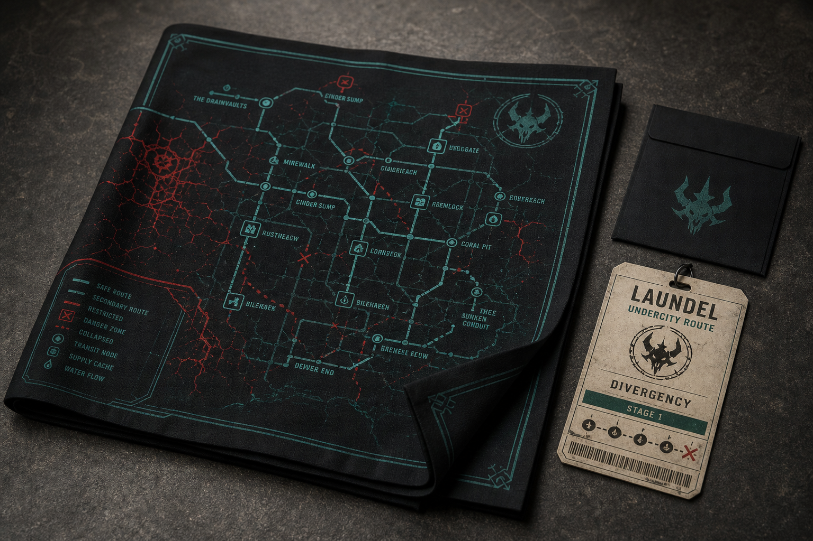
Reward concept mockup: Laundel route cloth pass
Caption to use: Reward concept mockup: Laundel route cloth pass. Use as a Field Relics visual or future add-on concept only if the tier text clearly says so.
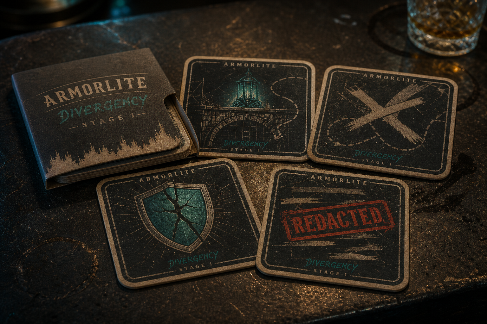
Optional add-on concept mockup: Armorlite coaster set
Caption to use: Optional add-on concept mockup: Armorlite coaster set. Do not imply it ships in the Full-Meltdown Collector unless it is added to the reward ladder and fulfillment budget.
#Field Relics Digital Art Sheet And In-World Reward Visuals
The Field Relics Digital Art Sheet is a downloadable visual/lore sheet showing in-world objects such as masks, tokens, vials, patches, and symbols with short captions. Use these images to support wallpapers, avatar icons, lore dossier pages, Digital Evidence Pack pages, supporter-wall badges, Digital Field Artbook pages, and the Field Relics Digital Art Sheet. These are not paid gameplay power.
If any Field Relics appear inside the finished game, they should be normal discoverable or earnable items for all players. Backers may receive digital art, dossier pages, supporter badges, beta credit, approved graffiti, or scoped background/lore participation, but not exclusive weapons, stat boosts, playable characters, or combat advantages.
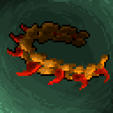
Field Relics visual: Beacon bracelet icon
Caption to use: Field Relics visual: Beacon bracelet icon. Use as bracelet identity, supporter badge detail, or dossier object art.
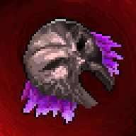
Field Relics visual: Mask of the Listening Route
Caption to use: Field Relics visual: Mask of the Listening Route. Use as Sakuri-themed lore art or in-game discoverable object art.
Field Relics visual: Emerald Skull token
Caption to use: Field Relics visual: Emerald Skull token. Use as Calvaria-themed lore art, dossier detail, or reward sheet symbol.
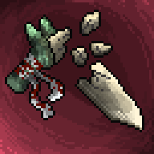
Field Relics visual: Relic-Iron knife
Caption to use: Field Relics visual: Relic-Iron knife. Use as Bastonne contraband art, prison escape prop art, or dossier detail.
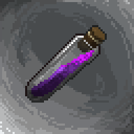
Field Relics visual: Red treatment vial
Caption to use: Field Relics visual: Red treatment vial. Use as Jamerson research evidence, laboratory dossier art, or reward sheet symbol.
Field Relics visual: Bastonne cloth patch
Caption to use: Field Relics visual: Bastonne cloth patch. Use as a prisoner record texture, wallpaper detail, or Digital Field Artbook object.
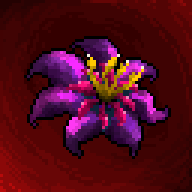
Field Relics visual: Heniana flower seal
Caption to use: Field Relics visual: Heniana flower seal. Use as a softer emotional symbol for Heniana, Heni, and the story's cure thread.
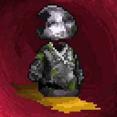
Field Relics visual: Worn field figure
Caption to use: Field Relics visual: Worn field figure. Use as supporter-wall badge art, avatar/icon detail, or small collectible concept.
Every reward tier must have a matching visual or sample image before launch.
All pledge-tier item symbols, product mockups, optional concepts, and Field Relics item visuals listed above should appear in the reviewer page before launch.
Every photoreal product image must say "Concept mockup — final materials may differ" until vendor samples are confirmed.
Every digital reward preview must state its format: JPG/PNG, PDF, MP3/WAV, Steam/platform key, or secure download.
Images should be clean, bright enough to read, and free of debug UI unless the caption clearly says it is work-in-progress.
Physical reward images should show scale or context where possible: A3 poster size, bracelet material direction, patch/sticker/keychain scale, cap sizing, badge/lanyard materials, cargo tag materials, and pack contents.
Staged collector mockups must show or caption the exact included items, especially when props appear beside the actual reward.
Optional concept mockups must be grouped separately from guaranteed rewards.
Do not mix in-game discoverable relics with paid reward promises unless the copy clearly says the object is only a visual theme, lore reward, or non-exclusive in-game discoverable.
One image block for digital rewards: wallpaper, avatar/icon pack, lore dossier, Digital Evidence Pack, soundtrack, Digital Field Artbook, Field Relics Digital Art Sheet, and credits-badge wallpaper variant.
One guaranteed-reward image block for the A3 poster, printed Field Artbook/art zine, Beacon bracelet, and Pixel Character Patch & Keychain Set concept mockups.
One clearly separated "Potential add-ons — not included yet" block for the Bastonne cell key cap, cell key keychain, Divergency Daily access badge, and cargo tag.
One clearly labeled concept/add-on block for coaster set, cloth pass, or evidence pack if those assets are shown.
Shipping and fulfillment notes directly below the physical reward visuals.
Creative tier scope and approval rules near the $250 and $500 tiers.
Physical rewards ship to EU countries only at launch.
Ship-from region: France/EU.
Glitched-Out Scout or poster-only shipment estimated shipping: EUR 8-15 depending on EU destination.
Full-Meltdown Collector estimated shipping: EUR 12-22 depending on EU destination and final printed artbook weight.
Printed artbook, bracelet, Pixel Character Patch & Keychain Set, cap, keychain, badge, cargo tag, or combined collector shipment estimated shipping: EUR 12-22 depending on EU destination and final package weight.
Physical add-ons should be enabled only for main reward tiers that already include physical shipping; keep digital-only tiers limited to digital add-ons.
Add final country-by-country shipping values before launch if Kickstarter requires exact pricing.
Use Kickstarter surveys or Pledge Manager for addresses and final reward preferences.
State that physical rewards are expected after the digital release window.
Reserve 5-10% extra physical items for damaged parcels, lost mail, and replacement handling.
Prepare these fields before launching Pledge Manager:
Reward item categories: digital key, digital art/audio pack, Digital Field Artbook, Digital Evidence Pack, final credits name, beta access, Glitched-Out Scout, physical Full-Meltdown Collector, Pixel Character Patch & Keychain Set, potential physical add-ons, creative submission.
Market value for the poster, printed artbook, bracelet, and Pixel Character Patch & Keychain Set, plus any add-on that is confirmed before launch.
EU shipping origins and destination countries.
Backer survey questions for approved supporter-wall display name or alias, credits name where relevant, and creative tier submissions.
Survey character limits for supporter-wall names, final-credits names, beta tester credits, and creative-tier submissions.
Add-on selection fields for the printed Field Artbook, Bastonne cell key cap, cell key keychain, Divergency Daily access badge, and cargo tag only if those add-ons are confirmed before launch.
Digital file/code delivery method.
Printed artbook page count, trim size, binding, paper stock, proofing date, and final print deadline.
Address lock date before physical production.
Replacement policy for damaged or lost physical parcels.
Final disclaimer that mockups may change after vendor sampling.
Every reward has a visible sample image, mockup, or clearly labeled visual placeholder.
The featured Kickstarter reward has been chosen: $40 Skullgrin Deluxe for broad global value, or $60 Open-Mind Insider if recognition tests better with preview readers.
EU-only shipping is clearly stated on physical tiers.
Budget and timeline are visible.
Risks & Challenges are complete.
The A3 poster, printed Field Artbook/art zine, Beacon bracelet, and Pixel Character Patch & Keychain Set concept mockups are shown clearly in the guaranteed physical reward section.
Optional product mockups do not imply extra physical rewards unless those items are priced, budgeted, and listed in a tier or add-on.
The $250 and $500 creative tiers have scope limits and approval rules.
Image library
Gallery
Main image assets grouped by source folder, so stage art, direct UI images, rewards, items, characters, and other references stay easy to scan.
Folders
14
Images
363
Order
Folder
Stage 1
65 images
Stage1 - BarStage1 - Bastonne Prison Entrance PlayableStage1 - Bastonne Rescue Approach WideStage1 - Bastonne Rescue ApproachStage1 - BastonneStage1 / Chars - GROGER BossStage1 / Chars - ShemalStage1 - Harbor Sunset Battle MapStage1 - In The City 2 DetailedStage1 - In The City 2Stage1 - In Thecity FixStage1 - Lab 3Stage1 - Lab Under Mechanical Surveillance RoomStage1 - Marseille ArtStage1 - Marseille Metropolis Splash DayStage1 - Marseille Metropolis SplashStage1 - Marsile Background Before Finish Detailed SourceStage1 - Marsile Background Before FinishStage1 - Marsile Background Dark GeneratedStage1 - Marsile BackgroundStage1 - Model Chars ChapterStage1 / Ref - Base DeepStage1 / Ref - Bastonne V2 SourceStage1 / Ref - Bastonne V3 SourceStage1 / Ref - Bastonne V4 SourceStage1 / Ref - Bastonne V4Stage1 / Ref - ChatGPT Image 25 Mai 2026 19 46 25Stage1 / Ref - CourjulienStage1 / Ref - Marseille ViewStage1 / Ref - PanierStage1 - Restingzone Detailed SourceStage1 - Restingzone DetailedStage1 - RestingzoneStage1 - Road To Tortur Room Detailed Wide WalkStage1 - Road To Tortur Room DetailedStage1 - Road To Tortur Room V2 SourceStage1 - Road To Tortur RoomStage1 - Sanh 1Stage1 - Sanh 2 Detailed SourceStage1 - Sanh 2Stage1 - Sanh 3Stage1 - Sewer1Stage1 - Sewer2Stage1 - Sewer3Stage1 - Sewer4 DetailedStage1 - Sewer4 Side ScrollingStage1 - Sewer4Stage1 - Special Jail 2Stage1 - Special Jail 3Stage1 - Special Jail Detailed SourceStage1 - Special JailStage1 - Stage0 To Bastonne Cutscene PosterStage1 - Stage0 To Bastonne CutsceneStage1 - StartStage1 - StrangerStage1 - Structure Lab UndergroundStage1 - Submarine Backup Generator B Engine Heat RoomStage1 - Submarine Central Reactor AccessStage1 - Submarine Shemal Containment ChamberStage1 - Team Deep Solei Tutorial MapStage1 - Torture Room 1Stage1 - Torture Room 2Stage1 - Torture Room 3 Same Art More Detail SourceStage1 - Torture Room 3 Same Art More DetailStage1 - Torture Room Test
Stage 2
32 images
Stage2 - Bamboo Forest 2Stage2 - Bamboo Forest HUD AIStage2 - Black Bamboo Forest CompleteStage2 - Black Bamboo ForestStage2 - Bridge 2 R 1Stage2 - Bridge 4 CompleteStage2 - Bridge 4Stage2 - Bridge 1Stage2 - Bridge 2 R 4Stage2 - Gate CompleteStage2 - GateStage2 - J 2 Road To TempleStage2 - J Start SakuriStage2 - J 1 SakuriStage2 - J 2 Road To Temple2Stage2 - Noh Theatrr FixStage2 - Noh TheattreStage2 - Old Room SakuriStage2 - Outside Complete OpenStage2 - Outside CompleteStage2 - OutsideStage2 - Sakuri Final 1 Phase 1 CompleteStage2 - Sakuri Final 1 Phase 1 Environment CompleteStage2 - Sakuri Final 1 Phase 1Stage2 - Sakuri Final 1 ConceptStage2 - Sakuri Final 1 Phase 3Stage2 - Sakuri Deceptive Door Puzzle ConceptStage2 - Sakuri Roadupmoutain CompleteStage2 - Sakuri RoadupmoutainStage2 - SakuriStage2 - Sin 1Stage2 - Temple
Stage5 - Final Boss JamersonStage5 - Heni Heniana ResonanceStage5 - Meet The God TrailerStage5 - The Cradle Landscape
UI
14 images
UI - Character Selcted StoryUI - Command List GeneratedUI - Command List SpritesheetUI - Heros ShopUI - In Game GeneratedUI - Main Menu Full UiUI - Main Menu Illustration BaseUI - Pause Menu GenereedUI - Relay IP Room Ip Local SelectedUI - Relay IP Room Relay SelectedUI - Settings Menu Generated V2UI - Settings Menu GeneratedUI - Settings Menu Mockup 805x456UI - Settings Menu Mockup V2 805x456
Characters
11 images
Chars - Blood Lai GifChars - Crepp Stage3Chars / Deep - Deep Sword 1Chars / Deep - Deep Sword 2Chars / Deep - DeepChars - Imge IngameChars - Model Chapter 1 New 2t1Chars - New Creep 1Chars - New CreepChars - PosterChars - SlashArt 2